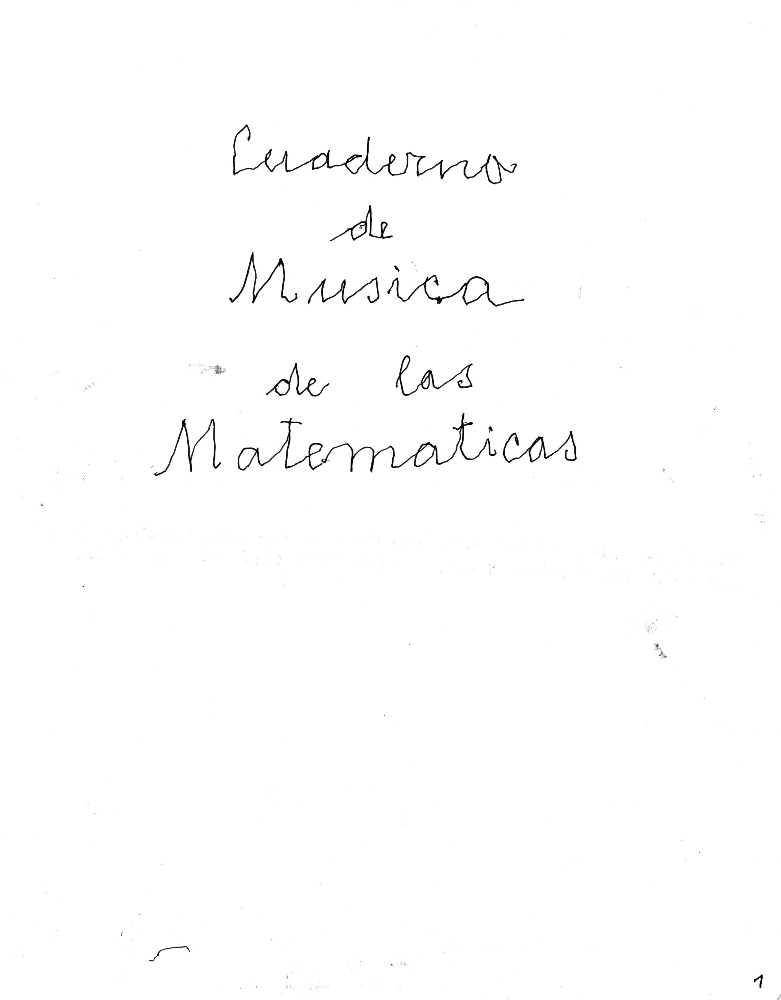
Cuaderno
de
Música
de las
Matemáticas
1
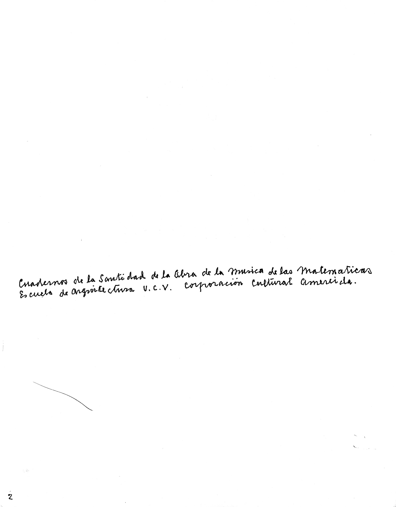
Cuadernos de la Santidad de la Obra de la Música de las Matemáticas Escuela de Arquitectura U.C.V. Corporación Cultural Amereida. 2
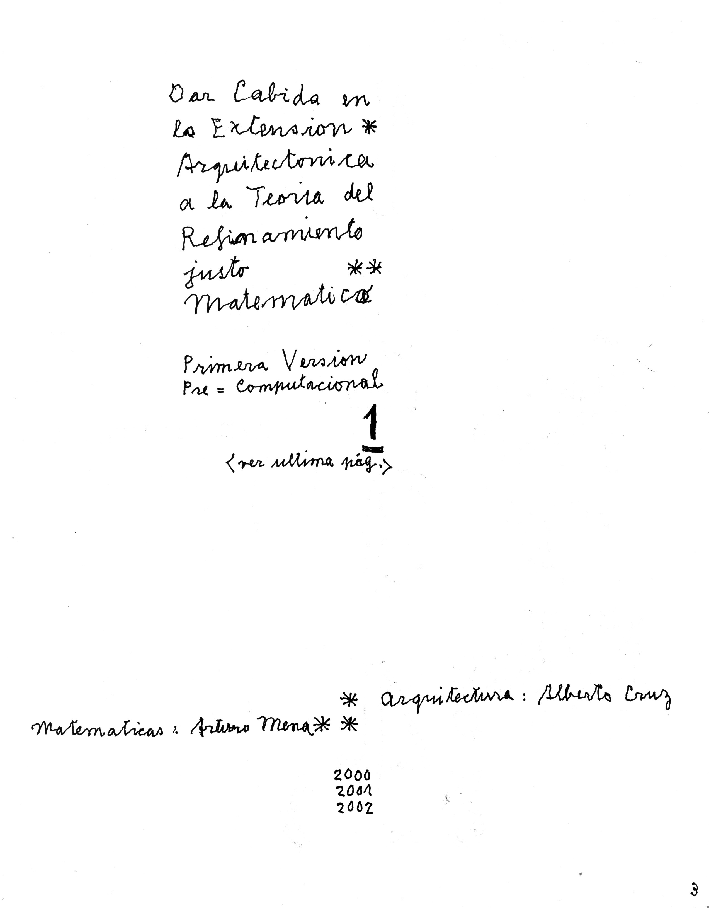
Dar Cabida en
la Extensión *
Arquitectónica
a la Teoría del
Refinamiento
justo **
Matemático
Primera Versión
Pre = Computacional
1
<ver última pág.>
* Arquitectura: Alberto Cruz
Matemáticas: Arturo Mena**
2000
2001
2002
3
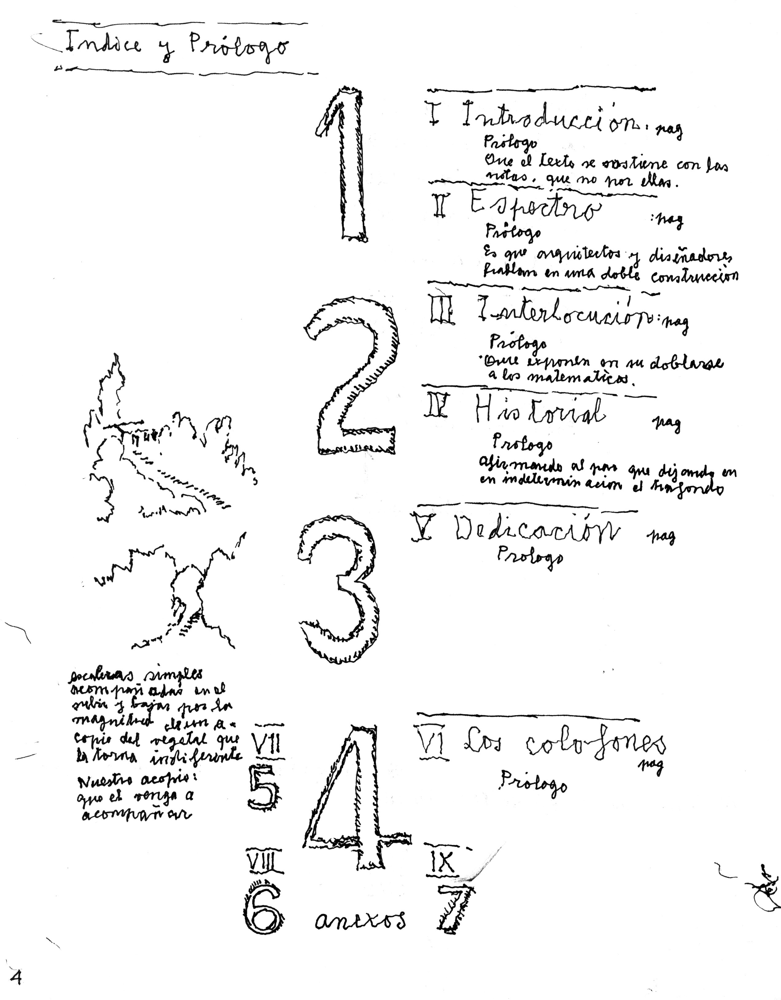
Indice y Prólogo
I Introducción: pag
1
Prólogo
Que el texto se sostiene con las
notas, que no por ellas.
II Espectro : pag
Prólogo
Es que arquitectos y diseñadores
habitan en una doble construcción
III Interlocución: pag
2 Prólogo
Que exponer en su doblarse
a los matemáticos.
IV Historial pag
Prólogo
afirmando al par que dejando en
en indeterminación el trasfondo
V Dedicación pag
3
Prólogo
Lecturas simples
acompañadas en el
abrir y bajar por la
magnitud de un a- VI Los colofones
copio del vegetal que VII
la torna insignificante Prólogos pag
5
Nuestro acopio: 4
que el venga a
acompañar
VIII IX
6 anexos 7
4
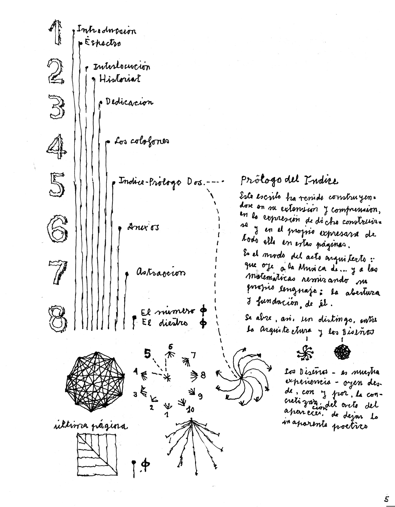
1 Introducción
Espectro
2 Interlocución
Historial
3 Dedicación
4 Los colofones
5 Indice-Prólogo Dos.---- Prólogo del Indice
Este escrito ha venido construyen-
dose en su extensión y comprensión,
6 Anexos
en la expresión de dicho construir-
se y en el propio expresarse de
todo ello en estas páginas.
7 Atracción
Es el modo del acto arquitecto ::
que oye a la Música de... y a las
Matemáticas revisando su
8 El número φ
propio lenguaje: la abertura
El dinero φ
y fundación, de él.
Se abre, así, un distingo, entre
la Arquitectura y los Diseños
Los Diseños - es nuestra
experiencia - oyen des-
de, con y por, la con-
última página cretización del orbe del
aparecer. de dejar lo
inaparente poético
φ
5
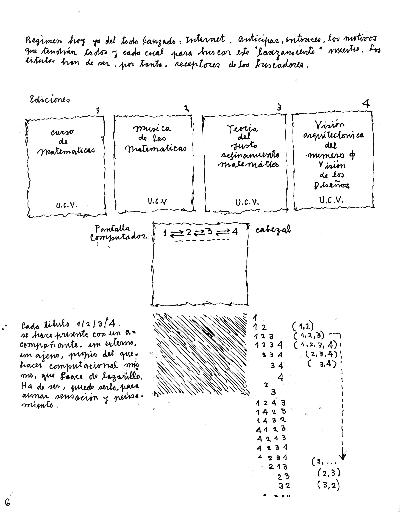
Régimen hoy ya del todo lanzado: Internet. Anticipar, entonces, los motivos
que tendrán todos y cada cual para buscar este “lanzamiento” nuestro. Los
títulos han de ser, por tanto, receptores de los buscadores.
Ediciones
1 2 3 4
curso Música Teoría Visión
de de las del arquitectónica
Matemáticas Matemáticas justo del
refinamiento número φ
Matemático Visión
de los
Diseños
U.C.V. U.C.V. U.C.V. U.C.V.
Pantalla 1 ⇄ 2 ⇄ 3 ⇄ 4 cabezal
Computador.
Cada título 1/2/3/4. 1
se hace presente con un a- 1 2 (1,2)
compañante, un alterno, 1 2 3 (1,2,3)
un ajeno, propio del que- 1 2 3 4 (1,2,3,4)
hacer computacional mis- 2 3 4 (2,3,4)
mo, que hace de lazarillo. 3 4 (3,4)
Ha de ser, puede serlo, para 4
aunar sensación y pensa- 2
miento. 3
1 2 4 3
1 4 2 3
1 4 3 2
4 1 2 3
4 2 1 3
4 2 3 1
4 2 3 1
2 1 3
2 3 (2,...
3 2 (2,3)
. . . . (3,2)
6
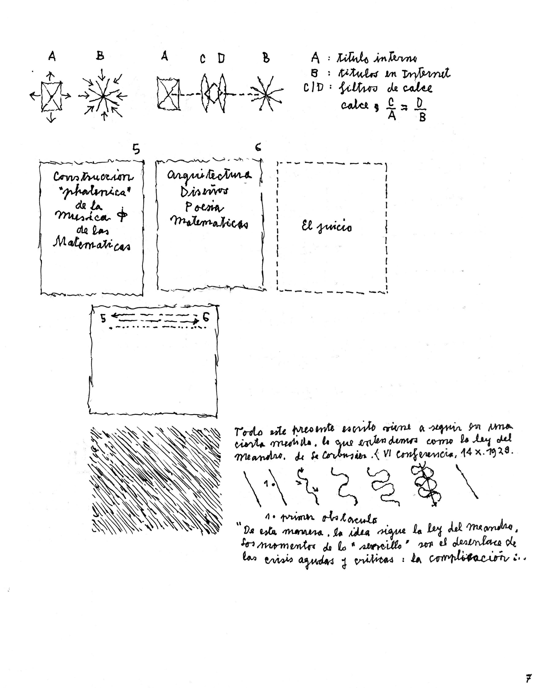
A B A C D B
A: titulo interno
B: títulos en Internet
C/D: filtros de calce
calce: C/A = D/B
5 6
Construcción Arquitectura
"phalenica" Diseños
de la Poesía
Música φ Matemáticas
de las
Matemáticas El juicio
5 ←────────────→6
Todo este presente escrito viene a seguir en una
cierta medida, lo que entendemos como la ley del
Meandro. de Le Corbusier. <VI Conferencia,14.X.1939.
1.
1. primer obstaculo
“De esta manera, la idea sigue la ley del meandro,
Los momentos de lo “sencillo” son el desenlace de
las crisis agudas y criticas: la complicación...
7
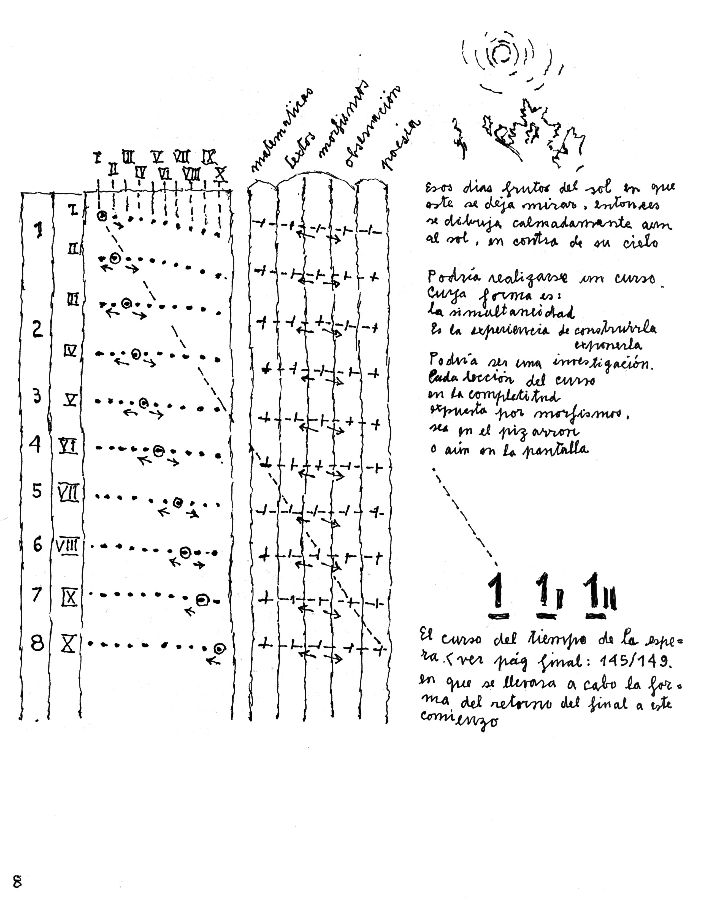
matemáticas texto motivos observación poesía
I III V VII IX
II IV VI VIII X
1 I Esos días lentos del sol en que
este se deja mirar, entonces
se dibuja calladamente aun
al sol, en contra de su cielo
II
Podría realizarse un curso.
Cuya forma es:
la simultaneidad
III Es la experiencia de construirla
2 exponerla
Podría ser una investigación.
Cada lección del curso
en la completitud
IV expuesta por paralelismos,
sea en el pizarrón
o aún en la pantalla.
3 V
4 VI
5 VII 1 1₁ 1₂
6 VIII El curso del tiempo de la espe-
ra. <ver pág final: 145/149.
en que se lleva a cabo la for-
ma del retorno del final a este
7 IX comienzo
8 X
8
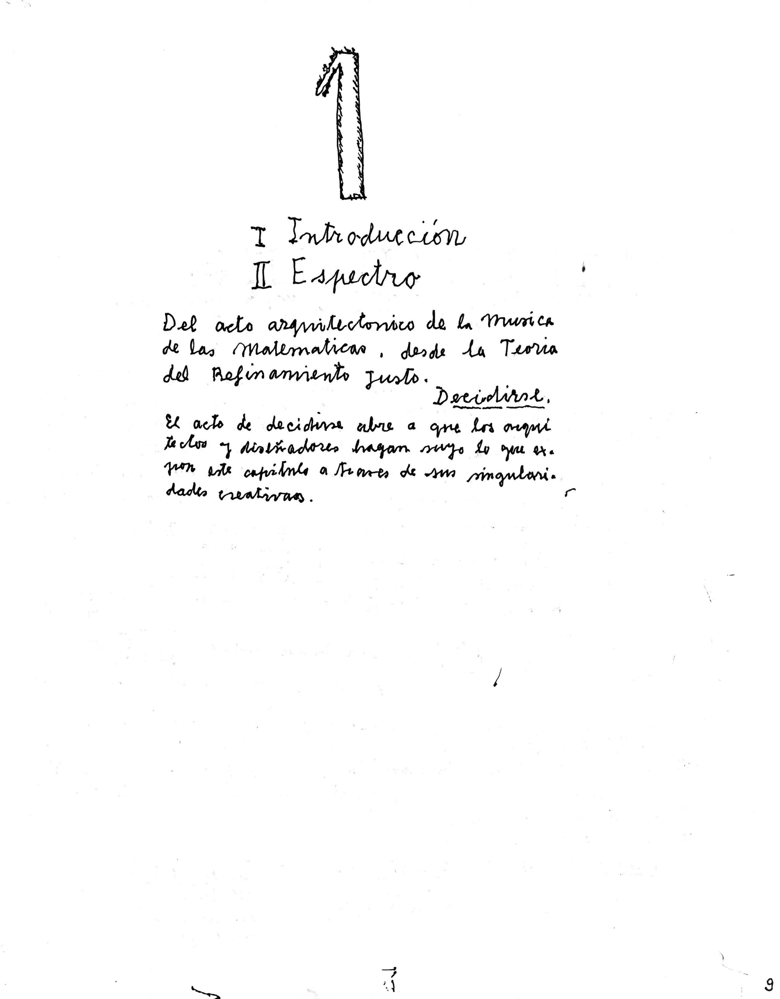
1
I Introducción
II Espectro
Del acto arquitectónico de la Música
de las Matemáticas, desde la Teoría
del Refinamiento Justo.
Decidirse.
El acto de decidirse abre a que los arqui-
tectos y diseñadores hagan suyo lo que ex-
pone este capítulo a través de sus singulari-
dades creativas.
9
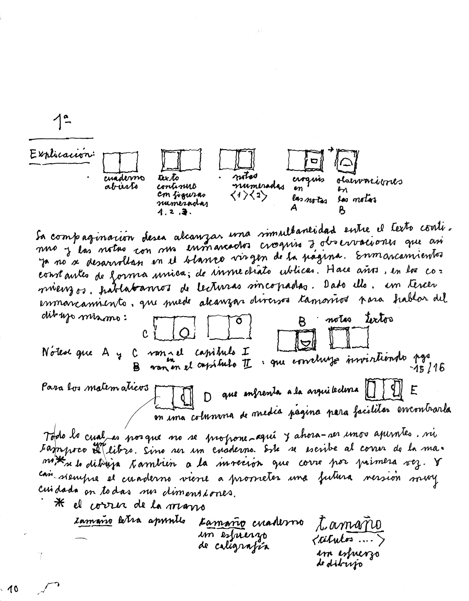
1ª
Explicación:
cuaderno texto notas croquis observaciones
abierto continuo numeradas en en
en figuras <1><2> las notas las notas
numeradas A B
1. 2. 3.
La compaginación desea alcanzar una simultaneidad entre el texto conti-
nuo y las notas con sus enmarcados croquis y observaciones que asi
ya no se desarrollan en el blanco virgen de la página. Enmarcamientos
constantes de forma única; de inmediato ubicuas. Hace años, en los co-
mienzos, hablabamos de lecturas inconclusas. Dado ello, un tercer
enmarcamiento, que puede alcanzar diversos tamaños para hablar del
dibujo mismo:
C B : notas texto
Nótese que A y C van en el capítulo I
B van en el capítulo II: que concluye invirtiendo pag
15/16
Para los matemáticos
D que enfrenta a la arquitectura E
en una columna de media página para facilitar encontrarlo
Todo lo cual es porque no se propone -aquí y ahora- ser unos apuntes, ni
Tampoco un libro. Sino ser un cuaderno. Este se escribe al correr de la ma-
no;*se lo dibuja también a la intención que corre por primera vez. Y
casi siempre el cuaderno viene a prometer una futura versión muy
cuidada en todas sus dimensiones.
* el correr de la mano
tamaño letra apunte tamaño cuaderno tamaño
un esfuerzo <título ....>
de caligrafía
un esfuerzo
de dibujo
10
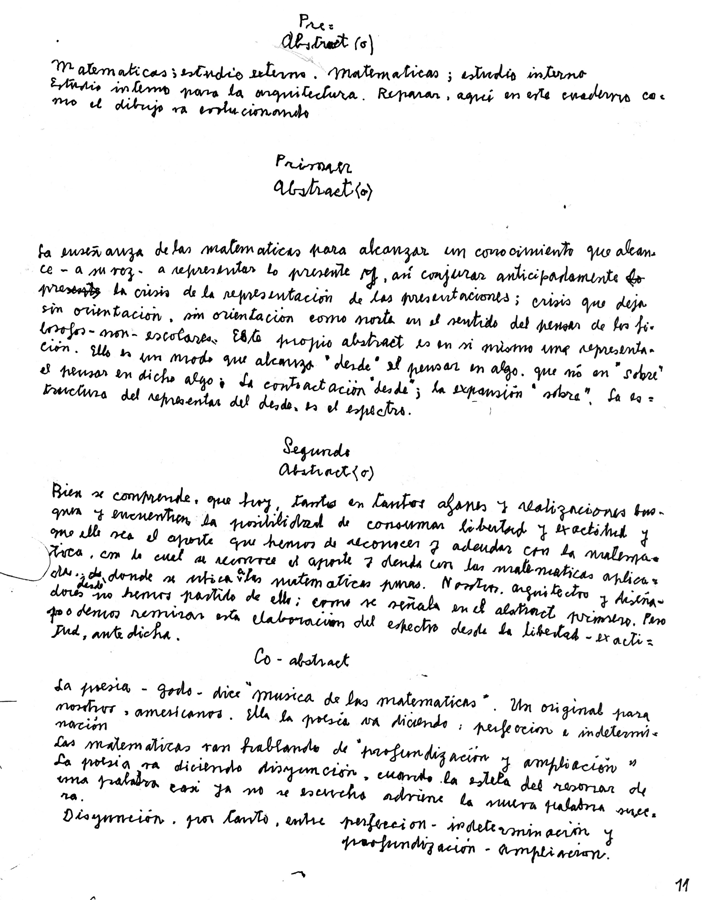
Pre =
Abstract (o)
Matemáticas; estudio externo. Matemáticas; estudio interno
Estudio interno para la arquitectura. Reparar, aquí en este cuaderno co-
mo el dibujo va evolucionando
Primer
Abstract (o)
La enseñanza de las matemáticas para alcanzar un conocimiento que alcan-
ce -a su vez- a representar lo presente y, así conjurar anticipadamente lo
presente la crisis de la representación de las presentaciones; crisis que deja
sin orientación, sin orientación como norte en el sentido del pensar de los fi-
losofos -non- escolares. Este propio abstract es en si mismo una representa-
ción. Ella es un modo que alcanza “desde” el pensar en algo. que nó en “sobre”
el pensar en dicho algo; la contracción “desde”; la expansión “sobre”. La es-
tructura del representar del desde, es el espectro.
Segundo
Abstract (o)
Bien se comprende, que hoy, tanto en tantos afanes y realizaciones bus-
quen y encuentren la posibilidad de consumar libertad y exactitud y
que ello sea el aporte que hemos de reconocer y adecuar con la matema-
tica, con lo cuál se reconoce el aporte y deuda con las matemáticas aplica-
das; de donde se ubica las matemáticas puras. Nosotros, arquitectos y diseña-
dores no hemos desde partido de ello; como se señala en el abstract primero. Pero
podemos revisar esta elaboración del espectro desde la libertad - exacti-
tud, antedicha.
Co - abstract
La poesía -godo- dice “música de las matemáticas”. Un original para
nosotros, americanos. Ella la poesía va diciendo: perfección e indetermi-
nación
Las matemáticas van hablando de “profundización y ampliación”
La poesía va diciendo disyunción, cuando la estela del resonar de
una palabra casi ya no se escucha adviene la nueva palabra nue-
va.
Disyunción, por tanto, entre perfección - indeterminación y
profundización - ampliación.
11
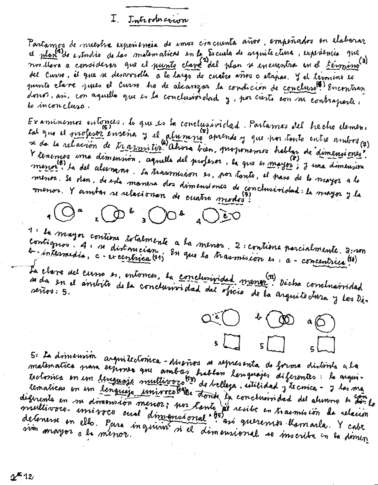
I. Introducción
Partamos de nuestra experiencia de unos cincuenta años, empeñados en elaborar
el plan(1) de estudio de las matemáticas en la Escuela de arquitectura, experiencia que
nos lleva a considerar que el punto clave(2) del plan se encuentra en el término(3)
del Curso; el que se desarrolla a lo largo de cuatro años o etapas. Y el término es
punto clave pues el Curso ha de alcanzar la condición de concluso(4). Encontrán-
donos, así, con aquello que es la conclusividad y, por cierto con su contraparte:
lo inconcluso.
Examinemos entonces, lo que es la conclusividad. Partamos del hecho elemen-
tal que el profesor(5) enseña y el alumno(5) aprende y que por tanto entre ambos
se da la relación de trasmitir(6). Ahora bien, proponemos hablar de “dimensiones”(7).
Y tenemos una dimensión, aquella del profesor, la que es mayor(8); y una dimensión
menor(8), la del alumno. La transmisión es, por tanto, el paso de lo mayor a lo
menor. Se dan, de esta manera dos dimensiones de conclusividad: la mayor y la
menor. Y ambas se relacionan de cuatro modos(9):
1 ◯ a 2 ◯○ b 3 ◯ ○ b 4 ◯ c ○
1: la mayor contiene totalmente a la menor. 2: contiene parcialmente. 3: son
contiguos. 4: se distancian. En que la transmisión es: a - concéntrica(10)
b - intermedia, c - excéntrica(11).
La clave del Curso es, entonces, la conclusividad menor(12). Dicha conclusividad
se da en el ámbito de la conclusividad del oficio de la arquitectura y los Di-
seños: 5.
c ◯ b ◯○ a ◉
5 □ 5 □ 5 □
5: La dimensión arquitectónica-diseños se representa de forma distinta a la
matemática para expresar que ambas hablan lenguajes diferentes: la arqui-
tectónica en un lenguaje multívoco(13) de belleza, utilidad y técnica - y las ma-
temáticas en un lenguaje unívoco(14). de donde La conclusividad del alumno lo con-
diferencia en su dimensión menor; por tanto él recibe en transmisión la relación
multívoco - unívoco cual “dimensional”(15) así queremos llamarla. Y cabe
detenerse en ello. Para inquirir si el dimensional se inscribe en la dimen-
sión mayor o la menor.
2ª 12
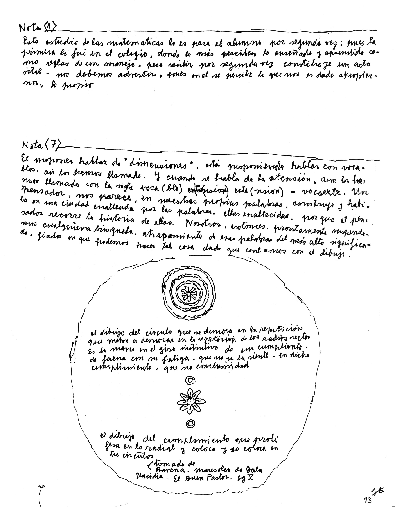
Nota <1>
Este estudio de las matemáticas lo es para el alumno por segunda vez; pues la
primera lo fué en el colegio, donde lo más parecido lo enseñado y aprendido co-
mo reglas de un manejo. pero recibir por segunda vez constituye un acto
vital - no debemos advertir, pues en el se recibe lo que nos es dado apropiar-
nos, lo propio
Nota <7>
El proponer hablar de “dimensiones”, está proponiendo hablar con voca-
blos. así los hemos llamado. Y cuando se habla de la extensión, aun la he-
mos llamado con la sigla voca(blo) ext(ensión) ute(nsión) - vocaexté. Un
pensador, nos parece, en nuestras propias palabras, construye y habi-
ta en una ciudad erudita por las palabras, ellas enalteciadas, porque el pen-
sador recorre la historia de ellas. Nosotros, entonces, prontamente suspenda-
mos cualquiera brusquedad, atrapamiento de esas palabras del más alto significa-
do, fiados en que podemos hacer tal cosa dado que contamos con el dibujo.
el dibujo del circulo que se demora en la repetición
que mide o demora en la repetición de los radios rectos
Es la misma en el giro indistinto de un cumplimiento.
de fuerza con su fatiga - que no se la siente - Es dicho
cumplimiento, que no conclusividad
el dibujo del cumplimiento que prodi-
gia en lo radial y coloca y se coloca en
su circulo.
<tomado de
Ravena. Mausoleo de Gala
Placidia. El Buen Pastor. sg V
13
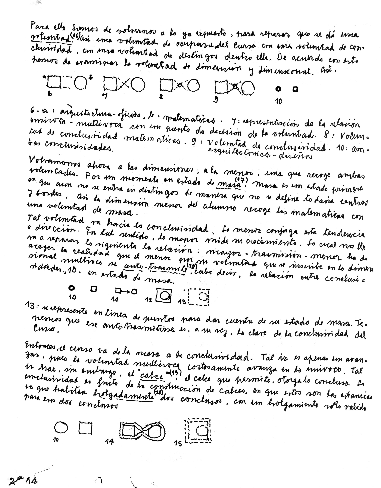
Para ello hemos de volvernos a lo ya expuesto, para reparar que se dá una
voluntad(16). Vale una voluntad de ocuparse del Curso con una voluntad de con-
clusividad, con una voluntad de distinguir dentro ella. De acuerdo con esto
hemos de examinar la voluntad de dimensión y dimensional. Así:
a □ b ◯ 7 □╳◯ 8 □⋯◯ 9 □⋯◯ 10 ○ □
6 - a: arquitectura - oficios, b: matemáticas. 7: representación de la relación
unívoca - multívoca, con un punto de decisión de la voluntad. 8: Volun-
tad de conclusividad matemáticas. 9: Voluntad de conclusividad. 10: am-
bas conclusividades. arquitectónica - diseños
Volvamonos ahora a las dimensiones, a la menor, una que recoge ambas
voluntades. Por un momento en estado de masa(17). Masa es un estado primero
en que aun no se entra en distingos de manera que no se define todavía centros
y bordes. Así la dimensión menor del alumno recoge las matemáticas con
una voluntad de masa.
Tal voluntad va hacia la conclusividad. La menor conjuga esta tendencia
o dirección. En tal sentido, lo menor mide su crecimiento. Lo cual nos lle-
va a reparar lo siguiente la relación: mayor - transmisión - menor ha de
acoger la realidad que el menor por su voluntad que se inscribe en lo dimen-
sional multívoco se auto-trasmite(18), vale decir, la relación entre conclusi-
vidades,10. en estado de masa.
10 ○ □ 11 □→○ 12 ▣ 13 □
13: se representa en línea de puntos para dar cuenta de su estado de masa. Te-
nemos que ese autotrasmitirse es, a su vez, la clave de la conclusividad del
Curso.
Entonces el Curso va de la masa a la conclusividad. Tal ir es apenas un avan-
zar, pues la voluntad multívoca constantemente avanza en lo unívoco. Tal
ir trae, sin embargo, el calce(19). El calce que permite, otorga lo concluso. La
conclusividad es fruto de la construcción de calces, en que estos son las estancias
en que habitan holgadamente(20) dos conclusos, con un holgamiento solo valido
para esos dos conclusos
10 ○ □ 14 □⋈○ 15 ▣
2ª 14
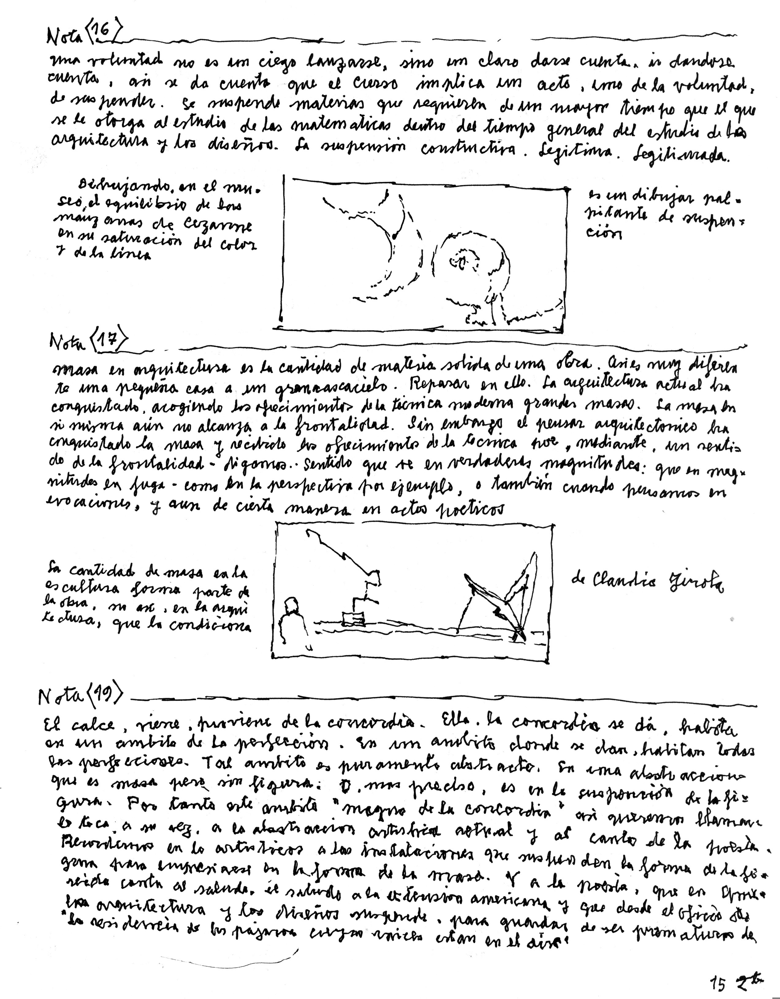
Nota <16>
una voluntad no es un ciego lanzarse, sino un claro darse cuenta. ir dandose
cuenta, así se da cuenta que el Curso implica un acto, uno de la voluntad,
de su pender, se propende materias que requieren de un mayor tiempo que el que
se le otorga al estudio de las matemáticas dentro del tiempo general del estudio de la
arquitectura y los diseños. La suspensión constructiva. Legítima. Legitimada.
Dibujando, en el mu-
seo, el equilibrio de los es un dibujar pal-
manzanos de Cezanne pitante de suspen-
en su saturación del color ción
y de la línea
Nota <17>
Masa en arquitectura es la cantidad de materia solida de una obra. Así es muy diferen-
te una pequeña casa a un rascacielo. Reparar en ello. La arquitectura actual ha
consumado, acogiendo los ofrecimientos de la técnica moderna grandes masas. La masa en
si misma aún no alcanza a la frontalidad. Sin embargo el pensar arquitectónico ha
consumado la masa y recibido los ofrecimientos de la técnica por, mediante, un senti-
do de la frontalidad -digamos-. Sentido que se dá en verdaderas magnitudes: que en mag-
nitudes en fuga - como en la perspectiva por ejemplo, o también cuando pensamos en
evocaciones, y aun de cierta manera en actos poéticos
La cantidad de masa en la
escultura forma parte de de Claudio Girola
la obra, en sí, en la arqui-
tectura, que la condiciona
Nota <19>
El calce, viene, proviene de la concordia. Ella, la concordia se dá, habita
en un ámbito de la perfección, en un ámbito donde se dan, habitan todas
las perfecciones. Tal ámbito es puramente abstracto. En una abstracción
que es una pero sin separar: o, más preciso, es en la suspensión de la fi-
gura. Por tanto este ámbito “mayor de la concordia” así queremos llamarle
es sea, a su vez, a la abstracción artística actual y al canto de la poesía.
Recurrimos en lo artístico a las instalaciones que suspenden la forma de la fi-
gura para sumergirnos en la forma de la masa. Y a la poesía, que en Amé-
rica canta al presente, se sitúa a la extensión americana y que desde el oficio de
la arquitectura y los Diseños suspende, para guardar desde el presentarse la
“la residencia de los signos cuyo reino están en el aire”
15 2ª
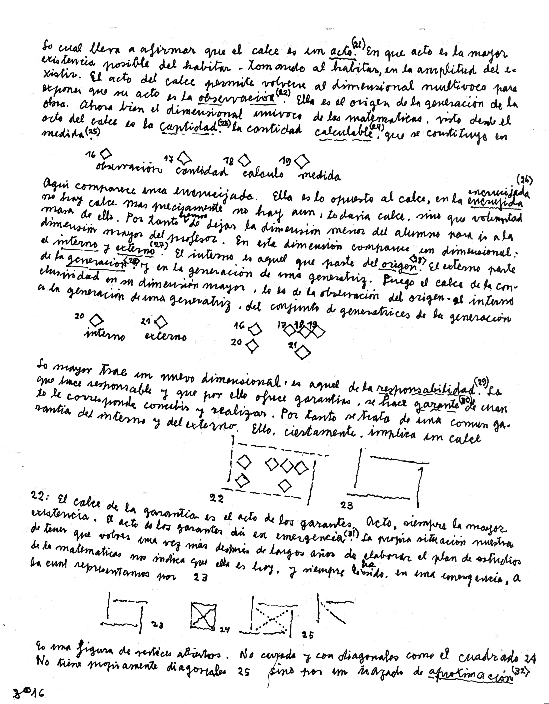
Lo cual lleva a afirmar que el calce es un acto(21). En que acto es la mayor
existencia posible del habitar - tomandolo al habitar, en la amplitud del e-
xistir. El acto del calce permite volverse al dimensional multívoco para
exponer que su acto es la observación(22). Ella es el origen de la generación de la
obra. Ahora bien el dimensional unívoco de las matemáticas, visto desde el
acto del calce es la cantidad(23). La cantidad calculable(24), que se constituye en
medida(25).
16 ◇ 17 ◇ 18 ◇ 19 ◇
observación cantidad calculo medida
Aquí comparece una encrucijada. Ella es lo opuesto al calce, en la encrucijada(26)
no hay calce. Más precisamente no hay aun, todavía calce, sino que voluntad
de ello. Por tanto hemos dicho, la dimensión menor del alumno pasa, irá a la
dimensión mayor del profesor. En esta dimensión comparece un dimensional:
el interno y externo(27). El interno es aquel que parte del origen(28). El externo parte
de la generación(29) y en la generación de una generatriz. Luego el calce de la con-
clusividad en su dimensión mayor, lo es de la observación del origen -el interno
a la generación de una generatriz, del conjunto de generatrices de la generación
20 ◇ 21 ◇ 16 ◇ 17◇18◇19◇
interno externo 20 ◇ 21 ◇
Lo mayor trae un nuevo dimensional: es aquel de la responsabilidad(29). La
que hace responsable y que por ello ofrece garantías, se hace garante(30) de cuan-
to le corresponde concluir y realizar. Por tanto se trata de una comun ga-
rantía del interno y del externo. Ello, ciertamente, implica un calce
22 23
22: El calce de la garantía es el acto de los garantes. Acto, siempre la mayor
existencia. El acto de los garantes dá en emergencia(31) la propia situación nuestra
de tener que volver una vez más después de largos años de elaborar el plan de estudios
de las matemáticas nos indica que ello es hoy, y siempre lo ha sido, en una emergencia. A
la cual representamos por 23
23 24 25
Es una figura de vértices abiertos. No cerrada y con diagonales como el cuadrado 24
No tiene propiamente diagonales 25 sino un trazado de aproximación(32)
3ª16
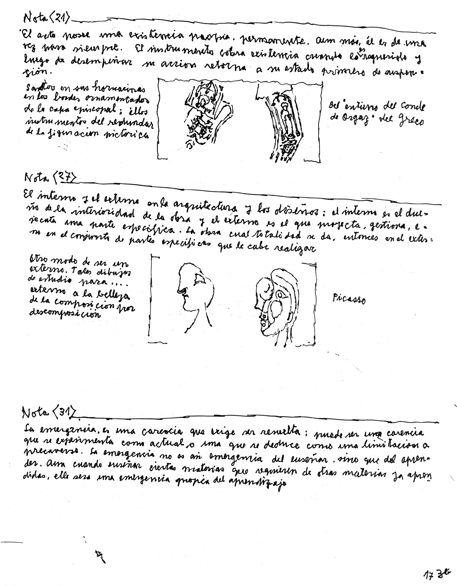
Nota <21>
El acto posee una existencia propia, permanente. Aun más, él es de una
vez para siempre. El instrumento cobra existencia cuando es requerido y
luego de desempeñar su acción retorna a su estado primero de suspen-
sión.
Santos en sus hornacinas
en los bordes ornamentados
de la capa episcopal; ellos Del “entierro del Conde
instrumento del resplandor de Orgaz” del Greco
de la figuración pictórica
Nota <27>
El interno y el externo en la arquitectura y los diseños: el interno es el due-
ño de la interioridad de la obra y el externo es el que proyecta, gestiona, e-
jecuta una parte específica. La obra cual totalidad se da, entonces en el exter-
no en el conjunto de partes específicas que le cabe realizar
Otro modo de ser un
externo. Tales dibujos
de estudio pasan....
externo a la belleza
de la composición por Picasso
descomposición
Nota <31>
La emergencia, es una carencia que exige ser resuelta; puede ser una carencia
que se experimenta como actual, o una que se descubre como una limitación a
precaverse. La emergencia no es así emergencia del enseñar sino que del apren-
dizaje, ella será una emergencia propia del aprendizaje
17 3ª
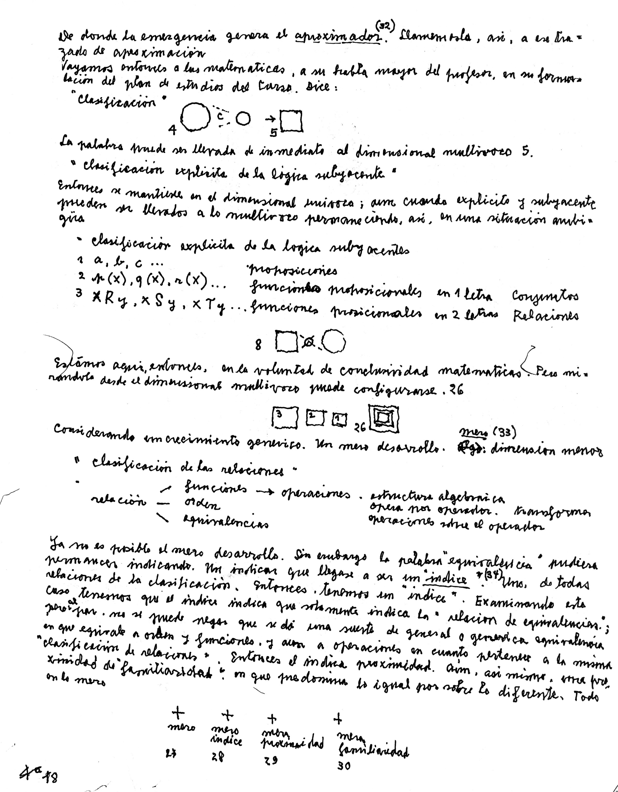
De donde la emergencia genera el aproximador(32). Llamemosla, así, a ese tra-
zado de aproximación
Vayamos entonces a las matemáticas, a su habla mayor del profesor, en su formu-
lación del plan de estudios del Curso. Dice:
“Clasificación”
4 ◯ c ○ → 5 □
La palabra puede ser llevada de inmediato al dimensional multívoco 5.
“clasificación explícita de la lógica subyacente”
Entonces se manifiesta en el dimensional unívoco; aun cuando explícito y subyacente
pueden ser llevados a lo multívoco permaneciendo, así, en una situación ambi-
güa
“Clasificación explícita de la lógica subyacentes
1 a, b, c ... proposiciones
2 p(x), q(x), r(x)... funciones proposicionales en 1 letra Conjuntos
3 xRy, xSy, xTy... funciones proposicionales en 2 letras Relaciones
8 □⋈◯
Estamos aquí, entonces, en la voluntad de conclusividad matemáticas. Pero mi-
rando desde el dimensional multívoco puede configurarse. 26
3 □ 2 □ 1 □ 26 ▣
Considerando un crecimiento genérico. Un mero desarrollo. mero(33): dimensión menor
“Clasificación de las relaciones”
funciones → operaciones. estructura algebraica
relación — orden opera un operador. transforma
equivalencias operaciones sobre el operador
Ya no es posible el mero desarrollo. Sin embargo la palabra “equivalencia” multívoca
permanece, indicando. Un indicar que llega a ser un “índice”(34). Uno de todas
relaciones de la clasificación. Entonces, tenemos un “índice”. Examinando este
caso tenemos que el índice indica que solamente indica la “relación de equivalencia”;
por él fin. no se puede negar que se dá una suerte de general o generica equivalencia
en que equivale a orden y funciones, y aun a operaciones en cuanto pertenece a la misma
“clasificación de relaciones”. Entonces el índice proximidad. Aun, así mismo trae pro-
ximidad de “familiaridad”, en que predomina lo igual por sobre lo diferente. Todo
en lo mero
+ + + +
mero mero mera mera
índice proximidad familiaridad
27 28 29 30
4ª 18
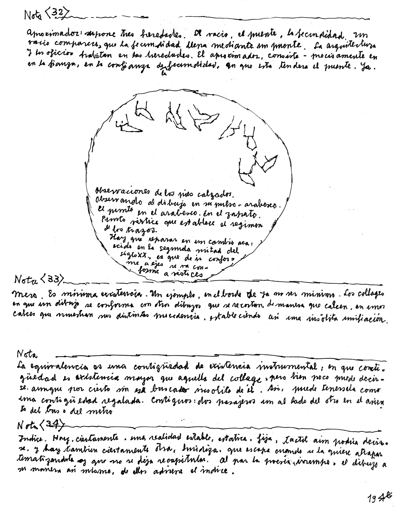
Nota <32>
Aproximador: supone tres facultades. El vacío, el puente, la fecundidad. Un
vacío comparece, que la fecundidad llena mediante un puente. La arquitectura
y los oficios habitan en las heredadas. El aproximador, consiste - precisamente en
en la confianza, en la confianza de la fecundidad, en que esta tenderá el puente. Ya.
Observaciones de los pies calzados.
Observando al dibujo en su pulso - arabesco.
El punto en el arabesco. En el zapato.
Punto vértice que establece el regimen
de los trazos.
Hay que reparar en un cambio aca-
ecido en la segunda mitad del
siglo XX, en que de ir confor-
me a ejes se va con-
forme a vértices
Nota <33>
Mero. Es mínima existencia. Un ejemplo, en el borde de ya no ser mínimo. Los collages
en que un dibujo se conforma con otros dibujos que se recortan de manera que calcen. En unos
calces que muestran su distinta procedencia, estableciendo así una insólita unificación.
Nota
La equivalencia es una contigüidad de existencia instrumental; en que conti-
güedad es existencia mayor que aquella del collage, pero bien poco puede decir-
se aunque por cierto sin ser borrado ni olvido de él. Así, puede tenerse como
una contigüedad regalada. Contiguo: dos mayores un al lado del otro en el ámbi-
to del otro o del resto
Nota <34>
Indice. Hay, ciertamente, una realidad estable, estática, fija, fácil aún poder decir-
se. Y hay también ciertamente otra, huidiza, que escapa cuando se la quiere atrapar
tematizandola, ya que no se deja recapitular. Así por la poesía, en cambio, el dibujo a
su manera así mismo, de ello adviene el índice.
19 4ª
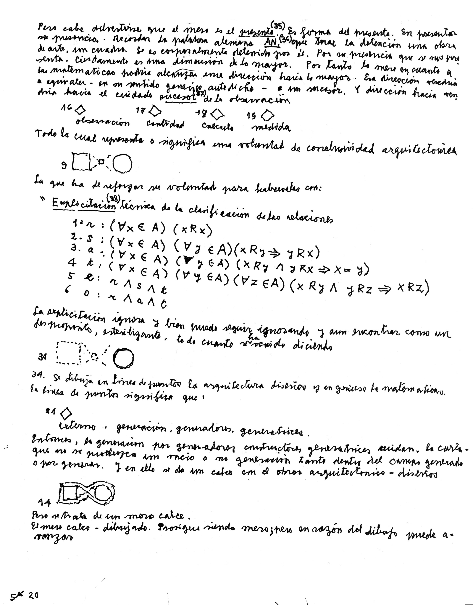
Pero cabe advertirse que el mero es el presente(35). Es forma del presente. En presentar
su presencia. Recordar la profesora alemana AN(36) que hace la distinción una obra
de arte, un cuadro. Le es correspondiente determinado yo. El. Por su presencia que se nos pre-
senta. Ciertamente es una dimensión de lo mayor. Por tanto lo mero en cuanto a
las matemáticas podría alcanzar una dirección hacia lo mayor. Esa dirección vendría
a equivaler - en un sentido genérico, antedicho - a un sucesor. Y dirección hacia ven-
dría hacia el cuidado sucesor(37) de la observación
16 ◇ 17 ◇ 18 ◇ 19 ◇
observación cantidad calculo medida
Todo lo cual representa o significa una voluntad de conclusividad arquitectónica
9 □⋈◯
La que ha de reforzar su voluntad para haberselas con:
“Explicitación(38) técnica de la clasificación de las relaciones
1: r: (∀x ∈ A) (xRx)
2: s: (∀x ∈ A) (∀y ∈ A)(xRy ⇒ yRx)
3: a: (∀x ∈ A) (∀y ∈ A)(xRy ∧ yRx ⇒ x = y)
4: t: (∀x ∈ A) (∀y ∈ A) (∀z ∈ A) (xRy ∧ yRz ⇒ xRz)
5 e: r ∧ s ∧ t
6 o: r ∧ a ∧ t
La explicitación ignora y bien puede seguir ignorando y aun encontrar como un
desproposito, extravigante, todo cuanto se ha venido diciendo
31 □⋈◯
31. Se dibuja en línea de puntos la arquitectura diseños y en grueso las matemáticas.
la línea de puntos significa que:
21 ◇
externo: generación, generadores, generatrices.
Entonces, la generación por generadores constructores generatrices cuidan, la curia-
que no se produzca un vacío o no generación tanto dentro del campo generado
o por generar. Y en ello se da un calce con el obrar arquitectónico - diseños
14 □⋈◯
Pero se trata de un mero calce.
El mero calce - dibujado. Prosigue siendo mero; pero en razón del dibujo puede a-
vanzar
5ª 20
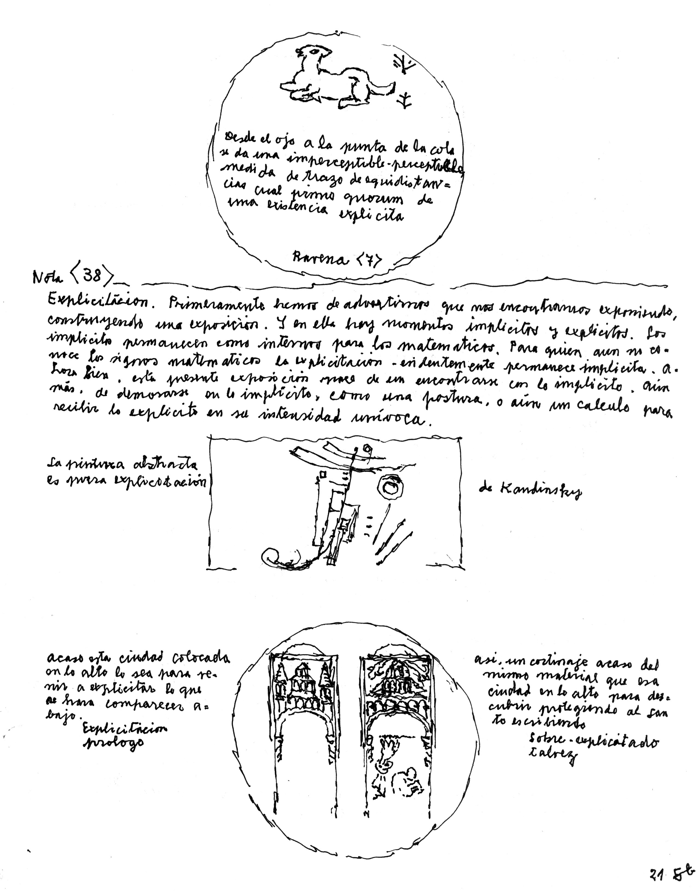
Desde el ojo a la punta de la cola
se da una imperceptible - perceptible
medida de trazo de equidistan-
cias cual primo quorum de
una existencia explícita
Ravena <7>
Nota <38>
Explicitación. Primeramente hemos de advertirnos que nos encontramos exponiendo,
construyendo una exposición. Y en ella hay momentos implícitos y explícitos. Lo
implícito permanece como interno para los matemáticos. Para quien aun no co-
noce los signos matemáticos la explicitación -evidentemente permanece implícita, a-
hora bien, este presente exposición pasa de un encontrarse con lo implícito, aún
más, de demorarse en lo implícito, como una postura, o aún un calculo para
recibir lo explícito en su intensidad unívoca.
La pintura abstracta
es pura explicitación
de Kandinsky
acaso esta ciudad colocada así, un cortinaje acaso del
en lo alto lo sea para re- mismo material que esa
nir a explicitar lo que ciudad en lo alto para des-
de una comparecer a- cubrir protegiendo al san-
bajo. to escribiendo
Explicitación sobre-explicitado
prologo certeza
21 5ª
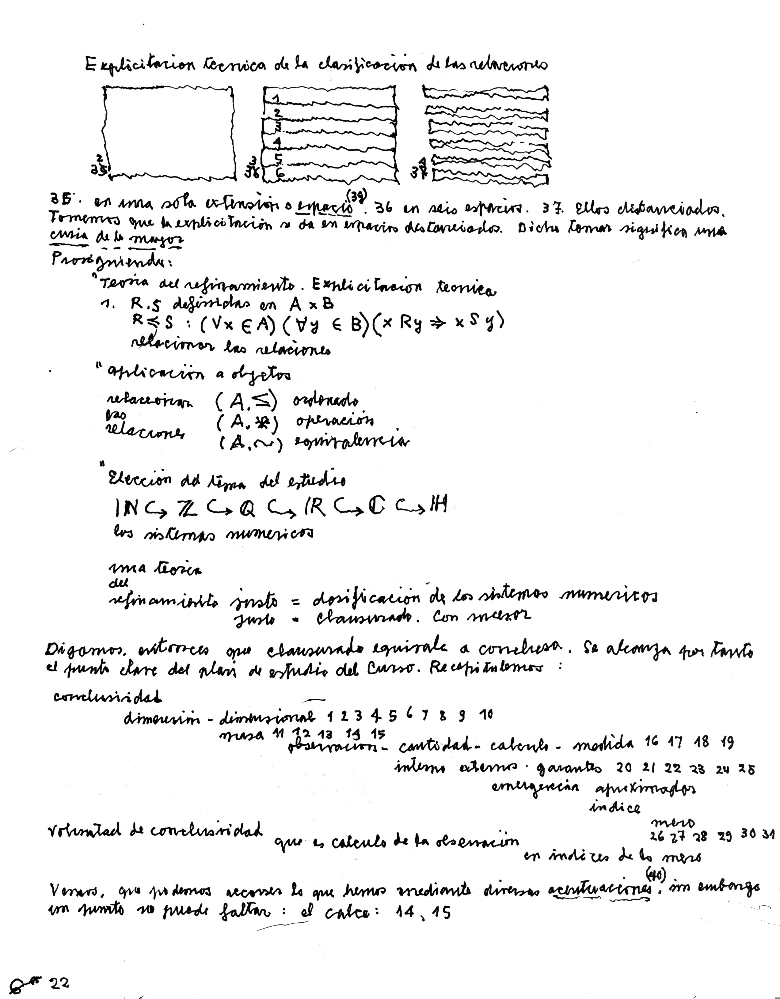
Explicitación técnica de la clasificación de las relaciones
35 36 37
35: en una sola extensión o espacio(39) 36 en seis espacios. 37. Ellos distanciados.
Tenemos que la explicitación se dá en espacios despegados. Dicha forma significa una
curia de lo mayor
Prosiguiendo:
“Teoría del refinamiento. Explicitación técnica
1. R.S definidas en A × B
R ≤ S: (∀x ∈ A)(∀y ∈ B)(xRy ⇒ xSy)
relacionar las relaciones
“aplicación a objetos
relacionar (A, ≤) ordenado
las (A, *) operación
relaciones (A, ∼) equivalencia
“Elección del tema del estudio
ℕ ↪ ℤ ↪ ℚ ↪ ℝ ↪ ℂ ↪ ℍ
los sistemas numéricos
una teoría
del
refinamiento justo = dosificación de los sistemas numéricos
justo = clausurado. Con sucesor
Digamos, entonces que clausurado equivale a concluso. Se alcanza por tanto
el punto clave del plan de estudio del Curso. Recapitulemos:
conclusividad
dimensión - dimensional 1 2 3 4 5 6 7 8 9 10
masa 11 12 13 14 15
observación - cantidad - calculo - medida 16 17 18 19
interno externo garantes 20 21 22 23 24 25
emergencia aproximador
índice
mero
Voluntad de conclusividad 26 27 28 29 30 31
que es calculo de la observación
en índices de lo mero
Vemos, que podemos recoger lo que hemos recibido diversas acentuaciones(40), sin embargo
un punto no puede faltar: el calce: 14,15
6ª22
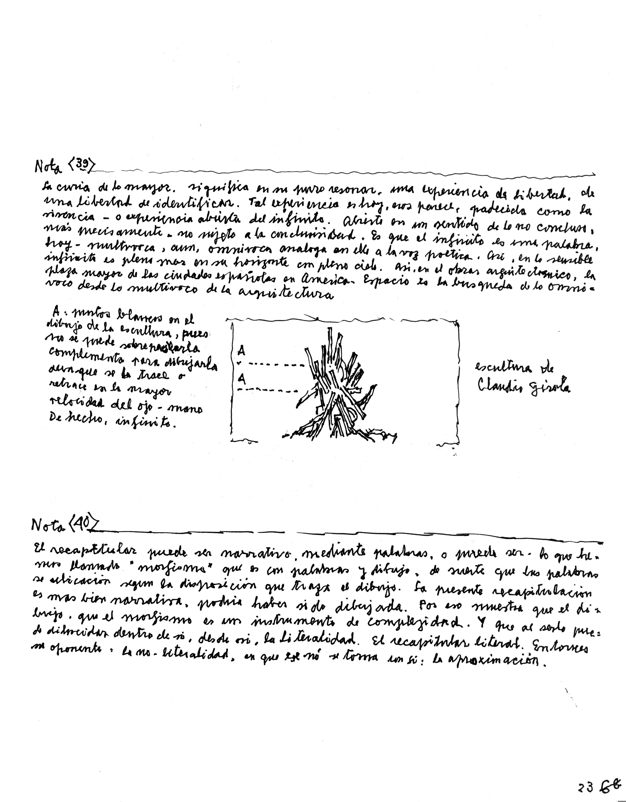
Nota <39>
La curia de lo mayor. Significa en su puro resonar, una experiencia de libertad, de
una libertad de identificarse. Tal experiencia es hoy, nos parece, padecida como la
vivencia - o experiencia abierta del infinito. Abierta en un sentido de lo no concluso,
más precisamente, no sujeto a la conclusividad. Es que el infinito es una palabra,
hoy - numérica, aun, omnívoca, analoga en ella a la voz poética. Así, en lo sensible
infinito es pleno mar en su horizonte con pleno cielo. Así, en el obrar arquitectónico, la
plaza mayor de las ciudades españolas en América. Espacio es la transgredida de lo omní-
voco desde lo multívoco de la arquitectura
A: puntos blancos en el
dibujo de la escultura, pues
no se puede sobreponerle
complemento para dibujarla
aunque se la trace o escultura de
retrace en la mayor Claudio Girola
velocidad del ojo - mano
De hecho, infinito.
Nota <40>
El recapitular puede ser narrativo, mediante palabras, o puede ser -lo que he-
mos llamado “morfismo” que es un palabrear y situar, de suerte que las palabras
se ubicación segun la disposición que traza el dibujo. La presente recapitulación
es más bien narrativa, podría haber sido dibujada. Por eso muestra que el di-
bujo, que el morfismo es un instrumento de complejidad. Y que al serlo pue-
de dilucidar dentro de si, desde si, la literalidad. El recapitular literal. Entonces
su oponente: la no-literalidad, en que no se toma un si: la aproximación.
23 6ª
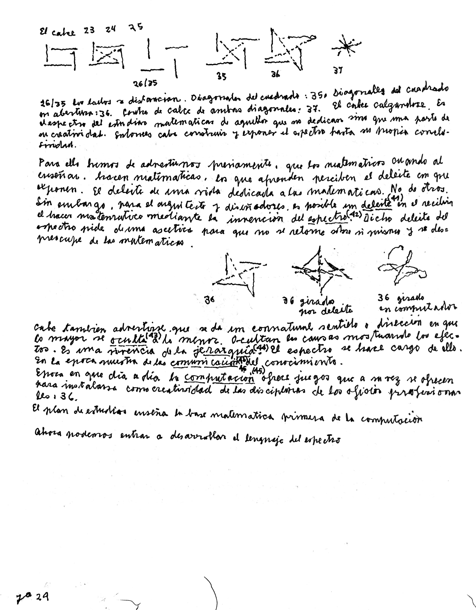
El calce 23 24 25
26/35 35 36 37
26/35 los lados se distancian. Diagonales del cuadrado: 35. Diagonales del cuadrado
en abertura: 36. Centro de calce de ambas diagonales: 37. El calce calza entre. Es
el espectro del estudio matemático de aquellos que no dedican sino que una parte de
su actividad. Entonces cabe construir y exponer el espectro hasta su propia conclu-
sividad.
Para ello hemos de advertirnos previamente, que los matemáticos cuando al
enseñar, hacen matemáticas, los que aprenden reciben el deleite con que
exponen. El deleite de una vida dedicada a las matemáticas. No de otros.
Sin embargo, para el arquitecto y diseñadores, es posible un deleite(41) en el recibir
el hacer matemático mediante la invención del espectro(42). Dicho deleite del
espectro pide de una ascética para que no se retorne sobre si mismo y se des-
preocupe de las matemáticas.
36 36 girado 36 girado
por deleite en computador
Cabe también advertirse, que se da un connatural sentido o dirección en que
lo mayor se oculta(43) a lo menor. Ocultan las causas mostrando los efec-
tos. Es una inversión de las jerarquías(44). El espectro se hace cargo de ello.
En la epoca nuestra de la comunicación(46) del conocimiento.
Epoca en que día a día la computación(45) ofrece juegos que a su vez se ofrecen
para instalarse como creatividad de la disciplina de los oficios profesiona-
les: 36.
El plan de estudios enseña la base matemática primera de la computación
Ahora podemos entrar a desarrollar el lenguaje del espectro
7ª 24
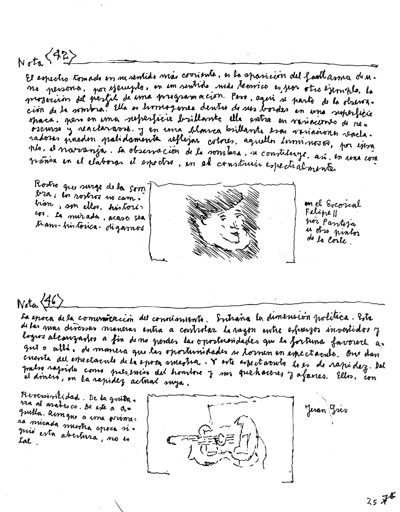
Nota <42>
El espectro tomado en su sentido más corriente, es la aparición del fantasma de u-
na persona, por ejemplo, en un sentido más tecnico es, por otro ejemplo, la
proyección del perfil de una programación. Pero, aquí se parte de la observa-
ción de la sombra. Ella es homogenea dentro de sus bordes en una superficie
opaca, pero en una superficie brillante ella entra en variaciones de re-
oscuro y reaclararse. y en una blanca brillante esas variaciones revele-
adoras pueden palidamente reflejar colores, aquello luminoso, por ejem-
plo, el naranja. La observación de la sombra, se constituye, así, en una com-
pañía en el elaborar el espectro, en el construir espectralmente
Rostro que surge de la som-
bra; los rostros no cam-
bian, son ellos, histori- en el Escorial
cos. La mirada, acaso sea Felipe II
trans-histórica- digamos por Pantoja
u otro pintor
de la Corte.
Nota <46>
La epoca de la comunicación del conocimiento. Entraña la dimensión política. Esta
de las mas diversas maneras entra a controlar la razón entre esfuerzos invertidos y
logros alcanzados a fin de no perder las oportunidades que la fortuna favorece a-
quí o allí. de manera que las oportunidades se tornan en espectaculo. Que dan
cuenta del espectaculo de la epoca nuestra. Y este espectaculo lo es de rapidez. Del
pulso rapido como presencia del hombre y sus quehaceres y afanes. Ello, con
el dinero, en la rapidez actual suya,
Reversibilidad. De la guita-
rra al arabesco. De este a a- Juan Gris
quella. Aunque a una prime-
ra mirada nuestra opera si-
guió esta abertura, no es
tal.
25 7ª
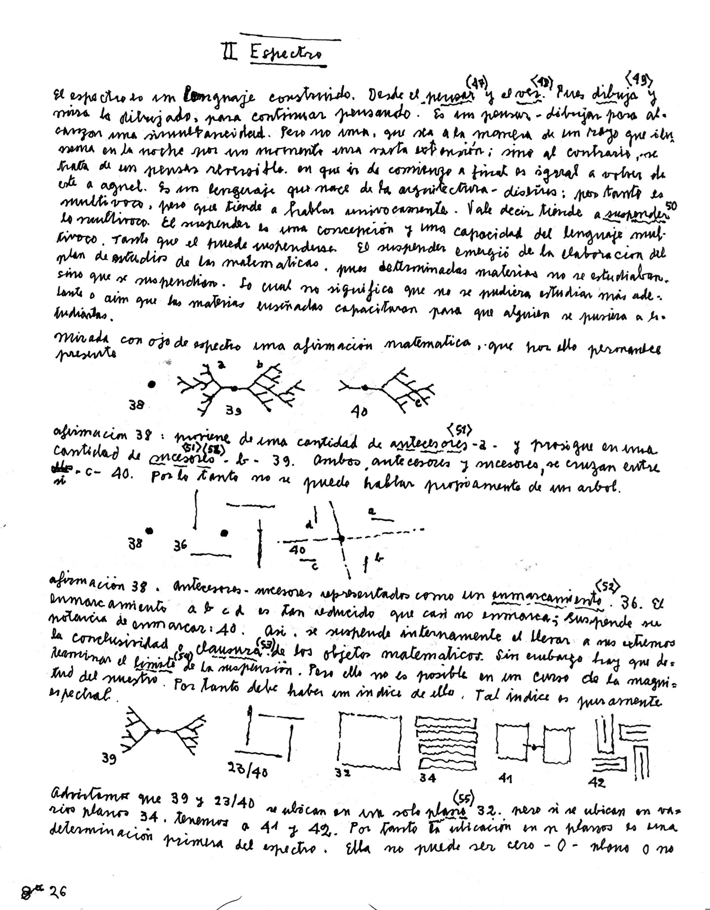
II Espectro
El espectro es un lenguaje construido. Desde el pensar(47) y el ver(48). Pero dibujo(49) y
mira lo dibujado, para continuar pensando. Es un pensar - dibujar para al-
canzar una simultaneidad. Pero no una, que sea a la manera de un reloj que tiene
siempre en la noche por un momento una vasta extensión; sino al contrario, se
trata de un pensar reversible, en que ir de comienzo a final es igual a volver de
este a aquel. Es un lenguaje que nace de la arquitectura - diseños: por tanto es
multívoco, pero que tiende a hablar univocamente. Vale decir tiende a suspender(50)
lo multívoco. El suspender es una concepción y una capacidad del lenguaje mul-
tívoco para que el pueda entenderse. El suspender emergió de la elaboración del
plan de estudio de las matemáticas, pues determinadas materias no se estudiaban,
sino que se suspendían. Lo cual no significa que no se pudieran estudiar más ade-
lante o aun que las materias enseñadas capacitaran para que alguien se pusiera a e-
studiarlas.
Mirada con ojo de espectro una afirmación matemática, que por ello permanece
presente
38 • 39 a b 40
afirmación 38: proviene de una cantidad de antecesores(51) -a- y prosigue en una
cantidad de sucesores(51)(52) -b- 39. Ambos, antecesores y sucesores, se cruzan entre
si - c - 40. Por lo tanto no se puede hablar propiamente de un arbol.
38 • 36 40 a b c d
afirmación 38. antecesores - sucesores representados como un enmarcamiento(52). 36. El
enmarcamiento a b c d es tan reducido que casi no enmarca; suspende su
potencia de enmarcar: 40. Así, se suspende internamente el llevar a sus extremos
la conclusividad o clausura(53) de los objetos matemáticos. Sin embargo hay que de-
terminar el límite(54) de la suspensión. Pero ello no es posible en un Curso de la magi-
espectral. Por tanto debe haber un índice de ello. Tal índice es puramente
espectral.
39 23/40 32 34 41 42
Advirtamos que 39 y 23/40 se ubican en un solo plano(55) 32. pero si se ubican en va-
rios planos 34. Tenemos a 41 y 42. Por tanto la ubicación en el plano es una
determinación primera del espectro. Ella no puede ser cero - 0 - plano o no
8ª26
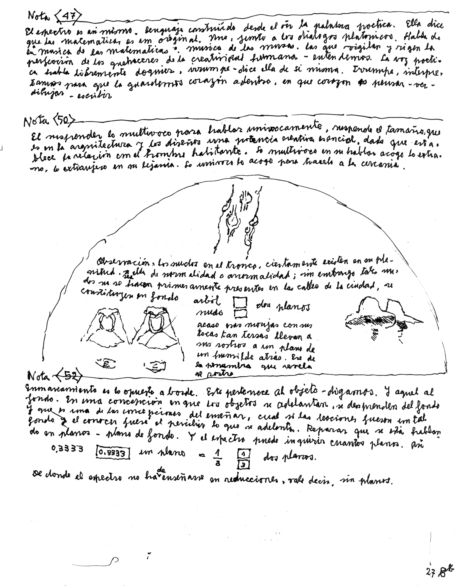
Nota <47>
El espectro es así mismo, lenguaje construido desde el oír la palabra poética. Ella dice
que las matemáticas es un original. Uno, junto a los diálogos platonicos. Habla de
la música de las matemáticas. música de las musas. Las que vigilan y rigen la
perfección de los quehaceres de la creatividad humana - entendemos. La voz poéti-
ca habla libremente dogmas, irrumpe -dice ella de si misma. Irrumpe, interpone.
Tenemos para que la guardemos corazón adentro, en que corazón es pensar - ver -
dibujar - escribir
Nota <50>
El suspender lo multívoco para hablar univocamente, suspende el tamaño, que
es en la arquitectura y los diseños una potencia creativa esencial, dado que esta-
blece la relación con el hombre habitante. Lo multívoco en su hablar acoge lo extra-
ño, lo extranjero en su lejanía. Lo unívoco lo acoge para traerlo a la cercanía.
Observación: los nudos en el tronco, ciertamente existen en su ple-
nitud, sea ella de normalidad o anormalidad; sin embargo tales nu-
dos si se hacen primeramente presentes en las calles de la ciudad, se
constituyen en fondo
arbol □ dos planos
nudo □
acaso esas monjas con sus
tocas tan tersas llevan a
sus rostros a un plano de
un sensible atrás. Ese de
la penumbra que revela
Nota <52> al rostro
Enmarcamiento es lo opuesto a borde. Este pertenece al objeto - digamos. Y aquel al
fondo. En una concepción en que los objetos se adelantan, se desprenden del fondo
y que es una de las concepciones del enseñar, cual si las lecciones fuesen un tal
fondo y el conocer fuese el percibir lo que se adelanta. Reparar que se está hablan-
do en planos - planos de fondo. Y el espectro puede inquirir cuantos planos. Así
0,3333 0,3333 en plano = 1/3 dos planos.
De donde el espectro no ha de enseñarse en reducciones, vale decir, sin planos.
27 8ª
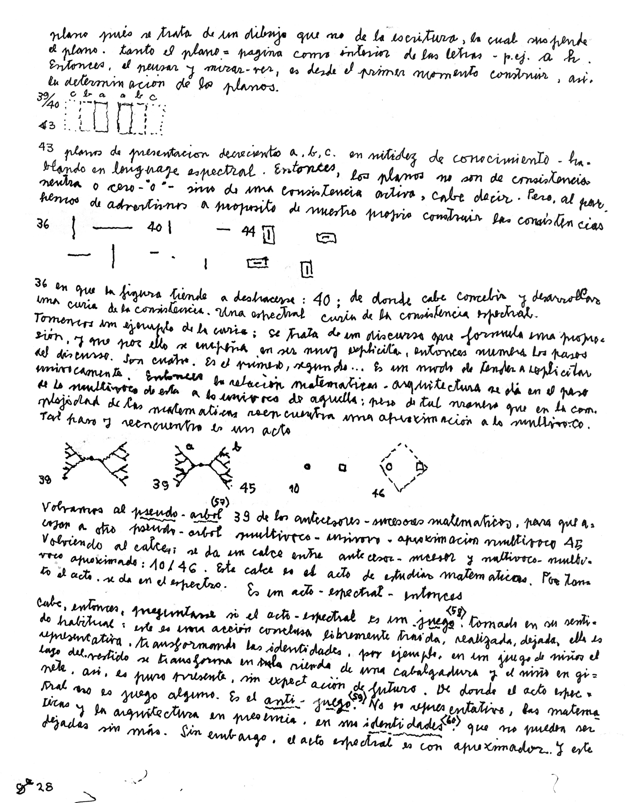
plano pues se trata de un dibujo que no de la escritura, la cual suspende el plano, tanto el plano = pagina como interior de las letras - p. ej: la h. Entonces, el pensar y mirar-ver, es desde el primer momento construir, así, la determinación de los planos. 39/40: c b a a b c 43 43 planos de presentación decreciente a,b,c. en nitidez de conocimiento - ha- blando en lenguaje espectral. Entonces, los planos no son de consistencia neutra o cero - “0” - sino de una consistencia activa, cabe decir. Pero, al pasar, hemos de advertirnos a propósito de nuestro propio construir las consistencias 36 40 44 36 en que la figura tiende a deshacerse: 40; de donde cabe concebir y desarrollar una curia de la consistencia. Una espectral curia de la consistencia espectral. Tomemos un ejemplo de la curia: se trata de un discurso que formula una propo- sición, y que por ello se continúa en ser muy explícita, entonces nombra los pasos del discurso. Son cuatro. Es el primero, segundo... Es un modo de tender a explicitar univocamente. Entonces la relación matemáticas, arquitectura se da en el paso de lo multívoco de esta a lo unívoco de aquella; pero de tal manera que en la com- plejidad de las matemáticas reencuentra una aproximación a lo multívoco. Tal paso y reencuentro es un acto 39 39 a b 45 10 ○ □ 46 Volvamos al pseudo-arbol(57) 39 de los antecesores - sucesores matemáticos, para que a- cojan a otro pseudo-arbol multívoco - unívoco. Aproximación multívoco 45 Volviendo al calce; se da un calce entre antecesor-sucesor y multívoco-multí- voco aproximado: 10/46. Este calce es el acto de estudios matemáticos. Por tan- to el acto, se da en el espectro. Es un acto - espectral - entonces Cabe, entonces, preguntarse si el acto-espectral es un juego(58), tomado en su senti- do habitual: este es una acción conclusa libremente tenida, realizada, dejada, ella es representativa, transformante las identidades. por ejemplo, en un juego de niños el lugar del partido se transforma en sala rienda de una cabalgadura y el niño en gi- nete, así, es puro presente, sin expectación de futuro. De donde el acto espec- tral no es juego alguno. Es el anti-juego(59). No es representativo, las matemá- ticas y la arquitectura persisten, en sus identidades(60) que no pueden ser dejadas sin más. Sin embargo, el acto espectral es con aproximador. Y este 9ª28
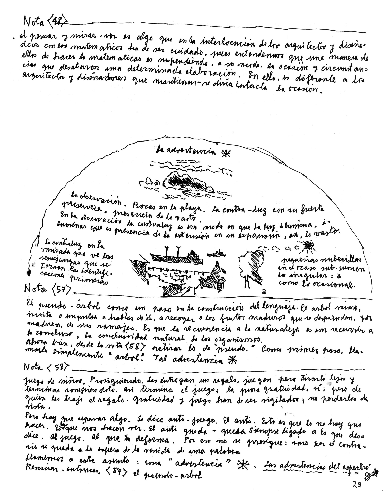
Nota <48>
El pensar y mirar - ver es algo que en la interlocución de los arquitectos y diseña-
dores con los matemáticos ha de ser cuidado, pues entendemos que una manera de
ellos de hacer la matemáticas es emprendiendo, a su modo, la ocasión y circunstan-
cias que desatinan una determinada elaboración. En ello, lo diferente a los
arquitectos y diseñadores que mantienen -se diría intacta la ocasión.
la advertencia *
La observación. Rocas en la playa. La contra-luz con su fuerte
presencia, presencia de lo vasto.
En la observación la contraluz es un modo en que la luz ilumina. I-
luminar que es presencia de la extensión en su expansión, así, lo vasto.
La contraluz es la
mirada que ve las
semejanzas que se pequeñas nubecillas
tornan las identifi- en el raso sub-sumen
caciones primeras lo irregular: a
como lo ocasional.
a
Nota <57>
El pseudo-arbol como un paso en la construcción del lenguaje. El arbol mismo,
invita o impele a hablar de él. a recoger a los frutos maduros que se desprenden, por
maduros, de sus ramajes. Es que la recurrencia a la naturaleza es un recurrir a
lo concluso, la conclusividad natural de los organismos.
Ahora bien, desde la nota <58> retirar lo de “pseudo”. Como primer paso, lla-
marle simplemente “arbol”. Tal advertencia *
Nota <58>
Juego de niños. Prosiguiendo. Les entregan un regalo, juegan para tirarlo lejos y
terminan rompiendolo. así termina el juego; la pura gratuidad, ni pero de
quien les trajo el regalo. Gratuidad y juego han de ser vigilados; no perderlos de
vista.
Pero hay que reparar algo. Se dice anti-juego. El anti. Esto es que lo no hay que
hacer. Eso que no hacer -lo. El anti queda - queda siempre ligado a lo que des-
dice. Al juego. Al que lo deforma. Por eso no se prosigue: sino por el contra-
rio se queda a la espera de la venida de una palabra
Llamemos a este asunto: una “advertencia” *. Las advertencias del espectro
Remiten, entonces, <57> el pseudo-arbol
29 9ª
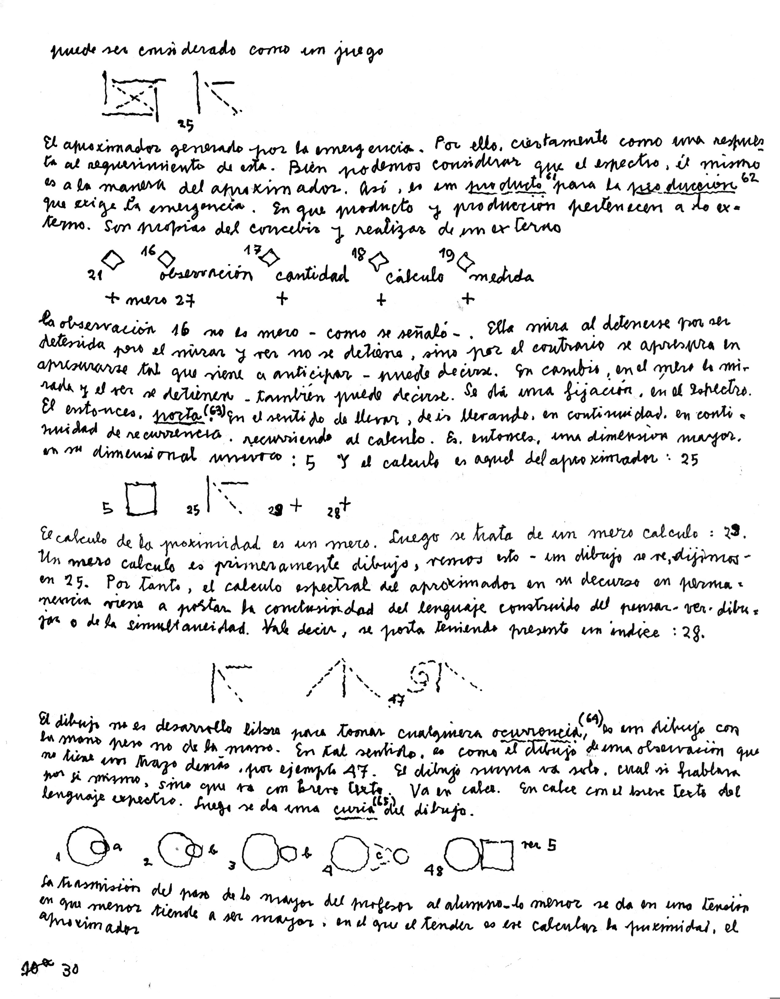
puede ser considerado como un juego
25
El aproximador generado por la emergencia. Por ello, ciertamente como una respues-
ta al requerimiento de esta. Bien podemos considerar que el espectro, él mismo
es a la manera del aproximador. Así, en un producto(61) para la producción(62)
que exige la emergencia. En que producto y producción pertenecen a lo ex-
terno. Son propias del concebir y realizar de un externo
21 ◇ 16 ◇ 17 ◇ 18 ◇ 19 ◇
observación cantidad calculo medida
+ mero 27 + + +
La observación 16 no es mero - como se señaló -. Ella mira al detenerse por ser
detenida por el mirar y sea no se detiene, sino por el contrario se apresura en
apresurarse tal que viene a anticipar - puede decirse. En cambio, en el mero la mi-
rada y el ver se detienen - también puede decirse. Se dá una fijación, en el habitar.
El entonces, porta(63) en el sentido de llevar, de ir llevando, en continuidad. En conti-
nuidad de ocurrencia, recurriendo al calculo. Es, entonces, una dimensión mayor,
en su dimensional unívoco: 5 Y el calculo es aquel del aproximador: 25
5 □ 25 29 + 28 +
El calculo de la proximidad es un mero. Luego se trata de un mero calculo: 28.
Un mero calculo es primeramente dibujo, vemos esto - un dibujo se ve, dijimos -
en 25. Por tanto, el calculo espectral de aproximador en su decurso en perma-
nencia viene a portar la conclusividad del lenguaje construido del pensar-ver, dibu-
jar o de la simultaneidad. Vale decir, se porta teniendo presente un índice: 28.
47
El dibujo no es desarrollado libre para tener cualquier ocurrencia(64), es un dibujo con
la mano pero no de la mano. En tal sentido, es como el dibujo de una observación que
no tiene un trazo dueño, por ejemplo 47. El dibujo primera va solo, cual si hablara
por si mismo, sino que va con breve texto. Va en calce. En calce con el breve texto del
lenguaje espectro. Luego se da una curia(65) del dibujo.
1 ◯ a 2 ◯○ b 3 ◯ ○ b 4 ◯ c ○ 48 ◯□ ver 5
La transmisión del paso de lo mayor del profesor al alumno -lo menor se da en una tensión
en que menor tiende a ser mayor, en el que el tenderlo es ese calcular la proximidad: el
aproximador
10ª30
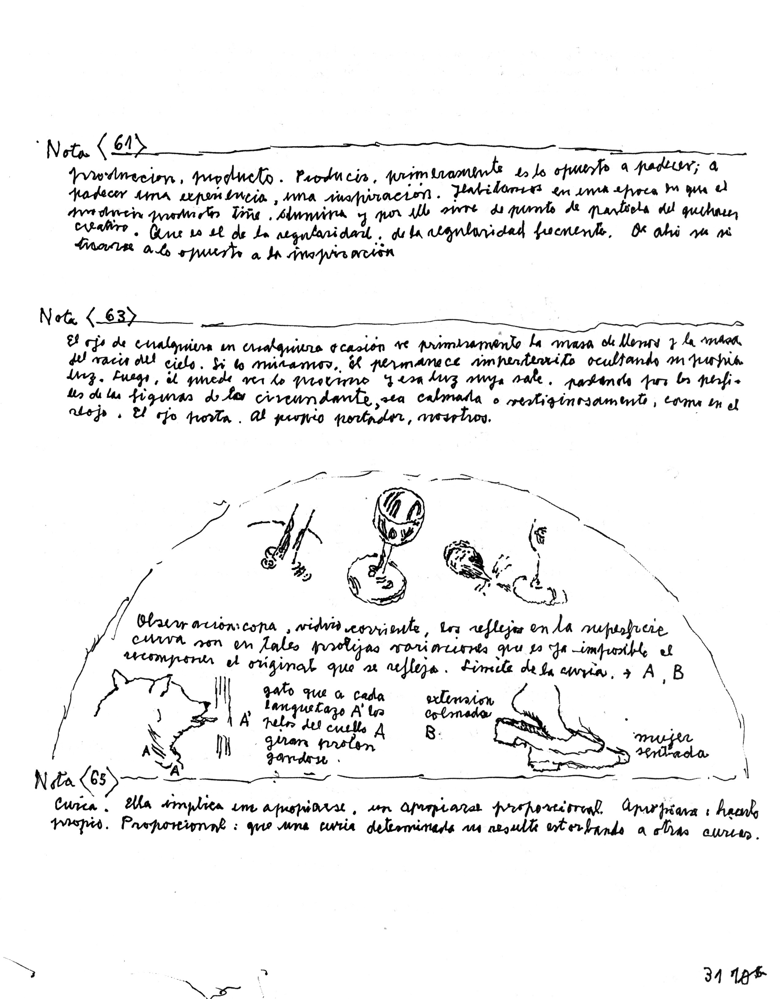
Nota <61>
Producción, producto. Producir, primeramente es lo opuesto a padecer; a
padecer una experiencia, una inspiración. Habitamos en una epoca en que el
producir promete vivir, denomina y por ello sirve de punto de partida del quehacer
creativo. Que es el de la regularidad, de la regularidad frecuente. De ahí que se
trasvase a lo opuesto a la inspiración
Nota <63>
El ojo de cualquiera en cualquiera ocasión ve primeramente la masa de llenos y la masa
del vacío del cielo. Si lo miramos. El permanece impertérrito ocultando su propia
luz. Luego, él puede ver lo próximo y esa luz suya sale, pasando por los perfi-
les de las figuras de lo circundante, sea calmada o vertiginosamente, como en el
reloj. El ojo porta. Al propio portador, nosotros.
Observación: copa, vidrio corriente, los reflejos en la superficie
curva son en tales prodigas variaciones que es ya imposible el
reconocer el original que se refleja. Límite de la curia. → A, B
gato que a cada extensión
lenguetazo A' va colmada
pelos del cuello A B
gira prontos mujer
guardarse. sentada
Nota <65>
Curia. Ella implica un apropiarse, un apropiarse proporcional. Apropiarse: hacerlo
propio. Proporcional: que una curia determinada no resulte estorbando a otras curias.
31 10ª
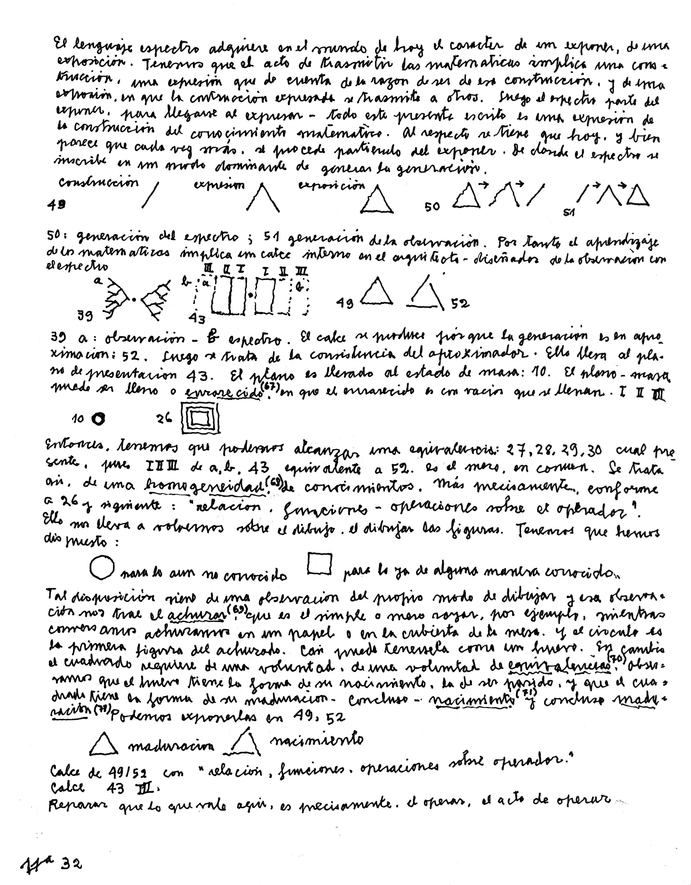
El lenguaje espectro adquiere en el mundo de hoy el caracter de un exponer, de una
exposición. Tenemos que el acto de trasmitir las matemáticas implica una cons-
trucción, una expresión que lo cuenta de la razón de ser de esa construcción. Y de una
exposición, en que la construcción expresada se trasmite a otros. Luego el espectro parte del
exponer, para llegarse al exponer - todo este presente escrito es una expresión de
la construcción del conocimiento matemático. Al respecto se tiene que hoy, y bien
parece que cada vez más, se procede partiendo del exponer. De donde el espectro se
inscribe en un modo dominante de generar la generación.
construcción expresión exposición
49 ╱ ∧ △ 50 △→∧→╱ 51 ╱→∧→△
50: generación del espectro; 51 generación de la observación. Por tanto el aprendizaje
de las matemáticas implica un calce interno en el arquitecto-diseñador de la observación con
el espectro
39 a b 43 III II I I II III 49 △ ∧52
39 a: observación - b espectro. El calce se produce porque la generación es en apro-
ximación: 52. Luego se trata de la consistencia del aproximador. Ello lleva al pla-
no de presentación 43. El plano es llevado al estado de masa: 10. El plano - masa
puede ser lleno o enrarecido(67), en que el enrarecido es con vacíos que se llenan. I II III
10 ● 26 ▣
Entonces, tenemos que podremos alcanzar una equivalencia: 27,28,29,30 cual pre-
sente. pues I II III de a,b, 43 equivale a 52. Es el mero, en comun. Se trata
así, de una homogeneidad(68) de conocimientos. Más precisamente, conforme
a 36 y siguiente: “relación, funciones - operaciones sobre el operador”.
Ello nos lleva a volvernos sobre el dibujo, el dibujar las figuras. Tenemos que hemos
dispuesto:
○ para lo aun no conocido □ para lo ya de alguna manera conocido
Tal disposición viene de una observación del propio modo de dibujar y esa observa-
ción nos trae el achurar(69), que es el simple o mero rayar, por ejemplo, mientras
conversamos, achuramos en un papel o en la cubierta de la mesa. Y el circulo es
la primera figura del achurado. Con puede tenerse como un pudor. En cambio
el cuadrado requiere de una voluntad, de una voluntad de equi-valencia(70), obser-
vemos que el huevo tiene la forma de su nacimiento, la de ser parido, y que el cua-
drado tiene la forma de su maduración - concluso - nacimiento(71) y concluso madu-
ración(71) podemos exponerlos en 49,52
△ maduración ∧ nacimiento
Calce de 49/52 con “relación, funciones, operaciones sobre operador.”
Calce 43 III.
Reparar que lo que vale aquí, es precisamente, el operar, el acto de operar
11ª32
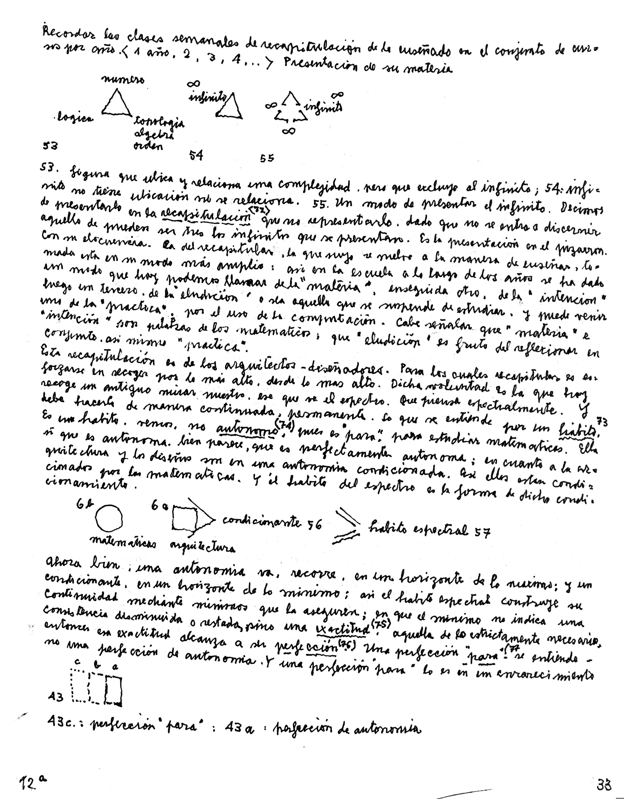
Recordar las clases semanales de recapitulación de lo enseñado en el conjunto de cur-
so por año. <1 año, 2, 3, 4...> Presentación de su materia
numero ∞ infinito ∞ infinito
logica topologia
algebra
orden
53 54 55
53. figura que ubica y relaciona una complejidad, pero que excluye al infinito; 54: infi-
nito no tiene ubicación ni se relaciona. 55. Un modo de presentar el infinito. Decimos
de presentarlo en la recapitulación(72) que no representarlo, dado que no se entra a discurrir
aquello de poder ser sino lo infinito que se presenta. Es la presentación en el pizarrón.
Con su elocuencia. La del recapitular, la que muy se vuelve a la manera de enseñar, to-
mada esta en un modo más amplio: así en la escuela a lo largo de los años se ha dado
un modo que hoy podemos llamar de la “materia”, enseguida otro, de la “intelección”,
luego un tercero, de la “elocución” o sea aquello que se emprende de estudiar, y puede venir
una de la “práctica” por el uso de la computación. Cabe señalar que “materia” e
“intelección” son palabras de los matemáticos; que “elocución” es fruto del reflexionar en
conjunto, así mismo “práctica”.
Esta recapitulación es de los arquitectos-diseñadores. Para los cuales recapitular es es-
forzarse en recoger por lo más alto, desde lo más alto. Dicha voluntad es la que hoy
recoge un antiguo mirar nuestro, ese que es el espectro. Que piensa espectralmente. Y
ello hace de manera continuada, permanente, lo que se entiende por un hábito(73).
Es un hábito, empero, no autonomo(74) pues es “para”, para estudiar matemáticas. Ella
si que es autonoma. Bien parece, que es perfectamente autonoma; en cuanto a la ar-
quitectura y los diseños son en una autonomía condicionada. Así ellos estan condi-
cionados por las matemáticas. Y el hábito del espectro es la forma de dicho condi-
cionamiento.
6b ◯ 6a □▷ condicionante 56 ≫ hábito espectral 57
matemáticas arquitectura
Ahora bien; una autonomía se recorre, en un horizonte de lo maximo; y un
condicionante, en un horizonte de lo mínimo; así el hábito espectral construye su
continuidad mediante mínimos que la aseguran; en que el mínimo no indica una
consistencia disminuida o restada, sino una exactitud(75) aquella de lo estrictamente necesario,
entonces esa exactitud alcanza a ser perfección(76). Una perfección “para”(77) se entiende -
no una perfección de autonomía. Y una perfección “para” lo es en un enrarecimiento
c b a
43
43c: perfección “para”; 43a: perfección de autonomía
12ª 33
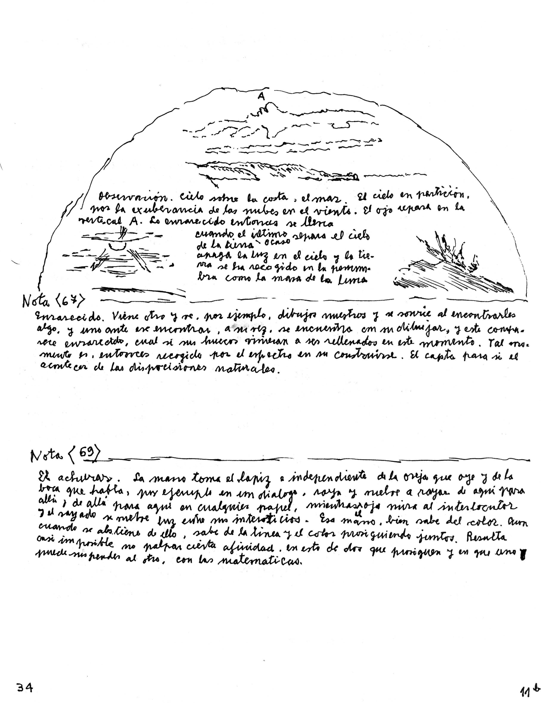
A
Observación. Cielo sobre la costa, el mar. El cielo en partición,
por la exuberancia de las nubes en el viento. El ojo repara en la
vertical A. Lo enrarecido entonces se llena
cuando el último apura el cielo
de la cima; ocaso
cargó la luz en el cielo y la tie-
rra se ha recogido en la penum-
bra como la masa de la luna
Nota <67>
Enrarecido. Viene otro y ve, por ejemplo, dibujos nuestros y se sonríe al encontrarles
algo. y uno ante ese encontrar, a su vez, se encuentra con su dibujar, y este compa-
rece enrarecido, cual si sus huecos vinieran a ser rellenados en este momento. Tal mo-
mento es, entonces recogido por el espectro en su construirse. El capta para si el
acontecer de las disposiciones naturales.
Nota <69>
El achurar. La mano toma el lápiz e independiente de la oreja que oye y de la
boca que habla, por ejemplo en un dialogo, raya y vuelve a rayar de aquí para
allí, de allí para aquí en cualquier papel, mientras ojo mira al interlocutor
y el rayado se vuelve luz entre sus intersticios. Esa mano, bien sabe del color. Aun
cuando se abstiene de ello, sabe de la línea y el color prosiguiendo juntos. Resulta
casi imposible no palpar cierta afinidad, en esto de dos que prosiguen y en que uno
puede suspender al otro, con las matemáticas.
34 11ª
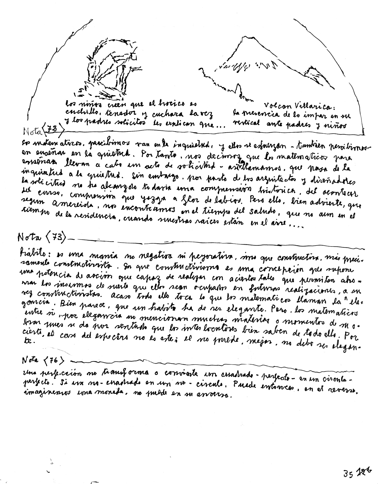
Los niños creen que el hocico es Volcan Villarica:
cuchillo, tenedor y cuchara la vez la presencia de lo impar en su
y los padres solícitos les explican que... vertical ante padres y niños
Nota <72>
Los matemáticos, percibimos van en la inquietud, y ello se esfuerzan -también percibimos-
en enseñar en la quietud. Por tanto, nos decimos que los matemáticos para
enseñar llevan a cabo un acto de solicitud - así llamamos, que pasa de la
inquietud a la quietud. Sin embargo, por parte de los arquitectos y diseñadores
la solicitud no ha alcanzado todavía una comprensión histórica, del acontecer
del Curso, comprensión que yazga a flor de labios. Pero ello, bien advierte, que
segun Amereida nos encontramos en el tiempo del saludo, que no aun en el
tiempo de la residencia, cuando nuestras raices están en el aire....
Nota <73>
hábito: es una manera no negativa ni peyorativa, sino que constructiva, más preci-
samente constructividad. En que constructivismo es una concepción que supone
una potencia de acción que capaz de realizar con acierto tales que permitan aho-
rrar los mismos de suerte que ellos sean ocupados en futuras realizaciones, a su
vez constructivistas. Acaso todo ello toca lo que los matemáticos llaman la “ele-
gancia”. Bien parece, que un hábito ha de ser elegante. Pero, los matemáticos
entre si, por elegancia no mencionan nuevas materias o encuentros de su o-
brar, pues se da por sentado que los interlocutores bien saben de todo ello. Por
cierto, el caso del espectro no es este; el no puede, mejor, no debe ser elegan-
te.
Nota <76>
Una perfección no transforma o convierte un cuadrado -perfecto- en un circulo-
perfecto. Si un no-cuadrado en un no-circulo. Puede entonces, en el reverso,
imaginemos una moneda, no puede en su anverso.
35 12ª
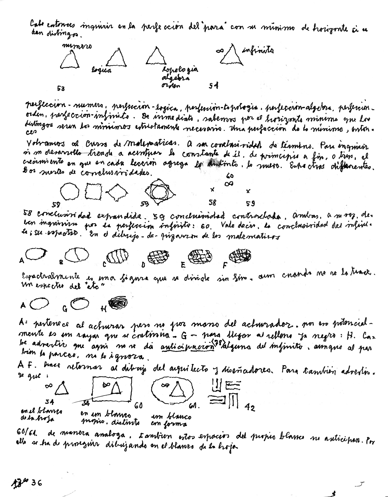
Cabe entonces inquirir en la perfección del “para” con su mínimo de horizonte en e-
se distingo.
numero ∞ infinito
logica topologia
algebra
orden
53 54
perfección-numero, perfección-logica, perfección-topologia, perfección-algebra, perfección-
orden, perfección-infinito. De inmediato, sabemos por el horizonte mínimo que los
distingos seran los mínimos estrictamente necesario. Una perfección de lo mínimo, enton-
ces
Volvamos al Curso de Matemáticas. A su conclusividad de término. Para inquirir
si su desarrollo tiende a acentuar lo constante de él, de principio a fin, o bien, el
crecimiento en que en cada lección agrega lo distinto, lo nuevo. Espectros diferentes.
Dos suertes de conclusividades.
59 ○ □ ◇ 59 ▣ 58 × 60 ∞ × 59
58 conclusividad expandida. 59 conclusividad contractada. Ambas, a su vez, de-
ben inquirir por la perfección infinito: 60. Vale decir, la conclusividad del infini-
to; su espectro. En el dibujo-de-pizarrón de los matemáticos
A ○ B ◯ C ◯ D ◯ E ◯ F ●
Espectralmente es una figura que se divide sin giro, aun cuando no se lo trace.
Un espectro del “etc”
A ○ G ◉ H ●
A: pertenece al achurar, pero no por mano del achurador. por eso potencial-
mente es un rayar que se continúa. G - para llegar al relleno ya negro: H. Ca-
be advertir que aquí no se da anticipación(78) alguna del infinito, aunque al par
bien parece, no lo ignora.
A F. hace retornar al dibujo del arquitecto y diseñadores. Para también advertir-
se que:
∞ △ 54 ∞ △ 54 ∞ △ 60 61 42
en el blanco en un blanco un blanco
de la hoja propio, distinto con forma
60/61 de manera analoga. También estos espacios del propio blanco, no anticipan. Por
ello se ha de proseguir dibujando en el blanco de la hoja
13ª36
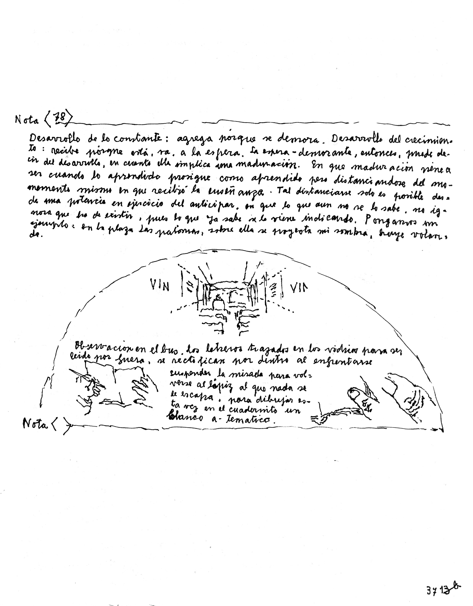
Nota <78>
Desarrollo de lo constante: agrega porque se demora. Desarrollo del crecimien-
to: recibe porque está, va, a la espera. La espera -demorante, entonces, puede de-
cir del desarrollo, en cuanto ella implica una maduración. En que maduración viene a
ser cuando lo aprendido prosigue como aprendido pero distanciandose del mo-
mento mismo en que recibió la enseñanza. Tal distanciarse solo es posible des-
de una potencia en ejercicio del anticipar, en que lo que aun no se lo sabe, no ig-
nora que ha de existir, pues lo que ya sabe se lo viene indicando. Pongamos un
ejemplo: en la plaza las palomas, sobre ella se proyecta mi sombra, huye volan-
do.
VIN VIN
Observación en el bus. Los letreros trazados en los vidrios para ser
leidos por fuera, se rectifican por dentro al enfrentarse
suspender la mirada para vol-
verse al lápiz al que nada se
le escapa, para dibujar es-
ta vez en el cuadernito un
blanco a-temático.
Nota < >
37 13ª
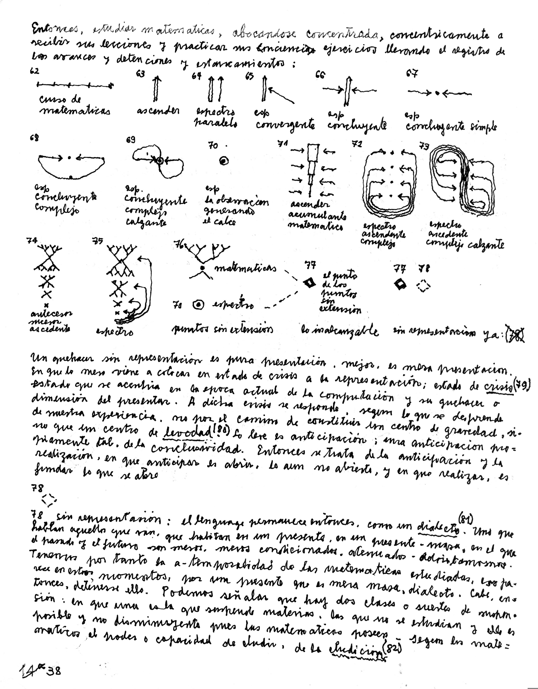
Entonces, estudiar matemáticas, abocandose concentrada, concentrisicamente a
recibir sus lecciones y practicar sus ejercicios llevando el registro de
los avances y detenciones y estancamientos:
62 63 64 65 66 67
—→ ⇈ ⇈⇈ ⇈↖ →⇈← →•←
curso de ascender espectro esp esp esp
matemáticas paralelo convergente concluyente concluyente simple
68 69 70 71 72 73
esp esp esp ascender
Concluyente concluyente la observación acumulante
complejo complejo generando matemáticas
calzante el calce
espectro espectro
74 75 76 ascendente ascendente
complejo complejo calzante
matemáticas 77 77 78
el punto
de los
momentos
76 espectro sin
antecesor extensión
sucesor
ascendente espectro puntos sin extensión lo inalcanzable sin enmarcación ya:
Un quehacer sin representación es pura presentación, mejor, es mera presentación,
en que lo mero viene a actuar en estado de crisis a la representación; estado de crisis(79)
estado que se acentúa en la epoca actual de la computación y su quehacer o
dimensión del presentar. A dicha crisis se responde, segun lo que se desprende
de nuestra experiencia, no por el camino de constituir un centro de gravedad, si-
no que un centro de levedad(80) lo leve es anticipación; una anticipación pro-
piamente tal, de la conclusividad. Entonces se trata de la anticipación y la
realización, en que anticipar es abrir, lo aun no abierto, y en que realizar, es
fundar lo que se abre
78 ◇
78 sin representación: el lenguaje permanece entonces, como un dialecto(81). Uno que
habla aquello que son, que habitan en un presente, en un presente-masa, en el que
el pasado y el futuro son meros, meros condicionados alternados-obligadamente.
Tenemos por tanto la a-temporalidad de las matemáticas explicadas, las pa-
rece en estos momentos, por un presente que es pura masa, dialecto. Cabe, en-
tonces, detenerse ello. Podemos señalar que hay dos clases o suertes de suspen-
sión: en que una es la que suspende materias, las que no se estudian y ello es
posible y no disminuyente pues los matemáticos poseen, segun los mate-
máticos el poder o capacidad de elegir, de la elección(82)
14ª38
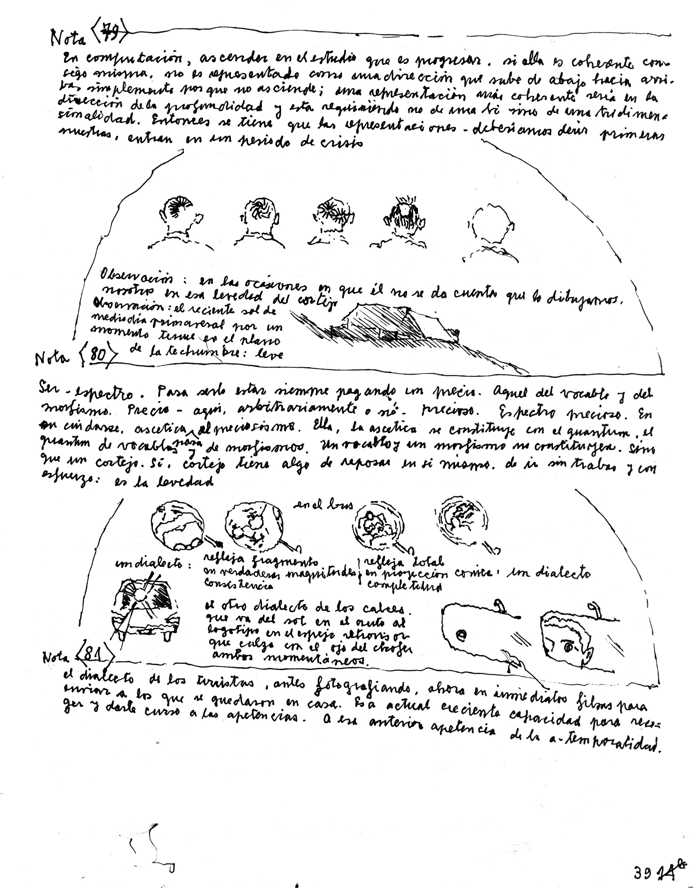
Nota <79>
En computación, ascender en el estudio que es progresar, si ello es coherente con-
sigo misma, no es representado como una dirección que sube de abajo hacia arri-
ba, simplemente, porque no asciende; una representación más coherente sería en la
dirección de la profundidad y esta requiriendo no de una bi sino de una tridimen-
sionalidad. Entonces se tiene que las representaciones -deberíamos decir primeras
nuestras, entran en un período de crisis
Observación: en las ocasiones en que él no se da cuenta que lo dibujamos,
rostros en esa levedad del estar
Observación: el reciente sol de
mediodía primaveral por un
momento tenue en el plano
de la techumbre: leve
Nota <80>
Ser - espectro. Para serlo estar siempre pagando un precio. Aquel del vocablo y del
morfismo. Precio - aquí, arbitrariamente o nó - preciso. Espectro preciso. En
su cuidarse, ascética, el preciosismo. Ella, la ascética se constituye en el quantum, el
quantum de vocablos, más de morfismos. Un vocablo y un morfismo no constituye. Sino
que un cortejo. Si, cortejo tiene algo de reposar en si mismo, de ir sin trabas y con
esfuerzo: es la levedad
en el bus
un dialecto: refleja fragmento refleja total
en verdaderas magnitudes en proporción comun. un dialecto
completitud
el otro dialecto de los calces.
que va del sol en el auto al
logotipo en el espejo retrovisor
que cuelga en el eje del coche
ambos momentáneos.
Nota <81>
el dialecto de los turistas, antes fotografiando, ahora en inmediato films para
enviar a los que se quedaron en casa. Esa actual creciente capacidad para reco-
ger y darle curso a las apetencias. A esa anterior apetencia de la a-temporalidad.
39 14ª
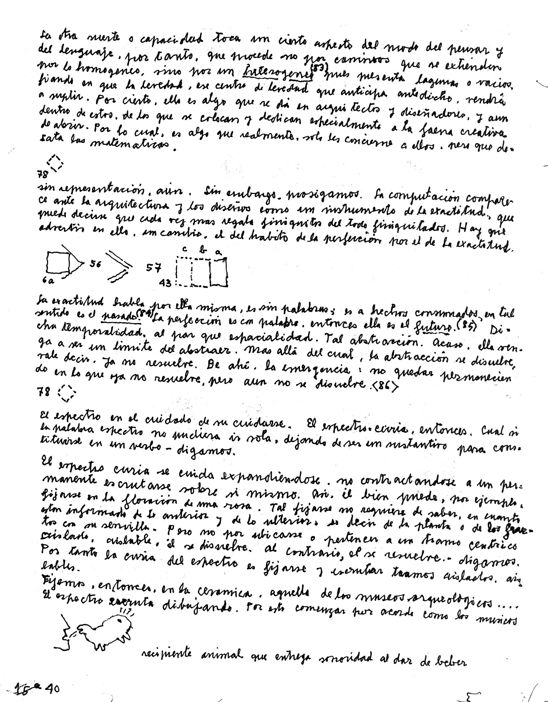
La otra suerte o capacidad toca un cierto aspecto del modo del pensar y
del lenguaje, por tanto, que procede no por caminos que se extienden
por lo homogéneo, sino por un heterogéneo(83) pues presenta lagunas o vacíos,
fiando en que la libertad, ese centro de levedad que anticipa antedicho, vendrá
a suplir. Por cierto, ello es algo que se dá en arquitectos y diseñadores, y aun
dentro de estos, de los que se colocan y dedican especialmente a la faena creativa
del obrar. Por lo cual, es algo que razonando, solo les concierne a ellos, pero que de-
sata las matemáticas.
78 ◇
sin representación, aún. Sin embargo prosigamos. La computación compare-
ce ante la arquitectura y los diseños como un instrumento de la exactitud, que
puede decirse que cada vez nos regala finiquitos de toda finiquitador. Hay que
advertir en ello, en cambio, el del habito de la perfección por el de la exactitud.
6a □▷56 ≫57 43 c b a
La exactitud habla por ella misma, es sin palabras; es a hechos consumados, en tal
sentido es el pasado(84). La perfección es en palabra, entonces ella es el futuro(85). Di-
cha temporalidad, al par que espacialidad. Tal abstracción. Acaso, ella ven-
ga a ser un límite del abstraer. Más allá del cual, la abstracción se disuelve,
vale decir, ya no resuelve. De ahí, la emergencia: no quedar permaneci en-
do en lo que ya no resuelve, pero aun no se disuelve. <86>
78 ◇
El espectro en el cuidado de su cuidarse. El espectro-curia, entonces. Cual si
la palabra espectro no pudiese ir sola, dejando de ser un sustantivo para cons-
tituirse en un verbo - digamos.
El espectro curia se cuida expandién-dose, no contractandose a un per-
manente escrutarse sobre si mismo. Así, él bien puede, por ejemplo,
fijarse en la floración de una rosa. Tal fijarse no requiere de saber, en cuanto
a tan informado de lo anterior y de lo ulterior, es decir de la planta o de los fru-
tos en semilla. Pero no por ubicarse o pertenecer a un tramo cerámico
ciclario, aislable, él se disuelve. Al contrario, él se resuelve.- digamos.
Por tanto la curia del espectro es fijarse y escrutar tramos aislados. Así
estos.
Fijemos, entonces, en la cerámica, aquella de los museos arqueologicos....
El espectro escruta dibujando. Por eso comenzar pues acorde como los músicos
recipiente animal que entrega sonoridad al dar de beber
15ª40
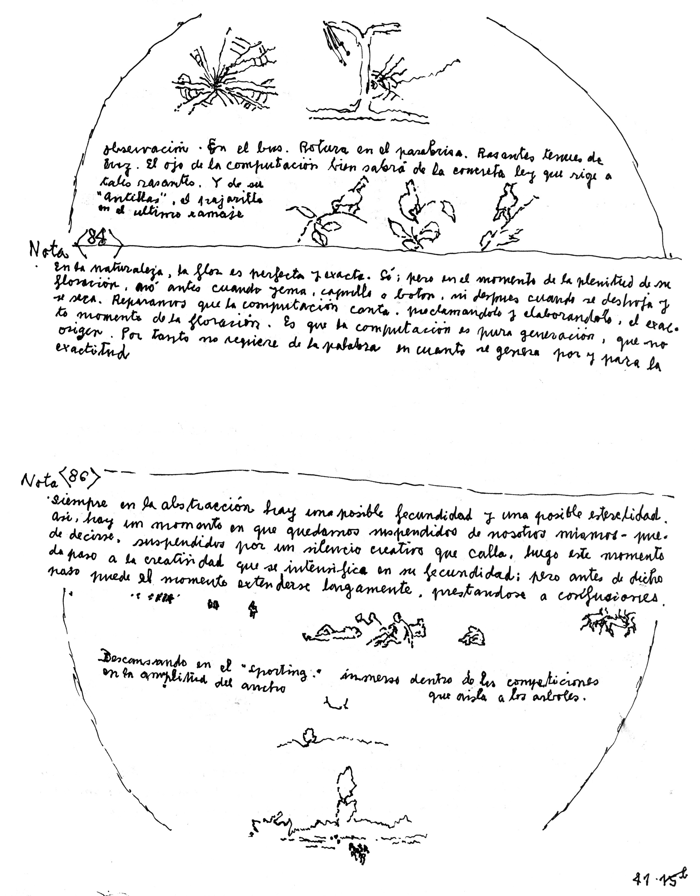
Observación. En el bus. Rotura en el parabrisas. Rasante tenue de
luz. El ojo de la computación bien sabrá de la correcta ley que rige a
tales rasantes. Y de su
“antillas”, el pajarillo
en el último ramaje
Nota <84>
En la naturaleza, la flor es perfecta y exacta. Si; pero en el momento de la plenitud de su
floración, nó antes cuando yema, capullo o boton, ni despues cuando se deshoja y
se seca. Reparamos que la computación corta, proclamandolo y elaborandolo, el exac-
to momento de la floración. Es que la computación es pura generación, que no
origen. Por tanto no requiere de la palabra en cuanto se genera por y para la
exactitud
Nota <86>
Siempre en la abstracción hay una posible fecundidad y una posible esterilidad.
Así, hay un momento en que quedamos suspendidos de nosotros mismos - pue-
de decirse, suspendidos por un silencio creativo que calla, luego este momento
da paso a la creatividad que se intensifica en su fecundidad; pero antes de dicho
paso puede el momento extenderse largamente, prestandose a confusiones.
Descansando en el “sporting:” inmersos dentro de las competiciones
en la amplitud del centro que aisla a los arboles.
41 15ª
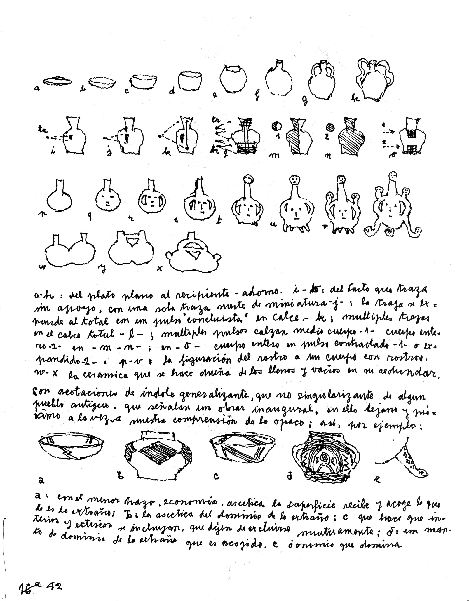
a b c d e f g h tr i j k tr l 1 m 2 n 1 2 o p q r s t u v w y x a-h: del plato plano al recipiente-adorno. i-k: del tacto que traza sin apoyo, con una sola traza suerte de miniatura -j-; la traza se ex- pande al total con un pulso “conclusista” en calce.- k; multiples trazas en el calce total -l-; multiples pulsos calzan medio cuerpo -1- cuerpo ente- ro -2- en -m-n-; en -o- cuerpo entero en pulso contractado -1- o ex- pandido -2-. p-v: la figuración del rostro a un cuerpo con rostros. w-x la ceramica que se hace dueña de los llenos y vacíos en su redondear. Son acotaciones de índole generalizante, que no singularizante, de algun pueblo antiguo, que señalan un obrar inaugural, en ello lejano y pro- ximo a la vez a nuestra comprensión de lo opaco; así, por ejemplo: a b c d e a: con el menor trazo, económico, acentúa la superficie realce y acoge lo que le es lo extraño; b: la ascética del dominio de lo extraño; c que hace que in- terior y exterior se incluyan, que dejen de excluirse mutuamente; d: un man- to de dominio de lo extraño que es acogido, e dominio que domina 16ª42
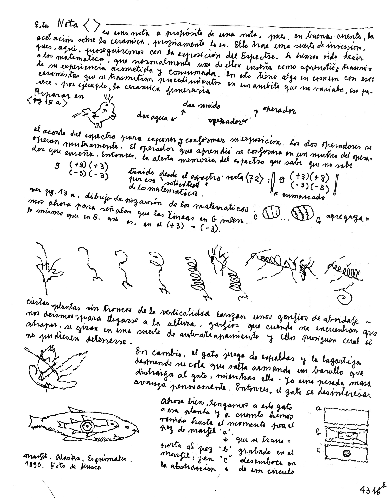
Esta Nota < >
es una nota a propósito de una nota, pues, en buena cuenta, la
acotación sobre la ceramica, propiamente lo es. Ello trae una suerte de inversión,
pues, aquí, proseguimos con la exposición del Espectro. Le hemos oído decir
a los matemáticos que normalmente uno de ellos enseña como aprendió; trasmi-
te su experiencia acometida y consumada. En esto tiene algo en comun con esos
ceramistas que se trasmitían procedimientos en un ámbito que nos vaciado, en pa-
-rece - por ejemplo, la ceramica funeraria
Reparar en <pag 15 a>
dar sonido operador
dar agua operador
el acorde del espectro para exponer y conformar su exposición. Los dos operadores se
operan mutuamente. El operador que aprendió se conforma en un neutro del opera-
dor que enseña. Entonces, la alerta memoria del espectro que sabe que no sabe
g (+3)(+3)
(-3)(-3) traído desde el espectro: nota <72>:
por esa “solicitud” g (+3)(+3)
de los matemáticos (-3)(-3)
“enmarcado”
ver pg.13 a. dibujo-de-pizarrón de los matemáticos.
mos ahora para señalar que las líneas en C valen C ... G agrega=
lo mismo que en G. asi es, en el (+3) - (-3).
Ciertas plantas sin tronco de la verticalidad lanzan unos garfios de abordaje -
nos decimos - para llegarse a la altura, garfios que cuando no encuentran que
atrapar, se fijan en una suerte de auto-atrapamiento y ellos prosiguen cual si
no supiesen detenerse.
En cambio, el gato juega de espaldas y la lagartija
desprende su cola que salta armando un barullo que
distraiga al gato, mientras ella -ya una pesada masa
avanza penosamente. Entonces, el gato se desinteresa.
Ahora bien, tengamos a este gato
a esa planta y a cuanto hemos
venido hasta el momento por el a
pez de marfil “a”.
↓ que se trans-
porta al pez “b” grabado en el b
marfil; y en “c” desemboca en
Marfil. Alaska. Esquimal. la abstracción ↓ de un circulo
1890. Foto de Museo c
43 16ª
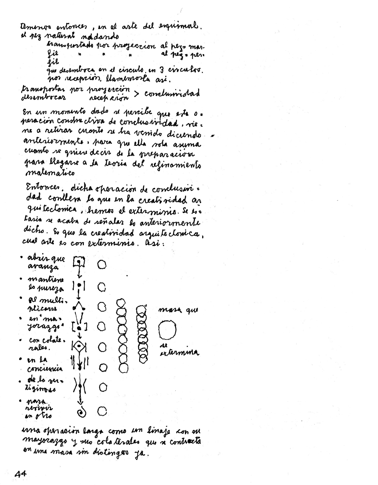
Tenemos entonces, en el arte del esquimal.
el pez natural nadando
transportado por proyección al pez-mar-
fil ” ” ” al pez-per-
fil
que desemboca en el circulo, en 3 circulos.
por recepción, llamemosla así.
transportar por proyección
desembocar recepción > conclusividad
En un momento dado se percibe que esta o-
peración constructiva de conclusividad, vie-
ne a retirar cuanto se ha venido diciendo
anteriormente, para que ella sola asuma
cuanto se quiere decir de la preparación
para llegarse a la teoría del refinamiento
matemático
Entonces, dicha operación de conclusivi-
dad conlleva lo que en la creatividad ar-
quitectónica, hemos el exterminio. Se es-
taría se acaba de señalar lo anteriormente
dicho. Es que la creatividad arquitectónica,
cual tal es con exterminio. Así:
• abrir que □ ○
avanza ↓
• mantiene │•│ ○
lo pureza ↓
• al multi- ∧ ○
plicarse ○ masa que
• en “ma- ⋎ ○
yorazgo” [•] ○ ○
• con colate- ↓ ○
rales. ◇ ○
• en la ↓ ○ se
conciencia ⇊ ○ extermina
• de la apa- ↓ ○
rición )•( ○
• para ↓ ○
revivir ◉ ○
en otro
una operación larga como un linaje con su
mayorazgo y sus colaterales que se contrasta
en una masa sin distingos ya.
44
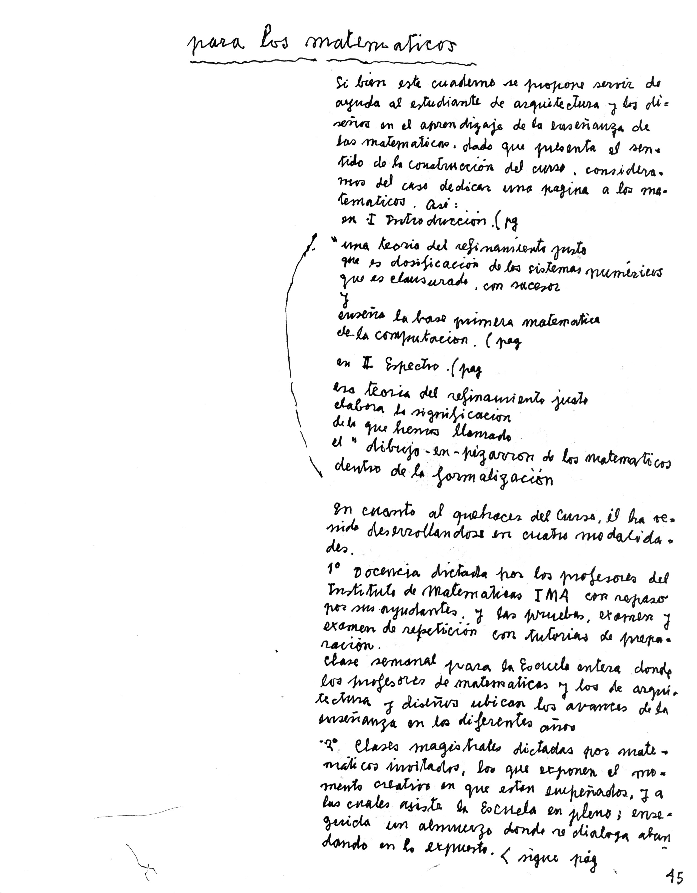
para los matemáticos
Si bien este cuaderno se propone servir de
ayuda al estudiante de arquitectura y los di-
seños en el aprendizaje de la enseñanza de
las matemáticas, dado que presenta el sen-
tido de la construcción del curso, considera-
mos del caso dedicar una pagina a los ma-
temáticos. Así:
en I Introducción. (pg
“una teoría del refinamiento justo
que es dosificación de los sistemas numéricos
que es clausurado, con sucesor
y
enseña la base primera matemática
de la computación. (pag
en II Espectro. (pag
esa teoría del refinamiento justo
elabora la significación
de lo que hemos llamado
el “dibujo-en-pizarrón de los matemáticos
dentro de la formalización
En cuanto al quehacer del Curso, él ha ve-
nido desarrollandose en cuatro modalida-
des.
1º Docencia dictada por los profesores del
Instituto de Matemáticas IMA con repaso
por sus ayudantes, y las pruebas, examenes y
examen de repetición con tutorias de prepa-
ración.
Clase semanal para la Escuela entera donde
los profesores de matemáticas y los de arqui-
tectura y diseños ubican los avances de la
enseñanza en los diferentes años
2º Clases magistrales dictadas por mate-
máticos invitados, los que exponen el mo-
mento creativo en que estan empeñados, y a
las cuales asiste la Escuela en pleno; ense-
guida un almuerzo donde se dialoga abun-
dando en lo expuesto. < sigue pág.
45
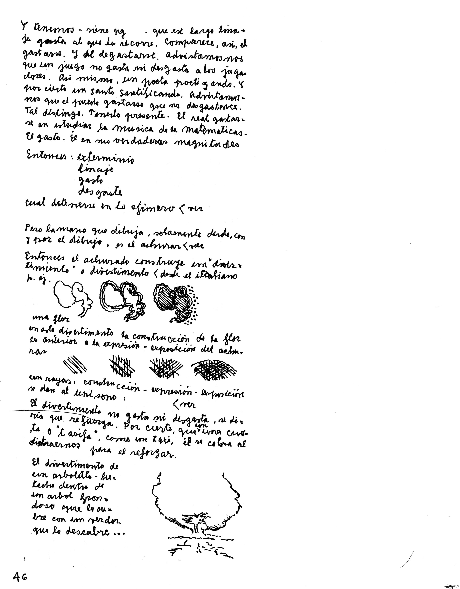
Y tenemos -viene pg . que ese largo lina-
je gasta el que lo recorre. Comparece, así, el
gastarse. Y el desgastarse. Advirtamonos
que un juego no gasta ni desgasta a los juga-
dores. Así mismo, un poeta poetizando. Y
por cierto un santo santificando. Advirtamo-
nos que el puede gastarse que no desgastarse.
Tal distingo. Tenerlo presente. El real gastar-
se en estudiar la Música de las Matemáticas.
El gasto. El en sus verdaderas magnitudes
Entonces: exterminio
linaje
gasto
desgaste
Cual detenerse en lo efímero <ver
Pero la mano que dibuja, solamente desde, con
y por el dibujo, es el achurar <ver
Entonces el achurado construye un “diver-
timiento” o divertimento <desde el italiano
p. ej.
una flor
en este divertimento la construcción de la flor
es anterior a la expresión - exposición del achu-
rar
con rayas, construcción - expresión - exposición
se dan al unisono: <ver
El divertimento no gasta ni desgasta, se di-
ría que refuerza. Por cierto, que un trae cuo-
ta o “tarifa” como un taxi, él se cobra al
distraernos para el reforzar.
El divertimento de
un arbolito - he-
lecho dentro de
un arbol fron-
doso que lo cu-
bre con un verdor
que lo descubre...
46
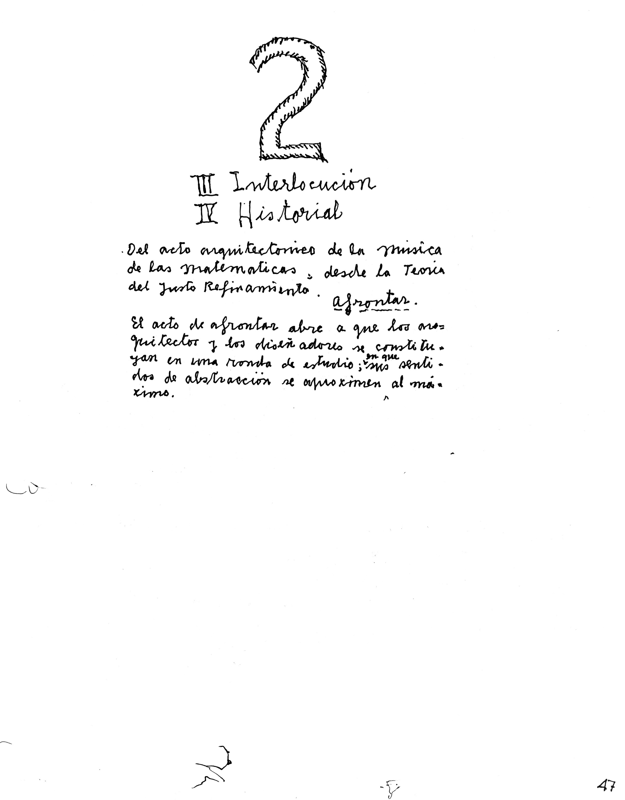
2
III Interlocución
IV Historial
Del acto arquitectónico de la Música
de las Matemáticas, desde la Teoría
del Justo Refinamiento.
Afrontar.
El acto de afrontar abre a que los ar-
quitectos y los diseñadores se constitu-
yan en una ronda de estudio; en que sus senti-
dos de abstracción se aproximen al má-
ximo.
47
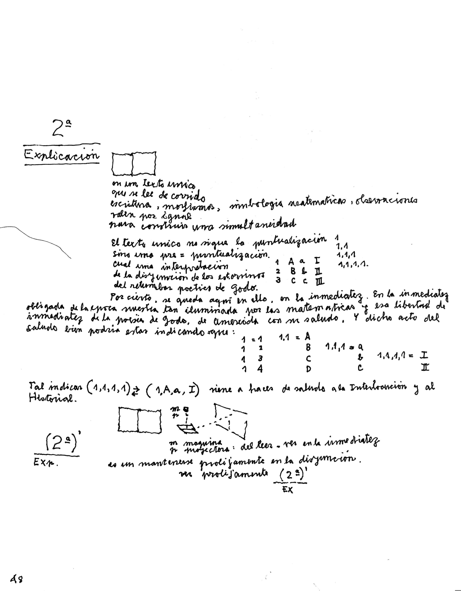
2ª
Explicación
en un texto unico,
que se lee de corrido
escritura, morfismos, simbología matemáticos, observaciones
valen por signos
para construir una simultaneidad
El texto unico no sigue la puntualización 1
sino una pre = puntualización. 1,1
cual una interpretación 1,1,1
de la disyunción de los estorninos 1 A a I 1,1,1,1.
del renombrar poético de Godo. 2 B b II
3 C c III
Por cierto, se queda aquí en ello, en la inmediatez. En la inmediatez
obligada de la pura muestra tan iluminada por las matemáticas y esa libertad de
inmediatez de la poesía de Godo, de Amereida con su saludo. Y dicho acto del
saludo bien podría estar indicando que:
1 = 1 1,1 = A
1 2 B 1,1,1 = a
1 3 C b 1,1,1,1 = I
1 4 D c II
Tal indicar (1,1,1,1) ⇄ (1,A,a,I) viene a hacer de saludo a la Interlocución y al
Historial.
m □
n
(2ª)¹
m maquina
n proyectora: del leer-ver en la inmediatez
Ex. es un mantenerse proféticamente en la disyunción.
su proféticamente (2ª)¹
Ex
48
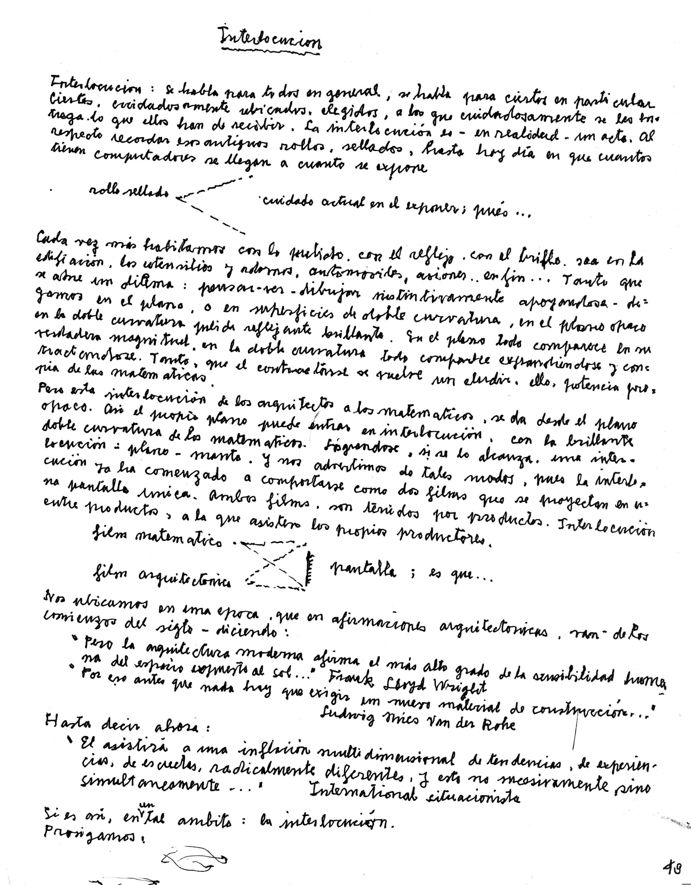
Interlocución
Interlocución: se habla para todos en general, se habla para cierto en particular
ciertos, cuidadosamente ubicados, elegidos, a los que cuidadosamente se les en-
trega lo que ellos han de recibir. La interlocución es - en realidad - un acto. Al
respecto recordar esos antiguos rollos, sellados, hasta hoy día en que cuantos
tienen computadores se llegan a cuanto se expone
rollo-sellado
cuidado actual en el exponer; pues...
Cada vez más habitamos con lo pulido, con el reflejo, con el brillo. Sea en la
edificación, los utensilios y adornos, automoviles, aviones, en fin... Tanto que
se abre un dilema: pensar-ver-dibujar instintivamente apoyandose - di-
gamos en el plano, o en superficies de doble curvatura, en el plano opaco
o en la doble curvatura pulida reflejante brillante. En el plano todo comparece en su
verdadera magnitud. en la doble curvatura todo comparece expandiendose y con-
tractandose. Tanto, que el conformarse se vuelve por eludir. Ello, potencia pro-
pia de las matemáticas.
Pero esta interlocución de los arquitectos a los matemáticos, se da desde el plano
opaco. Así el propio plano puede entrar en interlocución, con la brillante
doble curvatura de los matemáticos. Lograndose, si se lo alcanza, una interlo-
cución: plano - punto. Y nos advertimos de tales modos, pues la interlo-
cución ya ha comenzado a comportarse como dos films que se proyectan en u-
na pantalla única. Ambos films, son tenidos por productos. Interlocución
entre productos, a la que asistimos los propios productores.
film matemático
pantalla; es que...
film arquitectura
Nos ubicamos en una epoca que en afirmaciones arquitectónicas, son de los
comienzos del siglo - diciendo:
“Pero la arquitectura moderna afirma el más alto grado de la sensibilidad huma-
na del espíritu expuesto al sol...” Frank Lloyd Wright
“Pero, en arte que nada hay que exigir un nuevo material de construcción...”
Ludwig Mies van der Rohe
Hasta decir, ahora:
“El asistir a una inflación multidimensional de tendencias, de experien-
cias, de escuelas, radicalmente diferentes, y esto no sucesivamente sino
simultaneamente...” Internacional situacionista
Si es así, en un tal ámbito: la interlocución.
Prosigamos:
49
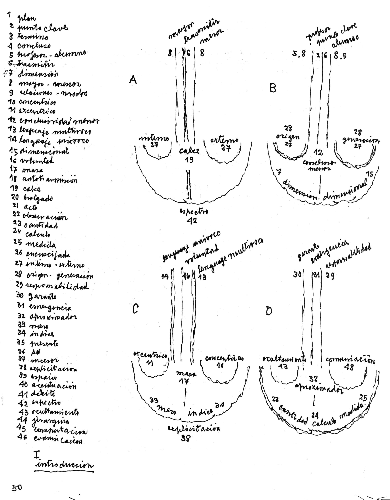
1 plan
2 punto clave
3 termino mayor trasmitir menor profesor
4 concluso punto clave
5 profesor-alumno 8 │6│ 8 alumno
6 trasmitir 5.8 │2│6│8.5
7 dimensión
8 mayor-menor
9 relaciones-modos A
10 concentrico B
11 excentrico
12 conclusividad menor
13 lenguaje multívoco
14 lenguaje unívoco
15 dimensional 28 28
16 voluntad interno externo origen generación
17 masa 27 27 27 27
18 autotrasmisión
19 calce calce 12
20 holgado 19 concluso
21 acto menor
22 observación
23 cantidad 7 dimensión-dimensional 15
24 calculo
25 medida espectro
26 encrucijada 42
27 interno-externo
28 origen-generación
29 responsabilidad
30 garante lenguaje unívoco garante
31 emergencia voluntad emergencia
32 aproximador lenguaje multívoco responsabilidad
33 mero
34 índice 14 │16│ 13 30 │31│ 29
35 presente
36 AN
37 sucesor
38 explicitación
39 espacio C D
40 acentuación
41 deleite
42 espectro
43 ocultamiento
44 jerarquía excentrico concentrico ocultamiento comunicación
45 computación 11 10 43 48
46 comunicación
masa 32
17 aproximador
33 mero índice 34 23 25
cantidad calculo medida
explicitación 24
38
I.
introducción
50
47 Pensar
48 ver
49 dibujar
50 suspender 47 pensar
51 antecesor-sucesor 48 ver
52 enmarcamiento 49 dibujar 69
53 clausura achurar
54 límite curia │ exponer
55 planos
56 consistencia neutra 65 │ 66 dialecto pasado futuro
57 pseudo arbol 70 81 84 85
58 juego equivalencia
59 anti-juego * advertencia 60
60 identidad identidad
61 producto
62 producción
63 portar 76 75
64 ocurrencia perfección exactitud anti-
65 curia juego producto
66 exponer producción
67 enrarecido
68 homogeneidad
69 achurar E F
70 equivalencia
71 nacimiento-maduración
72 recapitular
73 habito
74 autonomía
75 exactitud 50
76 perfección suspender 77
77 para.
78 anticipar para.
79 crisis
80 levedad
81 dialecto 78 habito 78
82 elección anticipar
83 heterogeneo 71 nacimiento-maduración
84 pasado autonomía enrarecido
85 futuro 72
86 resolver-disolverse recapitular 74 67
80
levedad
51 82
antecesor elección 54 55
sucesor límite planos
G
H
83
II heterogeneo (53)
espectro clausura
51
Sobre la marcha reparamos que los morfismos provienen de dos direcciones:
A La figura B la figuración
la lista, en el orden de sucesión el laberinto: en el orden de simultaneo
la consistencia del dato la consistencia del sentido
dato con sentido = sentido con dato
escribir
dibujando dibujando
escribir
el morfismo es un proyecto
como tal su propia consistencia se aproxima a si
mismo. No es por tanto, una obra. Es un
instrumento <ver Nota 40 pg 6b>
Los ocho morfismos, cuatro de I introducción y II espectro se encuentran
en el siguiente estado: primero, que comparezca el morfismo necesariamente cual
modo de conclusividad de una interlocución: que comparezca en calidad de mire
de su propio modo y por eso se traza una disposición meramente indicatoria, por
tanto se hace necesario un segundo paso para A B C D E F G H, que
mantenga o modifique, así, no ser estos ocho; así, podran agregar, supri-
mir, intercambiar las palabras
La primera experiencia de los morfismos fué que ellos no admiten desarrollo. Son
así, leves y breves, y cuando no dan cuenta elocuente se los ha de cambiar por otros,
Lo leve y breve es propiedad de lo inmediato - entonces. Una segunda experiencia pue-
de, o aún, debe practicarse en la rapidez de la computación, en la cual el morfis-
mo cobre movimiento, por ejemplo un ciclo de arte, vale decir, en conclusión dada
Esa experiencia con la computación, no puede dejar en último termino de tratar,
la percepción del cuadrado en su posición gravitacional - de la gravedad - y su posición
arabesco - llevada por un fuerte viento - ambos como puntos, como cruce de direc-
ciones ortogonales y verticales. Y el arabesco cobra una extensión mayor, el cuadra-
do, así, anticipa <nota 78> su extensión mayor.
52
Pero oigamos y veamos ahora a los propios matemáticos; vale decir, que
calculamos que el espectro es capaz ya de enfrentar tal faena. Comencemos por
su lenguaje de simbolos, los que permiten leerlos deletreandolos, como los ni-
ños aprendiendo. Emprendamos tal momento. Y el espectro lo emprende
desde y con la anticipación que, como se señaló en <78> - es en la levedad del
abrir. Lo cual lleva a que reparemos en que dicho anticipar se dá en un
cierto sentido de relación, tal cierto lo hemos experimentado de largo tiem-
po en cuanto a la poesía, y que hemos llamado “melancolía”.
abatido
Melancolía: es el contacto con una realidad a la cual nunca penetraremos
en su interioridad creativa. Si, a lo que podemos comprender como su exte-
rioridad creativa. Tal comprensión, hoy - cabe repararlo - habita en un clima
bien propicio, aun más, recibe de continuos ofrecimientos de la técnica, en cuan-
to el saber hacer; saber realizar, construir. Nos encontramos en una rela-
ción que en su primer paso, esta - la técnica - es tomada en su sentido más
general provee de una más precisamente que inteligencia, es diligencia: a-
si, los morfismos, por ejemplo, estos recién dibujados.
78 ◇
Coloquemos por el momento el morfismo de lo no representable, cual maximo
de cuidado de la melancolía, para oír y ver a los matemáticos nuevamente:
“expresión: el simbolo
extensión: el objeto simbolizado
intensión: lo que evoca en el interlocutor
Ellos nos advierten que las matemáticas, suspenden la intensión.
Y que ellos estudian para que:
“el objeto sea más preciso y amplio.
Ahora bien, el espectro melancolico no puede sino partir de la expresión y de la
intensión. Por tanto, el ha de partir de dicha manera para comenzar a de-
letrear como niños el lenguaje de los simbolos:
53
Simbología Número Sistemas numéricos 1 .. neutro 2 ℕ naturales .. a/b, ȧ, a ≡ b (mod m) 3 π, e .. pi ℤ enteros 0 .. aniquilador ∞ infinito ℚ racionales ℵ₀, ℵ₁ aleph sub cero aleph sub uno ℝ reales c continuo ℂ complejos ℍ cuaterniones Lógica y lenguaje Abreviaturas Conjuntos ¬ negación, no ∵ pero ° complemento ∨ disyunción, o ∴ luego ∪ unión ∧ conjunción, y Ⅲ tal que ∩ intersección ⇒ implicación →← contradicción ⊂ inclusión ⇔ equivalencia ∈ pertenece ⊻ exclusión ∉ no pertenece ∀ para todo = igualdad (∃) existe ≠ diferencia ( ),[ ] parentesis △ diferencia simétrica • Potencia → función ≺ finura ≼ más fino que menos fino que ≡, ≈ equivalencia tan fino como ∘ composición { } parentesis ∅ vacío 54
Topología Orden Estructura Algebraica lim límite = igualdad +, Σ, ∫ suma, sumatoria, integral < menor - resta ≤ menor o igual •, × producto > mayor :, ÷ división ≥ mayor o igual ! factorial ≶ mayor o menor ( )ⁿ potencia ⁿ√ raíz log logaritmo d/dx derivada numeros-sistema numéricos 53/54 logica topologia conjuntos orden abreviaturas estructura algebraica. Operaciones Volviendo a lo dicho sobre el deletrear la simbología, se tiene que el espectro me- lancolico desde la expresión e intensión, es detenido por la finura: Retrocedamos a la nota <39>, a la teoría del refinamiento, a las relaciones entre relaciones. a = b (mod 8) a = b (mod 4) ⇔ De donde, retrocediendo al plan de estudios, nota <1> y a la nota <82> de la elec- ción, nos decimos que: simbolo del espectro. No se estudiará, se suspenderá toda materia de extensión todo objeto matemá- tico que no pueda vislumbrar lo que sea su finura. Tal afirmación desde el oficio de la arquitectura y los diseños. Ver nota <16> 55
La antedicha afirmación, al ser, darse, en el arte de la arquitectura, que co-
mo todo arte va de celebración en celebración, ha de celebrarse ahora, a
su manera, y la manera oye el retumbar de la palabra poética, que el flo-
recer - para designar esos largos empeños por elaborar la abstracción;
asi, el florecer lleva a la observación del costo y sin empeño - ello parece-
de una rosa.
a b c d e f g
a: la masa pequeña - miniatura del boton aun cerrado de color verde vegetal,
opaco, es la forma en su potencia. b: el botón abriendose, emergen las
orillas del color, rojo, las orillas son filetes que anticipan la brillante-
c: la flor abierta en su pleno color luz brillo perfume, sabor para la abeja,
en la tersura que geometriza. d: pronto la rosa seca, retorno a la masa
al rotar los filetes anti-filetes color tierra. e: un botón prematuramente
seco. f los filetes geometrizantes de la tersura se otorgan en crispaciones que se
entrejen a la más precaria de las estabilidades: g <Ver nota 84>
Viniendo a la finura, y a las figuras en el pizarrón de los matemáticos -
pág 13 a
○ ◉ ◯ ◯
todos iguales en 1: todos distintos en 2. lo distinto = la finura.
Entonces, entrando en interlocución en interlocución directa con los matemáticos
ellos señalan, como fruto de su experiencia en el estudio que se dan tres suertes de
clases de ellos; así:
“los obreros, más precisamente el obrero minero que busca una veta;
“los artesanos, que elaboran con gran rigor la perfección de la for-
ma
“los artistas, que son los que alcanzan una visión global;
en que,
“los obreros permanecen en su busqueda; en cambio los artesanos
quisieran llegar a ser artistas.
Felix Klein es un artista. El ha venido iluminando al Curso desde el momento
en que la palabra poética lo llamó “la Música de las Matemáticas.
56
Prosiguiendo, alcanzamos un cierto contacto espiritual con un técnico en ma-
teriales de edificación arquitectónica, de la estructura resistente: el hormigon ar-
mado en que él ha estudiado los sistemas de enfierradura y los moldajes, esto es tales
lo que permite plasmar las más variadas formas irregulares. El pensamiento de
los inventores del hormigon se encuentra con este pensamiento suyo de la flexi-
bilidad. Nosotros exponemos unos paneles que hemos realizado con un material
no transformado, sino que empleado como recubrimiento: la totora, un vege-
tal seco, estable, que hemos de colocarlo de manera que dos vecinos sean lo mas
distinto posible entre ellos, faena muy laboriosa. Ahora bien nos decimos
que, el trabajo de la totora no alcanza un nivel de elaboración que merez-
ca recibir un nombre, es un externo, y el otro externo es eso del hormigon
flexible.
hormigon flexible: nombre del inventor. XY
(XY)ⁿ
totora = 0 ⇒ 0,0001... (XY)ⁿ⁺ᵃ... su labor
h f (XY)ⁿ⁺ᵃ
bisectriz; la edificación en madera, la tabla industrial.
t 0,0001.
Se ha identificado. Unívocamente. Y hf(XY)ⁿ⁺ᵃ puede ofrecerse como un ofre-
cimiento de la técnica; en cambio t₀ no puede ofrecerse.
Volvemos a la interlocución con los matemáticos: nos señalan.
a b c
Nuestro caso
pertenece a una ordenación
mayor
ver figura 39 / notas 57,59. advertencia *
La ordenación mayor que sigue los caminos... a,b,c...
Reparemos que la clasificación de los matemáticos es en tres niveles, como nues-
tra exposición. Así, hablando más en generalidad; los morfismos:
maximo max ) 0 sucesor max+a +1 suc.
medio med med+a-b
mínimo min min-b
0 antecesor +1 ant
Nos decimos que ( ) no requiere de explicitar antecesor y sucesor;
que ) ( requiere explicitarlos
57 17ª
Entonces podemos reparar que el curso se lleva a cabo quisieramos decir con
un pulso, en que el alumno ha de construir interna, mentalmente una
triada, de esa que no requiere antecesor ni sucesor, y que el profesor cons-
truirá su lección con la triada que requiere antecesor y sucesor. Por eso, vol-
viendo a la Introducción, a las notas 5,6,7,8. tenemos que se da una rela-
ción de triada mayor a una triada menor. De donde, así mismo palpamos, en-
tendemos que no se concibe una triada aislada, sino en relación, como mínimo
en pareja. como en el Curso, como en la interlocución con el tecnico del hor-
migon.
Se trata, por cierto de la finura. El pulso menor del alumno se dá en cada cons-
trucción de la triada, de una manera que alcanza un presente efímero, en
cuanto, dicho presente termina por desvanecerse, sea rapido o demorada-
mente. Sin embargo, se trata de algo valido, pues sabe lo que no sabe, sabe
lo que supo y puede recuperar. Y ello es el inicio, estiman los matemáticos
de la memoria con la maquina, es decir, con la computación. Señalan lo
siguiente:
función proposicional: px: ax² + bx + c = 0
proceso por la maquina
x = (-b + √(b² - 4ac))/2
x = (-b - √(b² - 4ac))/2a
asigna parametros
x = (+3 + √(9 - 4·2·5))/(2·2)
La maquina realiza el proceso; cada vez más, lo cual lleva a caer en la cuen-
ta que ella, la técnica acaso a pesar suyo, le retira al obrero minero el bus-
car la veta, al artesano el demorarse en la perfección, entendiendose que
el artista en cuanto tal siempre queda incolume, intacto. Reparar como
la maquina rectifica los errores de ortografía, hace innecesaria la caligrafía....
Todo lo cual puede ser encarado, estudiado, de un modo “lateral” dicen los ma-
temáticos
Modo lateral, en un arquitecto despierta:
edificio de frente edificio en escorzo
verdaderas magnitudes no comparecen las verdaderas magnitudes
las fachadas laterales no se ven las fachadas laterales se ven
A su vez, tal despertar prosigue, así:
17ª58
a a b c
predellas pre-renacentistas, renacentistas en que: división balaustre columna
en que el balaustre de una baranda o la columna de un portico dividen al mis-
mo tiempo que reunen, figuran la continuidad. Por tanto se inventa un e-
lemento que trae en su propia forma lo contradictorio. Finura. Que solo pue-
de ser llevada a las matemáticas efímeramente, en un efímero presente. Entonces
volviendo a la triada se tiene en cuanto al curso
no finura: simbolo del espectro <pg
no f. triada del
e f. curso de
finura efímera m. f. matemáticas
finura matemática: nombre
A → es el fruto → A’
<ver pag
primero en que
de la interlocución primo
primo
es lo indeformable
calce calce calce
finura finura
Cabe entonces, pensar en un lenguaje que se dobla, el matemático y él del arquitecto-
los diseños; este último bien puede partir de la finura, de este primo indeformable
seguir el espectro. Ello es posible, por la solicitud de los matemáticos <Nota 72>
Ahora bien, “primo” nos lo dijimos ya hace unos buenos treinta años, cuan-
do nos advertíamos que cuando oíamos a la palabra poética, oíamos al par
al numero. Dicho decir corresponde al modo de la advertencia <Nota 57>. No dejar
la preocupación y ocupación hacia las matemáticas. Traemos algo escrito, por
59
aquellos días resumiendo, palabra y numero y este en el horizonte del cero:
1
1 0
1,0
0,1,0 que llamamos primo.
Ibamos en la búsqueda de lo exhaustivo; propio de una de una obra edificada,
en que lo exhaustivo -nos deciamos- ha de ser 1; por tanto hemos de invertir:
0,1,0 hoy: morfismo.
1,0 ascender, nos dijimos, ayer. lo indeformable
1 0 ascender, pues se lee el último tambien de ese ayer
1 aun cuando descienda en la vertical.
ver <nota 79>
Permaneciendo en nuestra preocupación-ocupación antecesora:
“Los alumnos intentan probar, en el sentido de lo que es la prueba para Gödel, que
entendido el algoritmo. Y con ello, a su vez pueden probar que han cursado la
Etapa del Taller de obras de una manera consistente”
Reparamos hoy: un quehacer que quiere constituirse como exhaustivo, pero en
lo efímero. Si paso, trazo una línea
ella trae a la extensión a la lumino-
sidad. Un gesto primo, irreparable en lo habitual. Es lo primo, ciertamente, ahora
y aquí. Digamos, lo efímero-ahora-aquí. Ese en su perseverancia es contem-
plación. Una contemplación que en si es apelación - tal cosa entendemos. Lo conclu-
so de la contemplación en el ahora del hombre de oficio con su “para”, para habitar
en los arquitectos y diseñadores. Para = apelación. Apela para que todo el saber,
o la masa como masa ordenada se aboque, a la existencia con razón de ser de
lo primo, de los primos: ante su una apelación a la institucionalidad, a la
ciudad-digamos, hoy lo es la transinstitucionalidad - también digamos, al
mundo
Levanto el brazo para ubicarme, al dibujar. Estoy apelan-
do.
Estoy apelando al brazo para que apele, a la mano, al dedo
índice
Tal apelar •→ •→ tres.
Errar en demorado pulso. Es que él
parte apelando a nuestro propio “venir siendo”, nuestro tiempo. Entonces,
los sucesivos pasos de estudio que se han dado y los pasos que habría que dar.
Suerte de historia. Lo que implica:
1 → 2 el demorado pulso
3
multiplicado no puedo levantar el brazo. Pero la obser-
vación misma sigue multiplicandose. Cual entreveria
otra suerte de apelación. Si apelamos a ella.
60 3
IV Historial
Ciertamente que no alcanza para historia, ni una cronica tampoco,
pues esta prolija de suyo ha de ir día o día, acaso podamos tenerlo por
un historial. Uno de la enseñanza; otro del aprendizaje. Ambos en una
connatural mutua dependencia. Todo ello significa emprender una fae-
na fuerte. Dicha faena no puede dejar de enfrentar a la expresión del
momento presente, entendiendo que la construcción de este recoge lo pasa-
do y se apresta a lo venidero, vale decir, expresa la continuidad del Curso.
Tenemos entonces, que historial es con exuberancia; y que el presente lo es con
parquedad. En dicho sentido el historial es mas accesible.
El historial puede reconocer cuatro momentos o pasos:
Un primer paso concebido desde el aprendizaje. El plan de estudio es el que rige en
casos como el nuestro
Segundo paso, concebido desde la enseñanza. A partir del lenguaje hacia
la logica
Tercer paso concebido desde una enseñanza que se imparte en el Taller arquitec-
tonico y de diseños, en una abierta relación con la poesía, que muestra las ma-
temáticas como un original, junto a ella misma y a los diálogos platonicos;
y que se estudia en base a textos especialmente concebidos y realizados por un ma-
temático con un sentido de reflexión que de cierta manera tenía a pedir que el
alumno los aprendiera de memoria, así a la manera de un poema y que los lla-
ma “Algoritmo”
Cuarto paso, concebido al mismo tiempo que el tercero. Tratando de unificar
enseñanza y aprendizaje. Partiendo del hecho que solo es posible un Curso u-
nico, no las materias que no se estudiaran; dado que las matemáticas, segun
su propio decir puede legítima y fecundamente elegir materias, las que no-
sotros entendimos como un acto de suspender. Por cierto la arquitectura y los
diseños no eluden; no suspenden, al construir la casa para el hombre. Luego,
desde la relación suspender no suspender se ha tratado de avanzar
Ahora, el historial puede llegarse al momento presente
Tenemos que todos los pasos permanecen
1º: en la enseñanza-aprendizaje de la concreta materia misma
2º: en las claves generales que explican la marcha general.
3º: en un sistema que permite recurrir indudablemente.
4º: en la orientación, en la ordenación, en el recuento.
61
El historial construido, expresado y expuesto en observaciones
<estas en su espacio
1 2 3 4
Los grandes canastos grandes canastos Cuatro arboles son grupos inmoviles
de lo natural actuales conviven el follaje de en la plaza
persistencia de se inclinan para pequeños bajos en separando sus cuerpos
los elementos simples exponer la brisa fragante cual convergencia
Las observaciones hablan al par a los Talleres y a la Música de las matemáticas.
Al par, cual conjunción
C C a → Taller
→ Música Matemáticas C • T
• m.m
en que -C- anticipandose es como la luna: llena-creciente-menguante-oculta.
C d T d: es la disyunción poética recibida
d m.m
Entonces la m.m. Música de las matemáticas opera en la interpelación de los
oficios de la palabra poética: la disyunción. Ella apunta, callando, a la re-
lación poética: caos-cosmos.
El historial en su presente. Para ello prosigamos por un momento, en el his-
torial
1 2 3 4
cantidad de lo natural cantidad exquisita cantidad reunida cantidad exhausta
I-lo inmediato la voluntad la voluntad la voluntad
sin intermediario I-de lo inmediato en unidades de unidades
de la epoca I-de lo inmediato en su reserva
de la epoca I-de lo inmediato
de la epoca
la palabra del oficio = C d T
la palabra “vocablo” d m.m: el vocablo inmediato: (voca-i²·³·⁴₂)
(voca-i²·³·⁴₁) ella, es la palabra creativa que va desde el origen a la genera-
ción de obra; que va de la observación del origen a la gene-
ración con su proyección, gestión, edificación, finiquito. Dicho itinerario, el
que a su vez, en la epoca es voluntad de lo inmediato. Ahora bien, la volun-
tad en nuestra epoca se da de una tal manera que tiende a ser externa;
por tanto el voca-i se propone ser interna (voca-i²·³·⁴₁) int.
Sin embargo, la arquitectura al ser un arte, la palabra de la observación
nace, es parida como un imposible, como una contradicción, las más de
las veces inaparente
Entonces, observemos a la multitud.
62
la rasante La multitud se construye A) palabra
urbana transitoriamente. Cantidad contradicción
en densidad. En trayecto. En
movimiento o detenido cada p: palabra 0,001
cual se pertenece y al par no se c: contradicción 1.000
pertenece a la multitud. No per- entonces C aniquila p
tenece ser espectador, de
ser espectaculo. Acogiente o
hiriente. B) p:1/c1 c1,p1
La rasante urbana (ag) aco-
ge o hiere al hombre en la
densidad de la multitud doble voz creativa
Entonces la palabra: voca-i
es la que ha de entrar en la C) c,p: (x)completitud
curia de permanencia, de su
persistencia, de su habitar (y)consistencia
La curia de la permanencia
se auto-expone internamen- (y)consistencia
te, cual oficiación para ex-
poner su habitar. Y se ex- (x)completitud
pone en un lenguaje de sig-
nos descriptivos pero unívo- x/y = 0001/1000
cos. Que se desarrollan dentro
de un espacio neutro, que y/x = 0,001/1.000
permite colocarlos en razón
de lecturas que tienden a x/y · y/x = 1/1
ser visiones en simultanei-
dad. Por eso esta propia pa- doble voz creativa
gina se ordena en estas tres
columnas. D)
Las tres columnas no se suman en transversal ───
entre si, sino que se mul- longitudinal ││││
tiplican. Así mismo no hay <Nota> mal colocados
restas, sino que divisiones que
al dividir o particionar al ma- long/tran = 0,001/1.000; = 1/1
ximo vienen a aniquilar.
antecesor
sucesor
ant/suc; suc/ant;
0,001/1.000; = 1/1
E) sin suspensión: susp
sin sustitución: sust
entonces
(long/trans)(ant·suc/susp·sust)
la rasante F) ver: pag
urbana
max+a +1 suc
med+a,-b
min-b
+1 ant 63
E) (long/trans)(ant·suc/susp·sust) F) max+a +1 suc
med+a-b = [max+a] max min
min-b [med+a-b] = [ ][ ][ ]
+1 ant [min-b] med
G) (long/trans)(ant·suc/susp·sust)
; voca-i = (long/trans)(ant·suc/susp·sust)
─────────────────────────
[max+a][med+a-b][min-b] ──────────────────────
[max+a][med+a-b][min-b]
H)
Algoritmo. Presencia de este: cual operación que tiende a un proceder en determi-
nados pasos que llegan al resultado, la resolución. El algoritmo es así una
longitudinal encaminada.
a ○ ○ ○ b ◇ ◇ ◇ a = opera en transformación maxima
operador op. b = minima
algoritmo alg.
el operador es semejante a la operación que opera su resolución en b; enton-
ces es un algoritmo eludido o aun descendente; a: es ascendente.
((long/trans)(ant·suc/susp·sust)) ((long/trans)(ant·suc/susp·sust))
─────────────────────────── ──────────────────────────
[max+a][med+a-b][min-b] [max+a][med+a-b][min-b]
I)
exacto exacto
rebasa mayor que tanteo menor que
la resolución la resolución
J) a
b construcción a a b
del algoritmo
bordes a = b. su lectura por
sucesor: b un borde de menos en b
A) B) C) D) E) F) G) H) I) J)
un solo enlace
reversibilidad A
mínima
Todos los enlaces J • la velocidad
reversibilidad • la velocidad
maxima la velocidad algoritmica: un reque-
rimiento de la epoca, ya en la com-
K) petitividad de velocidades.
El requerimiento de velocidad tiende a acortar lo que en matemáticas pue-
de quedar “pendiente”. De acuerdo, con dicho quedar pendiente - por
64
cierto en esta época, pueden dejar los matemáticos algunas partes o
todas estas observaciones y reflexiones arquitectónicas, así mismo
pendientes. Y ello puede suceder porque la arquitectura parte de la
singularidad de la observación y los matemáticos de la generalidad -
al decir de ellos - que cuidan de alejarse de las singularidades, como
por ejemplo cuando una determinada ocasión les da pie para que
partan. Reparar en ello, es ejercer por lo que entendemos desde hace ya
tiempo como una hospitalidad.
Entonces, prosigamos
a b c d e f g
a: al despertar, en lo habitual, se entiende, ventana a cortina cerrado
b: abrir la cortina que es traer la visión de las verdaderas magnitudes
c: reparar, al emprender una nueva jornada, en la exposición de la ventana
d: reparar es ya reconstruir la exposición en sus verdaderas magnitudes
e: proyectar una ventana en frontalidad, construyendo un voladizo
f: frontalidad en la vertical desde la altura del cuerpo en la cama, su mirada
g: ventana voladizo en una iluminación homogenea en su verticalidad
a-g: es en velocidad algoritmica
a’: al despertar, el primer momento es con una mirada que es afín al bisel
auto
esforzandose por incluir
el vidrio biselado que refleja inestablemente en una partición que se reparte
a’-g’: ya no es en velocidad
flores en sus nichos luminosos cual
bisel en el espacio luminoso caluro-
so del inicio del verano, sorpresiva-
mente en el tronco de un arbol ur-
bano.
a’-g’: que nos vayamos definir
de la naturaleza. hemos concebido desde el origen. Y al concebir se elige.
Se elige, así, a-g o a’-g’. Dicho acto de libertad. Por tanto, toda genera-
ción sabe que ella ha elegido. ( )¹ ( )²
Pues todo el esfuerzo de la relación con las matemáticas no parte de una postu-
ra actual, en que la libertad de elección en la generación, en una prescin-
65
de del origen, es un derecho, si un derecho de la creatividad. Derecho que la
constituye en aquello que propiamente ella es: un hondo saber hacer que ar-
de espontáneamente. Y así toda persona puede practicar la lectura que ge-
nere su saber hacer, alcanzado ellos un igual valor. La libre inter-
pretación. Entonces, ese esfuerzo nuestro, este historial del espectro, son
la comprender que hay una sola expresión - en lenguaje de la arquitectura -
de la intención - en lenguaje matemático, en que la expresión consiste en
habitar la generalidad desde la singularidad. - recordar lo señalado de la
historicidad: ver pág. anterior.
Y en cuanto a la gestión, considerada como un verificador de un pensar que re-
suelve concibiendo, planeaciones, planificaciones, proyectos ejecutables; como un veri-
ficador no solo de la generación, del origen mismo, que se declara. Entonces se
parte de la singularidad, (aún soñé) aun más, como la arquitectura es arte: la
singularidad es insolita
flores, enredaderas en la base del tronco del
arbol urbanizado
ver, pag. anterior
Desde lo insolito volcarse a un sistema, a la solicitud que anima y ordena a
ese sistema. Entonces
sistema/solicitud (sis/sol) expresado en índices (sis/sol) i₁
(sis/sol) i₂ generación = (proporcionalidad/adecuación) i₃
(completitud/en complejidad) i₄
(densidad/en lo holgado) i₅
(actualidad/en asociación) i₆
heterogeneidad i₇ expansión renovación-remodelación
completitud densidad i₈actualidad i₉
en complejidad en lo holgado en asociación
especialización contractación reciclaje-desechable.
asiento giro
a el asentamiento el giro de los quehaceres
en el lugar de la actividad
(as) i₁₀ → (gi) i₁₁
66
Entonces i₁-i₁₁ es un razonar del espectro que se construye como morfis-
mo:
i₁ Gongora. Soledades 1ª,2ª observaciones
i₂
i₃ pena
... peña escamada ........
..... escollo coronado ....
i₄ i₅ i₆ ....... breve esfera de viento
contorcido discurso, aunque prolijo
i₇ i₈ i₉ donde el Cuervo, del eco repetido
-- que los bucolicos troncos....
.............. hacen breves
i₁₀ 7/10 8/10 9/10
lo efímero en una mañana
i₁₁ 7/11 8/11 9/11 de un día festivo: los rostros
son más singularizantes que
sus cuerpos.
Desde tales voces, un horizon-
Morfismo te en cuanto a los sistemas es-
Maxima: tadisticos democraticos que cons-
“si no lo usas tituyen referendum parcia-
no te irá bien” les o totalizantes.
acto creativo i₁₂
representación i₁₃ presentación i₁₄
configuración elución conformación elución
i₁₅ representada i₁₇ resultante
i₁₆ i₁₈ irreversible i₁₉
15/19 16/19 17/19 18/19
gestión i₂₀
15/20 16/20 17/20 18/20 “para-matemática”
15/21 16/21 17/21 18/21 reversible i₂₁
a 1 1 i₂₂
ver J) b b b b’ b’ b’ i₂₂
23 24 b’ el lector es el arquitecto, el dise-
b en representación nador, desde cualquier punto
b en presentación de partida llega a cualquier
índice para desde allí abarcar
todos y cada uno de los índices
67
a b acceder no acceder aun
se abate accesor pero aparecen enrarecidos
prosiguiendo con ese abarcar del arquitecto a los i₁-i₂₁
Cabe inquirirse espectralmente si el propio ejercicio del dibujo, no cuenta -por decirlo
así con una dimensión de más. Así, abre a que se traigan vocablos tales como:
“sorbos”. “Sorbos enrarecidos”
tomarse de un golpe la copa entera
volverse a la interlocución
a las predellas la columna que al dividir reune. 0,1,0
pag y los numeros ordenados alcan-
zan una rapidez tan grande co-
mo el dibujo para ofrecerse al
ojo; ver J): la velocidad.
La velocidad, experimentandola al contemplar una escritura abstracta, la
que nos fuerza a demorarnos al dibujarla, en su momento primero en
la que recogemos la singularidad de su traza y en uno segundo la retra-
zamos a fin de exponer la bidimensionalidad escritórica, empeño que
nunca llega a su finiquito, quedando algo en blanco <Nota 39, pg 6 b>
cual brillo de luz. Momento primero: hoy fotos, film inmediatos que inme-
diatamente se envian a fotografos-filmadores. La contemplación no requiere de la
mano, entonces. Por tanto se ha de traer un índice: i₂₃.
i₂₃ = veloz contemplación/demorada contemplación = 1.000/0,001; 0,001/1.000 =
es un proto índice I₂₄.
Dibujar mirando un film en un cine o en la T.V. fijando en la mano que se empe-
ña a lo largo de las páginas de un cuaderno, en exponer la expresión de una
secuencia, es ciertamente permanecer en la mano
I₂₄ ≺ finura
Volver a la Interlocución (pg ) a la abstracción de la masa ordenada a
lo primo
Mientras escribimos las presentes líneas de este cuaderno, los matemáticos
traigan sus “hitos”
“1 computación: historia; epistemología; cultura”
“2 metateorema(1) conclusividad; para no-matemáticos”
“3 arte combinatorio por oposición a la reflexión”
“4 lenguaje de globalización
“5 el curso: virtud: fuerza. de lo concluso
(1) metateorema
68
La para-logica antedicha es el espectro en
cuanto lenguaje escrito y dibujado en figu-
ras del texto, las cuales se disponen en la pa-
gina, así mismo conforme al texto, el cual
a su vez se redacta conforme al dibujo. El
espectro, por ello cuenta. Y dibuja mor-
fismos para darse cuenta que cuenta:
a □ 1 ○△□ 2 ○○○ 3 ○◯○ 4 ○△○
1 se cuenta cual una simple repetición nos damos cuenta que
2 se cuenta una igualdad, equiparidad es un morfismo de
3 se cuenta sin considerar las diferencias contar con lo que se
4 se cuenta enmarcando lo contado. cuenta
[(1)* × (2)* × (3)* × (4)] +,* = no a □ con lados: sin diagonales.
x,× = no
Son simbolos propios del espectro no de La mano que dibuja se desarrolla por
consistencia permanente sino que efíme- sedimentaciones. Cada una de ellas
ra diría un matemático. Y el darse cuen- cuenta con algo: así, la línea firme,
ta es con lo que se cuenta, es decir, la figura en curso... a lo largo
con el propio espacio que se concretiza del hábito del ejercicio del espectro
espectro, y que traza por propia cuen- las sedimentaciones se despojan ca-
ta lo que se mira escribiendo, un pro- da vez, en cada caso conforme a
pio dentro de nuestro propio nuestro día creativo y su pulso
Cabe inquirir - entonces, si la creatividad es en última instancia igual en
todo quehacer del hombre, inquiriendo cuales son los distingos de los comien-
zos cuando siempre algo nos es regalado o en la edad madura y su adquirida
plenitud
a □: es de comienzos, confian-
do en que nos es regalado
Desde un tal momento creativo “a” se puede el arquitecto y los diseñadores
inquirirnos si los parentesis ( ) no pueden comprometer una confian-
za. Por eso ahora que nos proponemos a entrar a cerrar esta exposición
de la Música de las matemáticas con los matemáticos, proponemos su decir
entre parentesis, matemáticos ( ) confianza. M.
arquitectos [ ] confianza A.
A: el arquitecto y los diseñadores proyectan, sea una obra, su publicación en
una revista, sea un divertimento... cuando piensan
M: los matemáticos, acaso, piensan sin operar.
69
historial
del
curso
naturales enteros racionales reales complejos cuaterniones
ℕ ℤ ℚ ℝ ℂ ℍ
enseñanza habitual 1 desde cada punto de
vista se puede trazar
estudio del lenguaje 2 con finura
una distinta línea del
logica polaca 3 recorrido del curso a
lo largo de los años.
repular 4
algoritmos 5
Klein 6
actual 7
representación de los matemáticos de los numeros;
no puede decirse que sea un lenguaje puramente
grafico, ni tampoco geometrico, topologico... Sin
embargo él es falsable. Pues en dicha representación
dibujar, p.ej. los complejos..... es falso.
Esta representación proviene de una exposición
plano del sentido de una dirección:
cuaterniones → es lineal
no tiene representación
pues es un testigo de ℂ
- dicen los matemáticos.
C dibujo de lo lineal
pizarrón de sin dirección
los matemáticos o de partición
Ahora bien:
2 + 3 = 5 proposiciones .........: afirmación
x + 3 = 5 funciones proposicionales: afirmación abierta
si se permanece en un pensar, en un obrar abierto, que advierte que bien
sabe que x = 2 pero que prosigue manteniendo presente: x.
y ello como un modulo de finura, entonces puede comprenderse a 7;
como lo concluso,
y lo concluso, como lo contemporáneo
De esa manera el historial mismo del Curso llega a lo concluso
En que dicho llegar, es ubicarse en lo contemporáneo.
De donde la intensión: lo que evoca en el interlocutor - pág ) viene a
ser para el arquitecto y los diseñadores una “paralogica”.
La experiencia de ella.
70
Una nota preliminar matemática formal
[es un comienzo aspira a ser (explícita
de recursión...] no tener supuestos)
Teoría = sistema formal
Teoría es más que sistema formal
Teoria = X
sis.for = X
Explícita: objetos: axm [axiomas]
reglas de ded [deducción] manipula simbolos Juego estricto
Teoremas
comentario: Gödel ¿es estricto? no es estricto. Completitud
en no. [Teorema]
matemáticas historico ¿qué?
tiene un de que se trata. Consistencia.
sentido no es saber lo que se
profundo incorpora. No saberlo. Historia de los
numeros y de contradicciones o parado-
jas inconclusas. Al hacer un edificio
cuya estructura y transparente aun cuan-
do no se sepa de lo que se trata
filosofico ¿crea o descubre?
en los días de semana manipula sim-
bolos; el domingo contempla su tra-
bajo. Es de Bourbaki
¿sabe como es algo:?
manipulación crea algo nuevo, el domin-
go descubre de que se trata. Porque las
matemáticas son existentes: Platon
Godel
historico filosofico
una doble línea
línea prevenir sublegos
hasta el extremo
cuando se conoce y
no cuando se empieza
a conocer
⇄ arquitectura
teología
ver pag matemáticas ↑ arquitectura si no
tercer lenguaje dos lenguajes 71
Tenemos que este presente trabajo nuestro,
puede ser perfeccionado cada vez nue-
vamente, pero no perfeccionado da-
do que el habla de si mismo
explicitado 1
Es así conclusivo. Una teoría nueva se
las ha de atrapar. Atrapar, por ejem-
plo los numeros reales. Y ha de darse
cuenta de su atrapar. (Platonico)
Lo conclusivo se puede proseguir, expli-
citandolo, considerando que un camino
de la logica ocupandose de la estructura eli-
ge mucho, y entrega poco las mas de las
veces; que Gödel señala que las matemá-
ticas se da con mucha aspiración
Volviendo a la teoría del refinamiento
justo se tiene que preguntada ella filoso-
ficamente por la finura, contesta con el
refinamiento, cual acción del refinar.
refinar trazar la segunda
línea.
en lo historico, que pasa del lenguaje na-
tural a los algoritmos, en que el racioci-
nio... si 3 obreros... → 6 obreros... Es el
lenguaje codificado del algebra. sin
lenguaje hablado
Y ahora la computación:
circuito
pasa por dos caminos
p ∧ q los dos verdaderos
p ∨ q uno verdadero
la energía electrónica del pensar, de u-
na logica continua y alterna, que
crea un aparato que es instrumento
que opera mediante dibujo electronico,
es modelo 1
calce.
Que tarde llegan las notas preli-
minares, hoy. O acaso llegan y
uno no las oye como tales.
72 sigue pág 88
para los matemáticos
viene de la pag.45
3º Reuniones semanales de profesores de ma-
temáticas y de Talleres de arquitectura y de
diseño donde se conforma el pulso de la
marcha del Curso y su incidencia en la mar-
cha del pulso general de la Escuela. Así, este
cuaderno, puede decirse, nace de dichas
reuniones.
Entonces:
Interlocución (pág 47
la teoría del refinamiento justo
en la relación de la extensión del objeto
simbolizado
en la relación de la expresión del
simbolo, con arquitectos y diseña-
dores
en la relación con la intensión en la
interlocución con los antedichos.
Historial (pag 61.
la teoría del refinamiento justo,
es una conclusividad contemporanea,
pues concluye el curso
como una experiencia de conclusividad.
Volviendo a este cuaderno y estas precisas pagi-
nas para los matemáticos, estas comparecen
por un cuidado de los matemáticos y de los
arquitectos-diseñadores en cuanto a hablar
en sus respectivos lenguajes en la simulta-
neidad de una oralidad. Tanto en esas reu-
niones semanales como en aquella clase tam-
bien general para la Escuela entera, pag 45
Por ello, ahora conviene o cabe dirigir la
mirada al ámbito donde surgen las ideas
73 sigue en pag 89
Tardanza o disyunción? ver pág
Amereida habla del “a pesar suyo” de
su “a pesar suyo”, señalando las con-
diciones en que se recibe la visita de él.
“a pesar suyo” en “a pesar suyo” de la
la luz del puerto de vertical espiga de los
su mar a cielo abier- vecinos en que la in-
to en la transparen- clinación de la cabeza
cia de la contraluz de da recomponer el rit-
las gruas al contraluz mo del breve juntar-
se.
El “a pesar suyo en este empeñar del:
“Dar Cabida en
la Extensión
Arquitectónica a pesar suyo
a la Teoría del ↓1
Refinamiento Justo
Matemático”
Una extensión arquitectónica que a pe-
sar suyo dé cabida. Este propio di pa-
ginas de nuestro ir pensando escritien-
do-dibujando lo es para abrir y
fundar, aquí-ahora, un “a pesar suyo”
1 “a pesar suyo” es venir oyendo a la poe-
sía de Amereida en su retumbar, en su
justo retumbar. Por tal retumbar es
que no traemos la cita de Amereida
1 La arquitectura y los diseños son en
su acto-para
Las matemáticas lo es en acto en si.
el acto-para
para-si-para-en-si.
74
3
V Dedicación
Del acto arquitectónico de la Música
de las Matemáticas, desde la Teoría
del Refinamiento Justo.
Reconocer.
El acto de reconocer, desde ese hacer suyo
segun la propia singularidad creativa(1)
en ronda <2> abre a que se conciba la
ubicación de la creatividad en la tras-
cendencia..
75
3ª
Explicación
espacio
de la poesía
en el texto corrido
de
explicaciones
1ª y 2ª
texto notas rectangulos semi semi columna columnas
con numeradas circulos circulo enfrentadas
croquis circulos invertido
ver pag..
el pescado natural, el pescado del marfil esquimal, el
pescado grabado, el circulo... cual anticipación, ob-
tenida o florecida por la elaboración laboriosa de la
disposición de las paginas del cuaderno. Anticipación
paso 1 de los anexos. En que el circulo es los anexos. En que
los pasos 1-2-3 de abstracción advierten del
acopio de observaciones que se hacen necesarios
de desplegar para alcanzar la interioridad del
estudio de las matemáticas. Dicho acto: aquí en
paso 2 su fase de “reconocimiento” <ver pág. anterior>
Y ese acopio se deja recoger cuando uno mismo,
paso 3 lo ha lanzado por una voluntad creativa
<ver nota 16.> pág 15
línea de los costados, suerte de tacto que recoge el
movimiento de los peces proximos para que el
cardumen no se deshaga. Entonces, que pes-
cado que va a ser marfil
que es cardumen → se elude
76
V Dedicación
La dedicación viene de una interna experiencia acerca de la condición
humana, entendido esta en un sentido poético, en la cual, la condi-
ción es salto en el abismo, salto del creador -digamos- del hombre.
Sin embargo, aun ante un permanente -también digamos- retumbar
de la palabra poética, si nos des-cuidamos quedamos en lo externo nues-
tro; cual si nos recubrieramos de una capa externa que viniera
a hacernos presentes en la interioridad de un salto en el abismo.
Tal presentarse que bien marca nuestro tiempo.
Hemos de oir:
---
Pájaros que salen del mar hasta los labios
fervor fervor mio.
Horadados surcos
suenan
contra las maderas-
fervor fervor mio
----
“Diario de artes”
en “Fuae”
godo
Sin movernos oimos la palabra poética cruzar cual rayo. Así la oi-
mos en su decir Música de las matemáticas, en su decir Santidad de la
Obra. La Santidad es llamada que viene, a las matemáticas hay que ir,
hay que dedicarse a ello. Dedicar dicha dedicación. Dedicarla a la San-
tidad de la Obra. A la Santidad, a su llamado. Entonces hemos de alcanzar
que las vivencias lleguen a constituirse en experiencias, pues, en las simples
vivencias la exuberancia connatural de la poesía, exuberancia que otorga
más, residuos, aparenta diverger del anonadamiento de la Santidad. Es
decir no comparece la verdadera relación entre ellas. Si puede comparecer
en la experiencia en cuanto vivencia consciente, razonada. Por tanto, no
ajena a la Música de las matemáticas -por lo menos. Una experien-
cia evidentemente nunca es una vaguedad, menos, aquello de la Santi-
dad.
77
Volviendo al comienzo. <Nota 1>... Un plan, un plan de estudios puede incorporarse al conjunto de planes, que así se extiende al conjunto de las planificaciones. Planeaciones. planea- mientos. Y al incorporarse puede llegar hasta relacionarse con el mas alto plan, ciertamente en una relación de menor a mayor. Una proposición, de lo mas alto: “Los creyentes -enseña el Concilio (Vati- cano II)- tienen la certeza de que la actividad humana y colectiva, es decir, aquel ingente esfuerzo con que los hombres pretenden mejorar las condiciones de su vida a lo largo de los siglos, considerado en si mismo, responde al plan de Dios (Gaudium et spes,34) en Catequesis del Papa: El valor del compro- miso en las realidades temporales. <L’osservatore Romano,15.XII.2000 pg16> Cabe, entonces, referirse al Curso de Cultura Religiosa, para traer una expe- riencia que acontece en él: se trata que la palabra mayor del profesor a lo menor del alumno, y ella -la palabra- retorne enriquecida al profesor. El conjunto de los alumnos expresan el sentido de lo que re- ciben y lo exponen con inmediatez, una que es construida por la connatural vida espiritual de todo hombre desde pequeño. Tal experien- cia viene a volcar la relación mayor-menor, al distinguir el creci- miento en el espíritu y el crecimiento en el intelecto, para indicar que la enseñanza y el aprendizaje de las matemáticas se da a partir del inte- lecto, y por tanto, no parte la palabra mayor retornando sobre si. Sin embargo, ello no toca el que todo el estudio de las matemáticas sea con- cebido como interna ofrenda de gratitud. Pero en el crecimiento del hombre en el espíritu y el intelecto, cada cual se- gun su modo de vivir se encuentra, recibe... “el hombre, seguido por Dios, ya advierte su presencia, ya es iluminado por la luz que está detras de él y ya es atraido por la voz que lo llama desde lejos. De este modo, comienza a buscar él mismo al Dios que lo busca: buscado, busca; amado, comienza a a- mar.”... L’osservatore Romano:7.VII.2000, pag12.§2. en Catequesis del Papa En esta experiencia religiosa, se recibe cual don la posibilidad aquella de una ofrenda de gratitud... “Con su plena obediencia al Padre, Cris- to inaugura la era de paz con Dios y entre los hombres, reconciliando 78
en si a la humanidad dispersa.(cf.Ef2,16). Él “recapitula” en si a Adan,
en la que toda la humanidad se reconoce, lo transfigura en hijo de Dios y lo
vuelve a llevar a la comunión plena con el Padre. Precisamente a traves de su fra-
ternidad con nosotros en la carne y la sangre, en la vida y en la muerte, Cristo se
convierte en “cabeza” de la humanidad salvada”...Catequesis del Papa.<en L’osse-
rvotore Romano,16.II.2001,pag12§3.> Acaso podriamos esperar que la ofren-
da fuera casi un grano de arena que quedara dentro de la recapitulación, y
sobre la marcha nos advertimos que no podemos tomar las palabras, así
entre comillas, para volverlas vocablos; nó; hay que ocuparse de ello.
Tal como, en cuanto a la palabra poética:
fervor fervor mio
van en un espacio propio. Y el fervor es del poeta, de él -se entiende.
Y como la espiritualidad es una busqueda en continuidad de la trascendencia,
y como el arte es la expresión de la expansión de la trascendencia escatologica
de la Creación, ambos le traen al arquitecto los distingos de una cons-
tante curia que vigile a los vocablos.
Sustituciones
rapidamente
rostros
Por cierto la curia va más allá de tales evidencias, pues ha de avisar
el gozo espiritual de la trascendencia, una de cuyas señales es el jue-
go, este con su alegría de la gratuidad. Ver en II Espectro, Notas57/58
la advertencia del Espectro.
Sin embargo el juego abstracto ya fundado
frente
en una libre abstracción también ya fun- pomulos rostro
anda con una honda curia de esa alegría mejilla propio a
de la gratuidad menton ojos cerrados
esteral
El vaiven de las olas en las arenas
no se da como avance y retroceso,
sino como límite incesante
casi,
disponibilidad misma
infinitamente irrepetible,
donante sin tregua,
“insignificante” como señala Deguy
(pág sig)
79
viene de la pag.79> Prologo de godo, en el
catalogo de una exposición de Claudio Giro-
la en Buenos Aires.
Y la observación prosigue en su habito
celebrante.
1 2
el espejo es
un campo
3 4
gotas de agua
5 6 espejo
el campo:
conformador
último
7 8
9 10
11 12
La escriturista del dibujo del espectro
desde el espejo. vocablo es-di-es-es:
“esdieses”.
Son repliegues y despliegues del hábito
de la celebración en su observar, que
la música de las Matemáticas entusias-
ma.
80
para los matemáticos
viene de la pág.
con sus cortejos de experiencias, para
palpar esas turbulencias, que ora por
lo verdadero, ora por lo falso; ora en
lo escudriñable, ora en lo inextrincable;
ora con lo contractado, ora con lo disperso;
ora al golpe o salto que resuelve, ora al
mudarse que se desvanece; hablan de
la libertad de lo creativo para distanciar-
se y a la vez permanecer en la actualidad
empírica, con su cortejo de prioridades
Conviene o cabe -nuevamente- tocar a
los algoritmos, en el cuadro del historial
del curso <pag >. Ellos se dieron, se
recibieron al darse y recibirse la palabra poe-
tica “Música de las Matemáticas. Eran tex-
tos que se aprendían de memoria, por una
memoria de pie, clases magistrales de ma-
(gistrales) temáticos entusiasmando.
Godofredo Iommi Amunategui, autor de los
algoritmos, en “Retrato de un Scholiar:
Pierre Duhem al trasluz”
en Philosophica12. Universidad Católica de
Valparaíso. pag209:
“..... la variación local, la variante infi-
nitesimal del pensamiento no es percep-
tible, solo aparece una paulatina modi-
ficación en la cual la posible novedad es-
ta oscurecida por la persistencia del estado
anterior del concepto; esta modificación
es continua, sin quiebres ni saltos. Deter-
minar el momento preciso del nacimiento
de una....”
agregamos, pag218.
“...ahora, cuando el fondo se retira...”
Entonces, nada de turbulencias. Y, sí; de
celebraciones
sigue pág 81
El entusiasmo -pág anterior- habita en un extremo de la libertad, extremo que la
poesía de Amereida nombra: disyunción. La celebración que el arte expan-
de. En las clases generales de matemáticas para la Escuela entera acaece tal co-
sa, que los profesores matemáticos se expandan en citas: lo que ahora venimos
a comprender. Así, nosotros:
Heredades de pueblos lejanos:
1 │ │││││ 5 │ 1 columna nuestra
que descompone los
10 - ═══ 50 ─ 10 elementos de los sim-
bolos usados.
100 ○ ○○ 400 + 100
A 1000 ⊕ ⊕⊕ 4000 × 1000
el interior del cuerpo 10000 ⊙ ⊙⊙ 40000 ○ 10000
es transparente
el dibujo y su blanco
lo hacen presente
quiza de otro pueblo
tan distante a él como
a nosotros
Linealmente uno se pierde
al ordenarlos y tiene que
dejarlo por carecer ya
de sentido el proseguir.
A
Tal encontrarnos tan leve y brevemente con un general desde la propia opera-
ción de los simbolos conlleva creativamente a su propio exterminio. Vale decir,
desata ese agazapado exterminio que el acto creativo porta. Y es el trans-
parente interior del ciervo o la cierva que nos lo advierte. Advertencia que
oimos, ahora. La oimos desde esa condición nuestra actual que se lo arcaico
dentro de la estela del brillo del sol en el mar que precaramente perfila a los
pescadores. Entonces nos advertimos dentro de la advertencia recibida que tra-
los intentos de afrontar lo arcaico no es algo esteril - por eso lo hemos coloca-
do en esta pagina misma,- sino que es algo que anticipa el acto de rubri-
car. A
82
Del acto arquitectónico de la Música
de las Matemáticas, desde la Teoría
del Refinamiento Justo
Rubricar.
car
El acto de rubricar desde
las singularidades(1) en ronda <2>
con la dedicación <3> abre a un há-
bito de la relación de la arquitectura
y los diseños con las Matemáticas.
4
VI Los colofones
5
VII Indice-Prólogo
83
El colofon a lo largo del tiempo
ha dejado de ser una ficha tecnica
administrativa para llegar a ser
una continuación ultima de lo que
se viene escribiendo-dibujando
Primer
Colofon
En lenguajes cotidianos los sirvientes domesticos dicen “hacer el dormitorio”
por barrerlo, limpiarlo, reordenarlo. Hacer. Oimos a los matemáticos decir
“hacer teoría”. Que que no abrogan, mantienen y sobrepasan el ejercicio del rigor
de fundar
Segundo
Colofon
El grande le pregunta al niño ¿que edad tienes? El niño contesta con la
mano. Ambos entienden: tiene tres años. Se trata de una pregunta di-
recta y de una respuesta tambien directa. Directa y conclusa. Pues la pre-
gunta acaba sobre si su preguntar y tambien el responder acaba sobre
si mismo su contestación. Y este hecho -en realidad- tiene el carac-
ter de un saludo.
Tercer
Colofon
sala
mesa
pizarron
matemáticos
arquitectos
la ronda en predella.
Hace unos cuarenta años en esta sala y mesa de la casa de la Escuela, el poeta,
godo, en homenaje de la poesía a las matemáticas, se la entrega a los ma-
temáticos de la Universidad para que den inicio a un instituto de estudios.
84
Cuarto
Colofon
rasante
llega al ojo
se consuma en la mejilla
que en parte se consume en
el cabello flotante de un peinado,
Esta ultima constatación, por lo sorpresivo, entra -podemos decir- en resonancia,
ella con eso sucesivo que se derrama desperdiciandose: ella en ese acumular
que avanza, ambos efectos a la vez; pues la resonancia suspende límites y
el limitar mismo, por eso el estudio de las matemáticas tiene abrirse paso en
la creatividad de la arquitectura y los diseños, maximo que nunca dejamos
del todo de ir tentados por tener a la Música, la Música poética de las Ma-
temáticas por una resonancia. Pero, sinembargo, una tal resonancia
“bien construida” es una alegoría - nos decimos.
II I III IV V VI
Alegoría dibujada, mejor dibujandola. El Curso es un cubo, cada cara es
un capítulo. Lo que es identificado por dentro. Resonancia esta, por cierto
sin dirección. Todo lo cual es un “divertimento”. Uno que se practica mien-
tras se elabora una construcción. Aparentemente es una exuberancia o una
redundancia; sin embargo es un quehacer arbitrario y por ello informe,
para que ese acto mismo de construir comparezca como una irrupción,
esa irrupción propia del fondo proteico del hombre, que señala la poesía.
El divertimento resuena, ahora, en el cubo en explotación que separa, dis-
tancia los planos. Evoca, una revolución - dirán en un computador.
Nó; fondo poetico irrumpiendo, que no revolución. Y fondo poetico es en
celebración
85
celebración en Valparaíso, por tanto:
1. La ciudad en el plan. 2 La ciudad en el cerro. La calle: un río en su propio
rapido - me digo. 3 la fuente. Que se constituye en ese rápido. 4 los afluen-
tes de la fuente, arroyo en la fuente pendiente
4 3 3
5. La mirada. Ella se da vuelta para re-
2 5 tornar a su acceder. Pero ella toma cuen-
ta de toda esta haya hidrografía y de to-
dos los del litoral
6. Descender río-rapido abajo. La
mirada inquisitoria -por tanto no
frontal- sino en caminos que lle- 3
gan a las líneas para alcanzar los
vértices 6 6 7
7 La mirada retorna a lo más proximo, aun
a nuestros pies. Ya ve texturas.
3 2 6 6
4 5
1
1: la ciudad en el plan. 2 la subi-
da ahora como un arcaico ferro- la mirada hacia abajo que no re-
carril de cremallera. 3 promontorio para, aisla.
con su balcon-mirador. 4 cauces de agua. 5 la escalera del vapor. 6. los residuos
Un cuaderno como este se escribe y dibu-
ja. Cuando aun esta bien poco avan-
zado, comienzan los olvidos y el ve-
nir a hacer precisas memorias, para
colocar referencias que trae lo reciente.
Podría concebirse un programa de com-
putación que realizara dicha faena. Si-
no que aun escribiese en esta propia le-
tra. Si fuera un programa de celebra- antecesor presente
ción: Si. recogido emplazado
Oyendo a los matemáticos que
que pueden citar el “mucho aspirar” de representación simbolica
Gödel
86
Los pendones
de la celebración de la pureza
en nostros del mar. Nó de la tierra y su polvo.
Sino el mar y su valor. La unión de ambos
en la venta del pescado reciente
Siposterium Amphisbaena Diplom... Aga... ...
microcephalum fuliginosa zarud... a
en actitud b
c
d
lo muerto ← en actividad
defensiva
a; que el gusano avanza bajo tierra en un tunel que se fabrica
b: comiendo la tierra -no tiene otra posibilidad. c; la digiere y la de-
feca -d- rellenando detras el hueco; no permanece el tunel; que-
como reversibles.
Divertimento
Las rayas del pelaje oscu-
ros que acentuan el pron-
to rigor elastico son tu-
neles de gusanos..
Por cierto, es innegable que el arquitecto
y los diseñadores, en su creatividad pre-
matura -podría decirse, especialmente en
colofon- toman las palabras para hacer-
las resonar como aberturas de su lenguaje
espectral.
Así, “Cadena de simbolos” de los
matemáticos, puede ser transbordada a esta
presente sucesor representación de un programa para de-
trans-portado anticipado cir que él es una cadena.
de un programa de computación
87
Continuando con la celebración:
A B
muestra transversal longitudinal
el mar la tierra
El ojo de la longitudinal y la transversal
en la larga extensión a la que contractar.
Faena de refinamiento del ojo. Que den-
tro de un mismo mirar, penetra tam-
bien la corta extensión
C
D
la sombra del poste
ornamental urbano de la iluminación
electrica, en su decrecer al mediodía en
que la superficie oscura es una constante
pero no para el ojo del observador pues
al engrosarse la sombra irradia su cuo-
ta de luz. Es mirar refinando. En
que tal refinar expone más claramen-
te que decir: ojo fino. Con su mano
que dibuja A/B pequeño
C/D grande.
Leonardo
en el perfil
exacto un
cuadrado
perfecto
Acaso, la gran abertura de Leo-
nardo resonara para el arqui-
tecto en una consonancia con el
matemático
88
para los matemáticos
“Algebra lineal y geometría”
Luisa Aburto H y Roberto Johnson H
Instituto de Matemáticas -VI.2000
en Numeros Complejos.(pg7)
“Los numeros imaginarios / son un reto
maravilloso del espíritu divino, / casi an-
fibios entre el ser y el no ser”
Leibniz
en “geometría lineal” <pag47>
“El algebra es generosa. / con frecuencia da
mas de lo que se le pide.”
J. Le Bord D’alembert
en “grupos y geometría” <pag111>
“Matemáticos / es el arte / de llamar dis-
tintas cosas / con el mismo nombre”
Poincaré
Estas citas con que comienzan los capítulos
-son mas- junto o entre los sentidos que
ellas exponen, para los arquitectos y di-
señadores; es ver una celebración. Lo
cual no es algo impropio; pues los autores
en el prólogo hablan de la “Música de las
Matemáticas”. Y no es impropio pues
tantas veces que la celebración espera
su ocasión.
Leonardo
un poliedro
corporeo
colocado
ante los ojos
libremente
Acaso, así mismo para el matemá-
tico resonara en una consonan-
cia con el arquitecto y los diseña-
dores.
89
La realidad se encuentra en el oficio en la palabra aciertan las manos el azar ambiguo de las reglas la sorprendida luz del juego con lo largo anida y desata y mantiene su distingo en él se acometen las formas que atan a-oculta-la forma; la justa forma que la indica, invisible la deja ser cristalina cuando en y por el gesto lo oculto no se muestra como razon queda solo el encanto de las normas divinas que ya han desvelado todo Y no tienen silencio por precipitado así, talvez el secreto del temblor Y por eso necesario siempre con su presencia. Si el juego no se prodiga en multiples transgresiones o vueltas innecesarias queda sumido a la mera producción y no gana ni propiedad ni acuidad más pierde virtud, indeterminaciones-bordes que es de donde el mismo aparece pierde sus propias distancias, el oficio porque es pródigo se anticipa siempre alcanza a su propio producto 90
Por imposible enamora. El oficio sitia a la música
La propia poesía de no solo por reverencia
a funciones sino la de forma abierta:
su propia desaparición.
La quietud se encuentra con el oficio
El signo, la luz, el agua, la tierra. Se posan
en el lugar donde se sustentan tales vuelos;
El Taller, el placer murmura en el oficio divino.
De godo. Acto en la Ciudad Abierta.
Las palabras subrayadas las dijeron arquitectos, diseñadores, esculto-
res, pintores, huéspedes.
transformación de un escrito (boca abajo)
91
Con todo lo que hemos venido diciendo
tenemos que se puede conformar una
iniciativa acerca de la relación ma-
temáticas y arquitectura: que se reco-
ja diversos actos de la vida, el trabajo
y el estudio de la Escuela y se los inter- recoger
prete con aquello que se desprende de es- el canuto del lapiz
te Cuaderno. De llevarse a cabo esto, se de pasta que cayó
vendrá a constituir con dichas inter- debajo del pantalon
pretaciones, una segunda versión de es- ocultandose.
te Cuaderno. Por lo tanto conviene, des-
de ya señalar tal proposito, acotando
que estas líneas corresponden a una primera
versión.
Entonces esas interpretaciones pueden
venir a continuación, bajo el nombre
de anexos, a medida que se avanza se en-
contrará, un vocablo que exponga más pre-
cisamente de lo que se trata. Si; porque
si no cuidamos el desenvolverse de esa an-
tedicha iniciativa, esta vendrá a seguir
dentro de ese regimen de:
la gran extensión actual
la expansión del “aquí”
el celebrante. el informante
el poeta el fotografo
abrir el cineasta.
el origen fundar el informante
la generacióncomparece
cual el poeta
antecesor el sucesor
1 fundar la generación
en la simultaneidad
de los hechos. en el
“magno-aquí.”
2 Por tanto volverse al Indice-Pro-
logo para que el poeta sea el ante-
cesor
5
92
5
VII Indice-Prólogo
Volviendo a la pag .- el acopio que venga a acompañar
Conclusividad Arquitectónica Clausura Matemática
Advertimos, se oía a la palabra poética, Reitera diciendo:
recordando cuando se nos explicó de viva ¿por qué matemáticas?
voz como la ultima palabra del ver- responde extra-matemáticamente.
so en su renglon se entonaba en la dis- Hoy:
yunción que anunciaba todas las pa- Formación continua
labras posibles resonando en su adve- computación
nirnos. Trabajo en equipo
Los algoritmos de la voz poética -nos de- Formación continua es un una perma-
cíamos- el algoritmo de la voz blanca, nente renovación.
ahora y aquí: Computación. Su lenguaje, desde u-
<ver pag. na visión de indole antropologica:
lenguaje mimico, gesticulación
oral, memoria.
información de
memoria.
escrito, registro de
hechos.
interpretaciones
registro de procesos
lenguaje de los procesos; que ha
comenzado a advenir do-
quier.
un algoritmo en la extensión indetermina-
da o indeterminable de la hoja en blanco
Algoritmo: manera de proceder de un pro-
ceso.
La ciencia del algoritmo es la que confor-
ma el estudio de la computación.
El algoritmo - el algebra
un algoritmo es el espacio cubico de los pro- lenguaje de los procesos
cesos. en su trayecto desde la expresión, la simbología
<ver pag la intensión.
<ver pag
Lo que no interesa mayormente al ma-
temático en su abocarse al objeto, co-
mienza a presentar indicios de que
se entrara a una epoca en que le in-
pag sig.94
93
conclusividad arquitectónica <de la pág anterior>
terese. Se está en un momento propicio,
entonces, cabe presumir.
Ahora volviendo a una probable segunda
versión. ver pg.
Los matemáticos se dicen que:
programas de computación corrigen y
rectifican la ortografía, la gramatica y
su redacción, también la caligrafía.
Entonces cabe pensar en un paso in-
termedio entre la primera versión -esta-
y una segunda, en que practiquen dichas
correcciones.
Aun más, cabe así mismo pensar que un
proceso de computación podría explicitar
las relaciones entre terminos que compa-
rezcan significativos, constituyendo una
suerte de índice estructural, sea a ni-
vel de capítulos, sea a nivel de pagi-
nas
capítulos •••••• A
paginas •••••• B
en que las relaciones son:
•────────• ce C
unívocas horizonte multívoco
sencillas ce-cesura
ca-cadencia
ca = se entiende que es
alumnos dando examen: los gestos del inmanejable; es
precisar exactitudes. El lenguaje mi- utopico -por tanto.
mico. Demorarse en ello, a fin de no Sin embargo un programa de compu-
perderlo tación permite que se traiga a presen-
cia aquel termino, vocablo, que se inquie-
re espectralmente.
Un apareciente requerimiento.
Entonces:
A primera versión
versión computacional
A capítulos
B páginas
B segunda versión
el sol en el ocaso firme que empequeñece a Es un plan estratégico interno
la mirada que se difunde con el blanco y PEI
negro de la mente. Dicho gesto... en
los gestos de los alumnos. Tal vez... ad-
vertirse, se trata de una anticipación
del horizonte multívoco. C
que lleva a que la conclusividad
arquitectónica
la clausura
matemática
vengan a: → calzar de hecho:
lo interno PEI
94
6
VIII Anexos
Aplicaciones de la Música de las Mate-
matemáticas, la Teoría del Refinamiento
justo, en casos arquitectónicos
ver pág 146
nombres de conjuntos vacíos: así,
Anexo. Aplicación. Caso.
1 2 3
• Balcon • Mirra • Obra
• son los re-nombres de los romanos
hoy, la jerga: de conjuntos vacíos
sustituibles
• Ver los vocablos. los vocaexté. Nota7.pág13.
95
Anexos
Observación vida diaria
Obviamente primero se saca y cuelga Morfismo: b
la bota, luego el pijama para enseguida 1 bata pertenece a
recolgar colocando la bota para que 2 chaqueta pijama la familia de
recubra y todo quede en orden 3 pantalon las grecas
□ ───────────→ ◇ ──────────→ ○
A caso singular B una generalidad C una generalidad
autonomo referida ya sin referencia
B: es el material de trabajo.
El permite comenzar a concebir b. el morfismo en
esa segunda versión de este cua- un espacio indetermi-
derno. Versión que puede pro- nado
ponerse un programa de com- B el morfismo en
putación un espacio determi-
nado
B: cabe inquirir, espectralmente hablando si el morfismo B del espacio de-
terminado no trae a presencia el modo actual de concebir la econo-
mía, en su rapidez. Ver nota46.pag.
B: acaso, el sentido de los anexos,
que son, generalidades en cuanto las fluctuaciones 1 2
a su utilidad y que son singula- que no las variaciones
ridades en su razón de ser, entre
son esa coordenada de la rapi-
dez economica util, cual inte-
rioridad.
1 determinado
2 indeterminado
la generalización del
trayecto
en su fluctuar
96
“...Por otra parte, en las raices de las coniferas se manifiesta un feno-
meno notable de duración de la fuerza vital, los fitologos alemanes
le han estudiado dandole el nombre de “umwallen” o de “über-
wallung” <desbordamiento, supervegetación>, se observa ra-
ramente en otras dicotiledoneas. Las porciones del tronco (ramas)
que quedan, despues de cortado, del abeto blanco, continuan
formando despues de muchos años, nuevas capas de madera y
creciendo en grosor. Sin desarrollar ni vastagos adventicios, ni
ramas, ni hojas. Goeppert, sabio de gran merito piensa que en
esto la nutrición se verifica por las raices que la cepa recibe de
otro arbol, proximo, vivo, de la misma especie. Las raices de
este ultimo estarían organicamente ligadas a las del ejemplar
cortado....”
ver pág
129
O. Goeppert / Beobach
über das sogenannte üm-
umwallen der Tannen-
stöcke.1842.pag12.
Anexo 1º
del Taller Abierto
Ronda de Examen.
I.2002.
Es la primera aplicación que se acomete.
Por ello, presenta la marca de la voluntad
que la guía. Llamaremos a tales momen-
tos de la voluntad: proto. Una protoa-
plicación. A su vez: la Ronda de Examen
del Taller Abierto se funda. funda su abertu-
ra en este momento. Por tanto, nos corres-
ponde, glosando a Kandinsky una im-
provisación que no una composición:
97
La ronda de examen del Taller Abierto coloca la nota de acuerdo a un formu-
lario. El que se constituye en documento presentable a las Comisiones de acredi-
tación. Cabe entonces recurrir a la Música de las Matemáticas para apro-
ximarse a un lenguaje unívoco, en su completitud-consistencia
A masa de conocimiento B dirección de conocimiento
El lenguaje de morfismos no puede, no El lenguaje: (□ a/4 =56). habla del co-
debe construirse con dimensiones resta- nocimiento ya desde la masa de cono-
das, enrarecidas sino plenas. Es por ello, nimiento de la multitud. Pero, como
que el lenguaje que dice (a/1 =14) es la masa, es de suyo inconclusa, cabe in-
considerado como el lenguaje de la multi- quirirse, espectral, por sus direcciones. Y
tud, que los arquitectos y diseñadores, al hacerlo cabe referirse a la computación
han de hablar en que su quehacer en la en que esta piensa -nos decimos- en tra-
ciudad de hoy. De lo que les concierne yectos. Los cuales, en razón de la genera-
a ellos, en cuanto le concierne a la mul- ción matemática de la computación se
titud. Primeramente una masa de co- refieren a un centro, desde el cual los tra-
nocimiento. Así el desenvolverse de los yectos ubican y miden su condición de ex-
morfismos entregan: (□ a/4 =56) en centricidad. Por tanto:
un modo creativo que va con el retum- → dirección sentido → excentricidad del trayecto
bar poetico del “a pesar suyo” de Ame-
reida.
C
Permaneciendo en el acto de la mul- expansión la multitud se expande
titud, en ella se da la relación: densidad en su transitar y contracta
densidad, que es a su vez, la relación en lo holgado en los eventos festivos. Si
simultaneidad de dimensiones que contractación tomamos la expansión en
se hacen presente y holgado, que pag: el acto de transitar como ac-
a su vez la relación de una pre- tual presencia de lo holga-
sencia en su propia singular do y enseguida la contrac-
demora. tación.
La densidad holgada, en expansión → t Así; 1: disponibilidad
expansión → contractación densidad → t e,t,ex
en su trayecto en excentri- en lo holgado → t d,t,ex
cidad, dentro de la masa contractación → t h,t,ex
c,t,ex
Dedicación
t = trayecto
e = excentricidad.
ABC
98
A morfismo matemático preliminar
morfisto del refinamiento justo
morfismo arquitectónico del
Formulario (a/1)=14 “a pesar suyo de Amereida <pag
I
Disponibilidad 1 II
Donación 2 III (□ a/4)=56
Observación 3
Formulación 4 (+ a/2)=28
Proyección 5
Empresa 6 1 1 d 14
Analisis 7
grigas 8
Estructura Discurso 9
Dicción 10
grafica 11
acuarela 12 c h
Alegría 13
Oir,Hospitalidad 14
14 1 e 14 14
d = densidad; h = holgado
e = expansión; c = contractación.
B centros trayecto trayecto
v.pag
(+ a/2)=28 (□ a/4)=56
en expansión.
A B C
completitud del formular consistencia del saber
3 Dedicación Dedicación 3
Palabra poética Trascendencia
El viaje de los profesores, lenguaje
Ya entró a prepararlo. multívoco
Roma, la ciudad del que se torna
acto de la solicitud.en unívoco
una actividad arqui-
tectonica
C 99
El formulario de los 14 puntos comparece como una abertura de juicio
Por tanto, solicita su fundación. Comparece así un pulso continuo de
aberturas y sus fundaciones, como así mismo de las dedicaciones de am-
bas. Como, bien parece que cada vez más, la credibilidad de las faenas de
abertura y fundación se deriva de la sistemática transparencia de su plan
estratégico de desarrollo. Conviene definir una meta a mediano plazo: los
viajes de estudio.
heterogeneidad
· Plan estratégico de desarrollo completitud
complejidad el viaje.
especializaciones a mediano plazo.
Hoy: estrategia inicial
Plan estratégico del viaje v. pág
en heterogenei-complejidad, Plan estratégico del
una observación para éste: salir viaje a la solicitud,
en la ciudad hay que salir a... D viaje a la ciudad que en su cin-
en la noche a buscar a la lu- no... co guarda sus siglos de
na, que a veces no sale al solicitud por el mundo,
encuentro en el día. Pero el
acto de salir a buscar puede
darse al observar una rosa -
que se seca -
en que ya no
podemos ubi-
a car visualmente b
a cual pétalo per-
tenecen esos restos
... junto a los pé- ese macetero de Roma
talos aun en su ple- a junto al cielo, en tal mo-
na floración... completitud destia de solicitud,...
Decimos plan estratégico a sa- a Miguel Angel
biendas que hoy y cada vez b Bernini...
"más -es parece- el plan es especializaciones
que otorga su consistencia en tan- Decimos plan estratégico a
tos quehaceres sabiendas que él es una
a condensación de la generación
co de una que prescinde del
b origen.
es
a
co
b
es D
la construcción
del instrumento
que viaja.
que sale..
Comparece, así, el instrumento del plan estra→ D →tégico que lo hace posible
Siempre sabiendo que la generación vertical→ →prescinde del origen
100.
D instrumento
1 2 3
5
irreversible D' D"
construido en ten- reversible
dencia a un inde- construido en ten- 4
componible. Por ello dencia a lo descom-
sin distingos ponible. Por ello en
el distingo de
construcción
expresión
exposición
arquitectónicos
el cubo
computación el cubo
computación
La propia construcción del instrumento
A da cuenta que el noví-
1 ── 2 ── 3 simo es su primer
4 uno o estado, en la
verificación de su con-
5 traparte: 5
A
Por tanto 5 puede constituirse en el
el cubo φ = pg 80 inicio de una operación de registro de
campo un algoritmo con que los matemáti-
la gota A cos vengan a construir el instrumen-
de agua to, uno que corresponda al arquite-
Acaso el campo tónico. Tal faena, entonces, para los
donde se matemáticos.
dilucida Por eso, estamos escribiendo, aquí, en
lo que es el campo: la columna " para los matemáticos "
sea este: campo
de la Y bien puede ser una clausura ma-
forma temática el venir a terminar este
última cuaderno con una faena que requie-
ella, donde ren los arquitectos para que su pensar
el punto se entre con los matemáticos, ese pen-
de vista sar que se origen y generación.
que el campo
remata
la forma
como
tal
101
4ª
Explicación
Este cuaderno va a requerir, en un momento da-
do del estudio, que sus letras dejen de ser manuscri-
tas y lo sean en letra de imprenta. En este caso se pro-
duce un nuevo equilibrio gráfico. Ello, por cierto, for-
ma parte de este propio propósito y esfuerzo por
constituir cual libro la relación matemáticos y los
oficios, así, el de diseño gráfico
las Explicaciones 1ª; 2ª, 3ª en pgs.
estas hojas
que no se desvanezca el tra-
la mano zo del lápiz grafito, de pas-
autónoma ta, la lapicera y el grafi-
de los smo que mantenga y acre-
pintores ciente la sensibilidad in-
mediata, ella con su SI
y su NO.
Godo traduciendo a son intimidades
Leonardo da Vinci: del archivar mien-
"Es bueno igualmente de tiem- tras se piensa, archivar,
po en tiempo tomar algún divertimento, que, por cierto, no es de la ma-
algunos divertimentos; no autónoma del pintor: y que
de vuelta a tu obra tu juicio será más no debe ser sacada nunca de esa in-
seguro. timidad suya, propia. Y si se quisie-
pues permanecer siempre en el traba- ra establecer una relación impropia,
jo te induce a grandes errores." ella sería con el acto poético de la
Y Godo nunca se preocupaba de "phalene. Esa mariposa que se que-
anotar los datos: aquí ma al lanzarse a la luz. Así, guar-
de Leonardo. dando la distancia, se consuma el a-
chivado
102
Cuaderno
de
Música
de las
Matemáticas
Esta hoja ha venido transformándose desde
el primer momento de este cuaderno y a-
hora se transforma en un recuerdo de
Alberto Vial Armstrong: trayendo a la
memoria:
"/los ciervos de lo ingenuo / la admiración
del ciervo/ el metalenguaje que cuida lo u-
nívoco del lenguaje / los resultados en su
metalenguaje: el ciervo de los ciervos /...
103
un cubo negro dos casas
el saber hacer voluntad de
que no lo sabe. habitar
Tener hasta el mas pequeño cubo negro, reflejo que no pertenece al campo
cual íntima apetencia, expectación huma- reflejado, sino que a una pro-
na de la basílica donde ha de habitar el fundización mayor. Es una a-
hombre. Es una atribución. tribución.
104
7
Abstracción IX
un cubo negro dos casas
Todo lo acotado el saber hacer voluntad de
pertenece al acto que no lo sabe habitar
del inmerso con-
ciente y con retor-
no cubo negro dos casas
AICR · ·
pág 145 · basílica · profundidad
· ·
basílica en profundidad
cubo negro de ser dos
abstracción cubo negro dos casas
en libertad · ·
de · profundidad · basílica
combinación · ·
o profundidad en basílica en
maximalización cubo negro ser en dos
5ª
El texto comienza de inmediato; no interrumpir
Explicación. que es.. pg sig → 106
105
En la primera trave-
la maximalización sía en el sur de Argen-
del cacique límite de apropiación tina, en Palermo, un
criador de ovejas nos
cuenta que los caciques
patagones se subían a
altura y cuanto alcan-
interpretación zaban a ver les perte-
del redondear necía
en la red del Hoy, el cacique pata-
sol. gón desata:
la proyección, del ojo
él de todos.
el redondear, de la
mirada, en lo que
le concierne.
la maximalización
la interpretación en que la cabeza ac-
de la proyección tual cada vez más, se
redondeante haya referido a redes;
de la red sol las que a su vez invi-
en su max tan a interpretarlas
eligiendo entre redes
de posibilidades
I II El acceder a redes de
el plan. accedidos hoy, es un acceder
la gestión al 1º ciclo inmediato, que es
la obra de un un casi ya accedido.
accedidos reciclaje No, como en tiempos
de los primeros espa-
ñoles que costosa-
mente accedían al
introducción ascensión espectro duracióncontinente americano
según las reglas de
las capitulaciones.
rescate:
rescate: 1 → 1000 La duración, cada
1 → 1000 vez más se cumple
en un presente que se
consuma muy breve-
mente, un presente
que es ya el comienzo
del futuro
conclusividad 1 conclusividad 1
subjetiva 1.000 momentánea 1000
106
La intuición habita
en un fondo, un fon-
do creativo. En que hoy
ese fondo es tenido, ca-
da vez más como un de-
pósito, uno presto. co- III
mo las gaviotas posa- V
das en la playa en una los ciclos
colocación para em- en consenso destinaciones
prender el vuelo de la incólumes
bandada. Vuelo que es,
resobrar. La intui-
ción resobriente
La destinación, así
mismo, es cada vez
más un plan, un introducción intuición dedicación gastarse
plan estratégico, que
en su logro inten-
ta consumar la di- rescate:
mensión histórica- 1 → 1000 rescate:
escatológica del o- 1 → 1000
ficio.
Gastarse en la entre-
ga al espíritu y al
arte. Gastarse que conclusividad 1 conclusividad 1
no es desgastarse. El consensuada logro estratégico
gastarse mantiene 1000 cual 1000
incólume la cela- histórica
tividad en su en-
trega
La última inmedia IV VI
la noticia que con- el consenso lo incólume
cierne a todos en gra- de destinaciones que busca
duación, porque ca- estratégicas el aval de
da vez más nadie lo último
queda exento del con-
cernimiento de lo ul-
timo. Es el concerni-
miento del eterno, destinación historial colofón noticia
ciertamente
rescate: rescate:
1 → 1000 1 → 1000
conclusividad 1 conclusividad 1
logro estratégico eterna 1.000
1.000
107 109
Asumir la maximalización cual concernimiento
Rescatando los rescates I II III IV V VI
Rescatar en velocidad. En su maximalización: la rapidez
Entonces, diálogo con los matemáticos.
En cuanto al cubo negro - dos casas, no se lo menciona; pues lo singular
no viene al caso aún
Arquitecto: La rapidez. La rapidez extremándose. Rapidísima.
Pero cabe otra rapidez rapidísima: que en lugar de
una vía que recorra un móvil, así, un operar,
que sean dos vías paralelas, en las que se cumplen
dos operaciones simultáneas
AICR
una vía dos vías la reflexión ni se dispersan
de las paralelas ni se vuelven una
t
t
tiempo idéntico, si una operación termina antes,
la otra queda sola, es decir, se vuelve única
Matemática:
Un esquema: de codificación.
a/ x + 3 = 523
b/ x = 9
cerebro cerebro redes a/procesos operados por el computador
computador b/resultados; teoremas...
acceso a redes de información. operados por el hombre
Arquitecto
una vía longitudinal una vía
horizontal vertical
comparece
la transversal
dos vías longitudinales
transversales →
Aludir a
la finura c/ una c/ otra d/
matemática finura finura
d/
140 108
Godo irrumpe:
Orfeo volvió la cabeza por sobre la advertencia
porque la naturaleza de su amor lo pedía. Sa-
ber que era mejor no mirar a Euridice para tener-
la en él, junto a él, es saber mas que amor
Arquitecto: Todo lo que se dice en este momento y todo
lo que se ha venido explicitando a lo largo de
este cuaderno ha de ser representado. Cabe pre-
guntar si podría serlo por un numero
Matemático:
Un numero concebido como representativo. Represen-
ta una relación. No, entonces, un numero en sí
mismo, sin mas. Puede ser:
φ ... fi una
solución
φ = 1 + √5 para
──────
2
1 x ecuación.
─ = ─────
x x-1.
Arquitecto: Explicitando. Bramante concebía la for-
ma: dibujaba solo la mitad, pues
la otra mitad, era el reflejo de
esta, internamente reflejar-
se: perfección. Bien parece
que ello era su numero φ
La perfección de Bramante enatriciendo la melan-
colía de Philibert de l'Orme. cual acto, desde la
observación, de las paralelas transversales.
Matemático:
De acuerdo, para que la computación sea vista y prac-
ticada desde las matemáticas.
Fin del diálogo. Proseguir cuidando de no quedar hablando sobre la
música de las matemáticas sino desde ellas. Desde φ
109 107
Lo que el cacique pa-
tagón alcanza a ver
la maximalización es una masa de exten-
del cacique límite de apropiación sión.
La masa comparece
muy netamente en la
escultura - ella es el
bloque de mármol que
interpretación el escultor desbasta en
del redondear una figura.
en la red del La masa en arquitectura
sol es el conjunto de materia-
les, de mecanismos y de
energías - así, por ejem-
plo el aire exacto de Le Corbu-
sier, que cual conjunto de
sistemas constructivos es-
tan prestos a que el arqui-
la interpretación tecto los disponga en su
1 de la proyección obra.
redondeante 3 La masa es, entonces, un
de la red sol momento de la generación
en su max de la obra, en la que ya
(mx)ᵐˣ se ha dispuesto de una ma-
2 1 nera genérica. Digamos
las distintas estancias que
el caso arquitectónico o pro-
3 grama requiere.
1 La masa, corrientemente
1 la ducha 2 la ventana 3 la hormiga Escaphondro no es considerada co-
Escapando a las paralelas de la lluvia de la ducha mo un momento pro-
Entonces, la presencia de las paralelas 1 piamente tal, sino que
de la diagonal se entiende en la formula-
greca. ción del programa o en
ver pg la marcha general de la
el gato y la lagartija 4, su cola 5 1 generación de la obra.
4
1 Aquí, se identifica a la
masa
5 Aun más, se advierte que
en estos precisos instan-
tes estamos hablando de
ella, desde ella.
el cojo el ciego
con una mirada con la boca en
que descansa en su un sesgo que lo ubica
inclinación
Tenemos que la maximalización puede imponerse
la construcción de una greca del cojo - ciego. AICR
Operación posible - para un "superconductor"
108 110
Prosiguiendo el diálogo entre arquitecto y matemático, pero en la ausencia
de este.
Arquitecto: la rapidez maximalización de la velocidad
rapidez 1.000
─────────────
velocidad 1
La rapidez del superconductor
superconductor 1000
───────────────────
rapidez 1
El superconductor en los conjuntos vacíos
conjunto vacío 1000
───────────────────
superconductor 1000
la maximalización maxima: (mx)ᵐˣ.
la inmediatez del vacío
es una atribución: alcanzar la inmediatez del vacío cual
intuición.
que esta época le propone a la abstracción.
al numero φ
AICR pág 145
De inmediato, una anotación de hace unos veinte años: numerar las palabras de la
observación: la observación numerada, sobre la marcha numerar por conjuntos
de palabras 1 2 3 : Ello solamente en razón más visible a la pa-
→se. Era como vol→ (de hacer)→ ver al leer
lectura, a la par→
deletrando en voz baja, que no ejemplo con la mirada. Lo cual a su vez traía le-
tras que serían leídas en voz alta entonada y que talvez por ello requerían de
orlas y de iniciales ornamentadas como acompañantes.
Tales inmediatos y sobre las marchas pueden venir
a presentar todas las maneras de leer con igual vi- A: orla.
gencia creativa de suerte que se apela para que leer sea B: inicial
un ir y venir de una o unas maneras a otras: es una maximalización
Tal maximalización bien puede tener para sí que:
AICR
AICR
leer sentado + de pie + apelando a los lados + apelando al propio apelar:
maximalización
apelante
111
el cacique en
el "trazque" en la pampa sin arboles
arboles
arboles de los follajes del viento de los litora-
les con los largos longitudinales. es la observa-
el árbol con su penumbra bajo su follaje, cual ción de un
sobreviviente de esa época en que todos los litorales mínimo ✳
estaban cubiertos por una selva.
○ ─────────── ○ ──────────── ○
minimizado centrado maximalizado → es una razón maximo = (mˣ/mⁿ) ✳
el árbol minimo
el viento los litorales los litorales de la selva
la penumbra la selva la selva en litorales
○ ──────────────────────────────────── ○
es lo centrado
es la abstracción cual mera generación AICR
Pero, la pampa a un
mismo tiempo, entre-
ga una observación:
uno va por ella en la ve-
palabra origen locidad del automóvil.
poética hace detenerse a este y
se baja, a la berma.
que abre que funda Y tal bajarse es un
salir. Se sale a pisar
su tierra. Y aún a
penetrar a la casa
de un gaucho. Cuan-
do se sube al auto
recibimiento recepción valoración evaluación se entra a la Pampa.
im/pro im/pro El habitante urbano
actual; eso es él.
La berma, entonces.
innovación arraigo Demorarse en ella;
1 2 cual extensión don-
de habita la creati-
vidad - su anhelo -
diría Amereida,
desde la Cruz del
A recepción A evaluar Sur.
B abrir B fundar
el abrir
A = (mˣ/mⁿ) ✳ el mⁿ es el que permite conformar esta
razón A
─
112 B
Amereida. El gaucho
matrero, a caballo por
la pampa y llega la
noche y él se apea y
se acuesta a dormir en
una posición tal que
al amanecer, él ama-
nece en la dirección luz
de su cabalgata. Y el ancla
gaucho ha de ser matre-
ro porque se sale a da forma
dormir y entra al a- principia latino
manecer en plena re-
versibilidad: pues de
eso se trata.
Entonces, tomemos
de él y del cacique
patagón sus mira- especialización integración localidad globalidad
das que son posición im/pro 2 im/pro 2 im/pro 2
para la lejanía, pa-
ra posesión de ella; 1 1 1
entonces:
I en lejanía A
nuestra B
propia proximidad
II en la berma A integración A globalidad
nuestra B forma B latino
propia proximidad del fundar con forma
Proseguir hablando
con la relación "en-
tonces, ella ahora y
aquí: un vocablo
sino que hace com-
parecer en simul- aventura santidad
taneidad a: de la obra
cacique
posesión que es destinación los vocablos
matrero
posición
berma
salirse. singularidad corporatividad gastar obrador
Entonces... am im/pro 2 im/pro im/pro 2
B l ar
o 1 1 1
A corporatividad A obrador
B destinación B multiforme
desde principiar conciencia de
latino la destinación
113
1 1
4 α 2 4 α 2
3 3
α. Santidad de la Obra: el comitre. α Poesía Amereida: "el comitre"
1. fundamento 1 a los poetas ⎧ los internos
2. signos de los tiempos 2 a los profesores ⎩
3. experiencia de una vivencia 3 a los alumnos ⎧ de externos
4. comportamiento 4 a la ciudad ⎩ a internos
al interno que yace
en el externo
5
1 4 1
6 α 2
4 α'
2
3
3
α' el comitre en disyunción poética
α el comitre en: 5 el Evangelio del "ha lugar".
6 el magisterio
Al mismo tiempo - como es hábito - una ob-
servación en el amanecer con su luz aún de
tenues distingos. abro un cuaderno con ob-
servaciones sobre la fotografía y veo los
dibujos, diría, recubiertos por una tenue
película que sutilmente gradúa tonos cla-
ros y oscuros.
114
observación: Es el mismo ojo
la belleza de una faena del amanecer, a-
constructiva, igual a la hora en el queha-
belleza de los bañistas en cer del día. Y que
la playa, mirados desde lo también se sabe
alto, en una lejanía que se en su extremarse.
vuelve proximidad, una de En la vertical y en
lo que debe ser. Es rasante.
lo provisorio α
arquitecto
diseñador
matemático
C completo D concluso
A vacío B lleno rubricar
disperso compartir precisar
formulación
α
I provisoria definitiva
β garante
γ
1 estructura
I formulación
2 en
4 proceso
reversible
3 algoritmico
el vértice del ojo el ojo sin extre- el quehacer el quehacer la transforma-
que se extrema mos. Sin tal que expone lo que expone ción inabordable
y que se sabe ex- fatiga. Sin dicho sin esfuerzo todo el esfuerzo
tremándose gastarse.
115
la verdadera seña
Godo
....
" todo oficio es una manera de la mano que se aguanta,
se oculta (oculta) para dar lugar a la obra de lo regalado.
....
" dice "o", este es un "o" comparativo. La posición al ponerse de pie
el pie es un órgano como la mano andamos de pie
estamos de pie
se dice que el hombre es hombre desde que se yergue pero el pie es
✳
Carrá Delaunay
Boccioni 1910
1912
Los futuristas, ya nos acercamos a un siglo, anticiparon - bien lo parece-no el
caos - sino el afín al ex-agoro. aquí mismo, ahora anticipan un próximo ca-
pítulo que venga a reparar en ello.
✳
" una medida queremos inventarle una medida una muy especial
sobre esto del pie, pero debemos retroceder a los griegos
en el año 1925, para citar algo no tan lejano
que está muy cerca, se publica en inglés, el libro
"what is rytm' de Soneschein
ritmo es esta propiedad de una continuidad de hechos de una
proposición en el espíritu del observador la impresión
de una proporción entre las duraciones de diferentes hechos o grupos
de hechos que componen la dicha "continuidad"
se inventa un aparato para medir las emisiones de voces
que dicen versos y que se llama "kimógrafo' mide muchos
versos, entre otros elige a Tennyson que
escandea muy bien el inglés
y elige este verso ------------------
uno, dos, tres - cuatro - cinco - seis siete ocho
y obtiene la siguiente numeración 12 - 31 - 27 - 45 - 7 - 9 - 55
ha podido reducir a números el escandeo del verso de es decir
Tennyson
116
8
X El siniestro φ
El diestro φ
observando los jinetes en la
playa, en paseos de elegancias
ecuestres, y uno dibujando en
velocidad. en velocidad que ha-
ce uno a jinete y caballo; a
la vez quedamos dentro de e-
se pasear - cabe advertir.
Es la apetencia de este capí-
tulo.
Ver pág. 144.
abrir Los capítulos 7/IX y 8/X;
estan referidos de continuo
al final de 8/X; de suerte
que ambos vienen a consti-
tuirse en la anticipación
de una fundamentación
primera; ello correspon-
de a los pasos de la cons-
trucción de este cuader-
no que, así mismo se ex-
pone al final.
pre-fundar
fundar
117
¿Con quién se habla del numero φ? 1
se habla con "el diestro", palabra poética.
-ahora lo palpamos- que señala a quién 2
a la manera no del viento en la vela del
navegante, por este asunto del todo in-
archilogrado en. O como la cerámica
minoritaria de pueblos desaparecidos que
dejaron sólo dicha huella. Sinó como
un santiaguino de Athenea, de...
"este lugar que cuida el silencio del 3
eco que se produce entre su estreme-
cimiento y su permanente presencia
segura... Por eso que todo olvido,
querer olvidar, gracias a ese pecu- 4
liar modo de ser destino, el lugar
vuelve..." Godo 1 variación tamaños puntos
2 bordes de tamaños, irregulares
A el diestro, hoy, 3 mirada rasante
en su neo-feria 4 bordes en movimientos
es un mero manejo del espectáculo
la feria
Justo Uribe, jazzista de toda una vi-
da, ejecutante en su juventud con mil
"sesiones" en el cuerpo, ahora cuenta que
una grabación el cuerpo se le transpor-
ta pues los pies se le levantan, solo en la
punta del taco de un zapato se apoya
y el cuerpo entero deja la vertical para
inclinarse como el tallo de una flor en
un florero y la cabeza se gira hacia
un hombro víctima de unos rapidísi-
mos dulces vaivenes que se anticipan, olas,
sí, se anticipan a los sonidos de la risas gritos de bañistas, percutir de juga-
grabación. sí, vemos primero tal dores de pelota, pajaros del cielo del
movimiento y enseguida un sonido mar.
movientizado, para uno, podría a- grandes sillones, equipamiento
sí decirse rodantes escapando a sus perfiles dibu-
Ahora bien, los motivos a su ma- jables
nera se anticipan. Preceden a la escritu- medir:
ra. En realidad llaman a esta. llamabamos "gnomon' φg
a su medida.
A que anticipa y es precisamente el "gnomon"
su gnomon el que desde sí
invita a la música
de las matemáticas
118
9 10
1,2 5,6 C.I.A.M habitación 1,5
trabajo 2,6
recreación 3,7 16 11
3,4 7,8 circulación 4,8 extrema
evolución riqueza
pobreza
9 10
media
16 1,2 11 céntrica →
periférica
realidad 15 12
actual: 3,4
conjunto de 14 13
regímenes 5,6 evolución
15 7,8 12
14 13
lo medible 25 26
φg medición
A B gnómica
B A (AB) 32 17,18 27
CD
A B 3,4
B A lo medido 7,8 19,20
C D 21,22
la razón D C
gnómica 31 23,24 28
C D
D C
30 29
técnica
espiritual
gestión profesional
diestro
a scola
tiempo
fáctico diagnóstico
artista empresario b III
I II tiempo
probable
c
tiempo
probable
La ciudad; en evolución
desde el espectro: clasificación funciones urbanas. Carta de Atenas
extremos: riqueza - pobreza. ubicación de tendencias
elaborado por: su primera dimensión es - I es II es III
a b C
119
En cuanto a ese santiaguino de la palabra poética falseada:
Athenea y a ese jazzista que oye gra- lo flexible es lo transitorio
baciones cabe estar seguros que ellos cualidad↓ estado↓
comparecen por un oir el retumbar lo transitorio en velocidad
de la palabra poética que va dicien- cualidad↓
do... del aparecer, del aparecimien- la velocidad en turbulencia
to, de lo aparente, de que lo inaparente cualidad↓
se vuelva aparente... Nosotros, hace es lo inextrincable
tiempo llamamos el momento en estado↓
que lo inaparente se vuelve aparente: no distingue: falso: verdadero
la eclosión no hay eclosión
φ i
Vista desde la eclosión, del aparecimien-
to, las matemáticas puede decirse que
ofrecen; que entregan en ofrecimientos:
· la recurrencia.
siempre se puede re-
currir a ella, a su reversibilidad
· la sustitución. 1 2 3 4
siempre se puede re-
currir a alternativas A B
· la eludición.
siempre se puede re- 5
currir a un rodeo que eluda
· la abertura.
un siempre, esta vez con- 6
dicionado por: un siempre que
se oiga el retumbar de la pala-
bra poética. Ella señala: 7
una homo-geneidad primera
que no busca a lo homogéneo 8
sino que a lo singular.
9
1 los ofrecimientos: 1: en un espacio ya cons-
truído. 2: bajo la luz, con la penumbra.
3 en un espacio - transparencia. 4 en nin-
gun espacio construido
A. El ofreciente, el ofrecible (que se deja of..)
B El ofrecido, el re-ofrecido
(que se apresta)
5/9 los casos unir
Ciertamente, este morfismo puede ser desarrollado ampliamente, pero aquí so-
lo se le da un espacio del ofrecer - que no, se entiende-de la oferta, del ofertar. Es,
así, en la curia del saludo a lo vasto de Amereida.
Es la construcción y expresión misma de la exposición
120
la codificación el pelo que se vuelve coma
pura - externa porque se bifurca y se
vuelve a reunir: el deam-
bular de la mirada-espec-
tro
la abstracción generativa
las sustituciones
equilibrantes
el ultimo avance
descodificado
los soportes
en copamiento
En el amanecer veraniego, acosta-
do y con las cortinas de las venta-
nas cerradas, la luz comienza
a entrar como una tan atenua-
da claridad que aun no distin-
gue los cromatismos de los colores
y los bordes de los dibujos de los
cuadernos que me pongo a leer se
esfuman de arriba hacia abajo de
las paginas. No alcanzo aún a
leer. Y los cuadernos, así, por
momento yacen en una lejanía,
de la que estan, en ese momento,
entrando en observaciones.
A A procedemos en base al cubo.-
habitualmente - ya que nó
en base a la esfera. Por su
relación volumen - superfi-
B 1 2 cie, ella, un cuadrado. Sin
4 4 5 3 borde e instrumento de perfec-
C ción.
B
5
Se trata que ahora, bien lo parece se ha de partir, no la continuidad
de las aristas, como en el cubo, sino de ejes, de los ejes del cuerpo.
con su arriba-abajo 1. adelante. atras 2 derecha e izquierda 3.
C se plantea un cambio de base, ella, afín-digamos- al hexagoro. Con sus aris-
tas discontinuas y en posición 4,5 respecto a 1.
121
el mar penetra por el roquerío bajo en largas extensiones, el mar se
confunde así con el roquerío en una mirada habitual en sus asuntos nor-
males, y el roquerío se viene a perder en la tierra: se confunden - entre-
las la tierra y el mar. ahí. Una tal sensación ahí:
Nota
generalización
Pero si, partiendo de la sensación del ahí, se llega a una generalización en que se
formula, que se trata del paso de lo líquido a lo sólido y viceversa. Y que a
mitad del transcurso de dicho paso se da, lo que queremos llamar un borde.
Y tal límite puede venir a ser no una sensación ultima, sinó una primera,
cual una altura con una vertiente hacia lo líquido-mar y otra hacia lo soli-
do-tierra. ambos, entonces, lo distinto y lo distante. ambos, una lejanía, que ya
es otra.
La nota musical de un estudio es el caso de este so-
bre sus propias ruedas, a la manera del tren en el
Transiberiano de Blaise Cendrars. Aquí, abate a la mandíbu-
la inferior en el riego de pie
b
b ceja. c d e
a frente
bajo nariz f
bajo boca
mandíbula rostro
a: el dedo índice visto por el ojo re- c: la presión de la mano en el ojo con los o-
cien abierto, uno acostado, con la sa- jos cerrados. d: apretado del dedo que
bana de la rendija b: en la cortina de lo percibe. e: del rostro. f acaso de la
la ventana: el dedo recoge reflejos nuca en la almohada o del cuerpo
Nota
121 122
A A complementarias. perímetro 1
B convergentes diagonal 2
simetral 3
B sin relación umbral 4
divergentes secante 5
1 2 3 4 5 6 punto 6
1 el hexagoro deja esa búsqueda de
2 un régimen de continuidad que
3 parte del cuadrado y del cubo; y
4 sale en la búsqueda de la aproxi-
5 mación al régimen del círculo,
6 circunferencia; esfera con su con-
tinuidad heterogénea, que no
homogénea como la que parte
del cuadrado; del cubo
Ciertamente, estamos en el terri-
torio del juego.
Ver nota 58.; pág 29. en la ad-
vertencia del espectro, que ha
quedado a la espera de una pa-
labra - de un vocablo. ✳
un juego que se juegue en una po-
tencialidad actual
En un "torneo: un juego <en el Sporting>
el círculo, la esfera que paradojalmente es lo na-
tural
manos casi acariciando el rostro de una guagua:
lo natural
la luz natural.
el reflejo natural de la tierra y la propia sombra
lo natural que invita acciones y coro de risas-
gritos.
y lo natural de un simple posarse
y aun en lo natural de jugar al paso del sol.
Este juego no es con comienzo y
termino propiamente; en ello dis-
tinto a la naturaleza con la flor
que se seca o que florece desde
lo seco. pág 100, 56,
La espera prosigue ✳
123
el Video V O la observación a
la mirada la mirada
filma sonoro dibuja
re-filma música escribe carpeta
V
Video
1 mirada a un dibujo
cual argumento
2 que se b
desarrolla
concretamente
3
lentificandolo
4
o apurando a voluntad
hasta lo ilegible...5
a
O reparar
Observación
b hoy:
detenerse la
mirada
dueña c
c
proseguir
d
descubriendolo
e
precisandolo
f d
dandole:
forma
nombre
los morfismos
V · =
1 · e
2 · · · · ·
3 · · ·
4 ·····
5 · VO ←
f
el rostro que galopa O ver pág 99
a su desaparecimiento
y que se lo retoma
una y otra vez.
el ramo en
el tronco
124
ver: pag entonces podemos proponernos pesar el esfuerzo para
llegar hasta este presente nuestro para que se nos ex-
ponga y lo expongamos. Así:
Experiencia del Saber'
Roberto Doniez
Axioma 1: " Campo de Estudio' Números/
" gran sistema de los Sistemas Numericos Sistema /
Sistemas /
2 Primer modo del estudio
los Números en cuanto sistema
se estudia sistemáticamente sistemático/
3 Modo sistemático → Modo de partir.
Modo de partir → Punto de partida partida/
Punto de partida → Decisión punto de partida/
4 Punto de partida →
Primer elemento de ubicación ubicar/
Axioma 2: 5 El punto de partida es axiomático axiomático/
Axiomático lo contrario de Intuitivo Intuitivo/
axiomática de Peano (IN)
de Hilbert (IR)
6 Punto de partida ubica
movimiento de avance: avance/
Construcción del Sistema
movimiento de retroceso retroceso/
Colección de supuestos
p.ej: conjuntos, lógica, escritura
(Peano)
7 Modo de avance → sistemático
retroceso asistemático
·lo narrativo narrativo/
8 Construcción del sistema sistemáticamente
en forma genérica formal/
Lo narrativo → concepto de límite
9 Piezas matemáticas del sistema: piezas
axiomas, proposiciones, teoremas, corolarios. matemáticas/
Elementos narrativos:
notas, observaciones, aclaraciones intersticios
f
la identificación
por un ramo, de
la ramita que no
es de la copa. 125
10 Ubicación: 1º paso. Vinculación 2 paso
Vinculación se genera en: árbol/
árbol, tela de araña, red tela de araña/
Una virtud red/
Ramificación, bifurcación, lo multiple
Aparición de ciclos extensión
11. No hay ubicación sin vínculo
vínculo ubicación
Red fundamental de vínculos. Red inicial b
Vínculos: un punto terminal
dos puntos intermedios a
12 Reconocer la red fundamental de vínculos
Extender
vínculo vínculo
13 Red fundamental de vínculos: puntos a puntos
cuerpo: totalidad, sistema orden intermedios
minimalidad: minimo vínculos
cuerpo minimal 1,2,3,4
1 2 3 4
14. Ubicación en un principio: gran cuerpo
punto de partida
en medio de:
interior del sistema
Ambos: un entremedio
principio. entre lo narrativo-sistemático
medio sistemático-asistemático
15 Avance: generación del sistema
retroceso: desde el origen-punto de partida
16. Vínculo entre objetos del sistema.
17 A medida que el sistema se construye
Hasta este momento hemos venido re- se dá la extensión
cogiendo este texto conforme a una · El sistema al construir se Extiende,
interpretación nuestra del "aparece"; este sería su primer modo de Extensión
ahora proseguimos recogiendolo de · Cada vez que se suprime un límite
manera literal, con sus "avances" y el sistema se extiende
"retrocesos"; pero al par exponiendo lo · La extensión exhaustiva dentro de lo
que nos surge. Finito, por ej.
(a,e,i,o,u) presentación Extensiva del
conjunto de vocales
(1,2,3,4 ... 998,999,1000)
presentación Extensiva ✳
de los primeros 1000 números naturales
no nulos.
..
126
(1,2,3,4,...) presentación Extensión ✳✳
Extensión / Extensión ✳ / Extensión ✳✳
enrarecimiento de la extensión
cuando la extensión se enrarece, pide de
una comprehensión
extensión / comprehensión
(finito) (los casos, todos)
lo justo
18. La comprehensión reclama una Propie-
dad; propiedad P(x)
Recurrir en este momento a la observa- (a,e,i,o,u = (x/x vocal)
ción. Ext Compreh
acto poético en la playa. ya en la ola; más · Primero está la Extensión, luego la Compre-
caras, que parten del rostro al cuerpo: hensión (en trabajo de los matemáticos, sus
y de éste al arabesco que no retorna investigaciones
al rostro. Es que la máscara es franja · Primero está la comprehensión y luego la
de espacio. Se sale a ella. Alli nada es en- Extensión <al interior de un desarrollo axio-
mascarado mático>
una observación:
del campo. 19. Un modo de Extensión / Comprehensión
paralela al de vínculo
"campo de estudio" la Familia
La experiencia de resolver problemas enseña
que muchos problemas juntos pueden ser
más fáciles de resolver que uno. Si los mu-
chos estan Coordinados y el uno aislado,
Lo importante es que todos estos proble-
mas sin resolver esten en una colección:
Familia. Es decir: Dispuestos/Agrupados,
un morfismo en íntima analogía unos con otros y unos
de un campo pocos resueltos ya.
límite Ejemplo
máscara 1¹ + 2¹ + 3¹ ... + n¹ = n·(n+1)/2 = n²/2 + n/2
1² + 2² + 2³ ... + n² = n(n+1)(2n+1)/6 = n³/3 + n²/2 + n/6
1³ + 2³ + 3³ ... + n³ = (n(n+1))²/2 = n⁴/4 + n³/2 + n²/4
1ʰ + 2ʰ + 3ʰ + nʰ =
lo conocido
le llamo parametro de la familia y nos
el arabesco el mayor riesgo
es máscara el ojo contra toda
nada
la contigüidad de los residuos
el generador de la generación
127
refiere la pura comprehensión (a-
parte que se trata de sumas)
Familia: Empaquetamiento con un sen-
tido, con una Ley Pedagogía
Entre los elementos de la Familia se produ- El profesor va estableciendo puntos de
ce un Vínculo: partida, con antes y después, que no cam-
Familiaridad bian y a los que se retorna constantemen-
te; él propone una red de vinculaciones
Vínculo - Familia Extensión y ubicaciones, presentadas como fami-
Familiaridad Comprehensión lias, que constituye una red fundamen-
tal. El profesor pide a los alumnos ha-
20 Figura cer suyo dicho nivel, el que les permi-
· El Cuerpo minimal es la Figura del sis- tirá acceder a otros, por nuevas vin-
tema en Construcción culaciones. Todo lo cual se dá en dos
· Un teorema en cuanto pieza matemática cursos: 1) de Numeros Naturales y Enteros
es una Figura con una partida axiomática <Peano>;
¿Cuando no se conoce un teorema? 2) de Numeros Racionales y Reales con
Cuando se provee, se desfigura una partida no-axiomática. Siguién-
Un teorema se conoce cuando do a ello, un conjunto de temas que se los
teorema denomina "Temas libres". ellos presen-
· (desfiguración - figura) tan una segunda red de vínculos, que
· Una Familia es una Figura busca enriquecer el desarrollo teórico,
que es constructivo y dependiente de los
Curso / Cuerpo minimal / Teorema sistemas anteriores N y Z
Familia son Figuras Matemáticas
Otro modo de las figuras:
Diagramas, graficos, esquemas, bocetos
TBO - P₅ - PIO - PIOK
SP₅ - PIC - PICK
Límite / lo trivial / narrativo / símbolos
'a' Q
N Z Q R C H <ver 70
pag temas a
libres Q
sistemas
equivalentes
porque
parten
constructivamente
'a' R
temas a
libres R
5 algoritmos... A continuación no se tocan.
se plantean una preparación
6 Klein .... "Campo de estudio."
al termino del período
7 actual
128
1
2 3 4 5
1: Ver pags 65/66 > ... se dice " flores en sus nichos luminosos, cual brote en
el espacio en el espacio luminoso caluroso del inicio del verano. sorpre-
sivamente en el tronco de un arbol urbano... la singularidad lo insólito:
flores - enredadera en la base del tronco...
agregamos ahora: autono-
nomía conclusa de la flor 2; autonomía conclusa de un insecto 4. La flor con
perfume ubicante para el insecto 3, que al posarse hace que se desprendan los elemen-
tos de fecundación de la flor; a su vez el insecto es fecundado por otro de su especie
que llega 5... Entonces, nichos de fecundidad.
Reparar precisamente en la pagina de enfrente
dos esfuerzos 6 6
paralelos 6.
Los muros paralelos de la arquitectura. Tendencia del ser humano. Ele-
gancia en la holgura. Elevación del arabesco. Hermosura que acompa-
ña al habitar. La existencia menor. Pues ha de ser de la especie. Su fecun-
didad. Indejable.
Los muros paralelos pueden abrir a un revisar a los algoritmos.
Remirarlos cual nichos de fecundidad en paralelismo
Partir, entonces, de observaciones hacia la formalización
Pre-requisito:
abstracto: que el alumno grabe en madera: el dibujo se invier-
te para ser obra. O cosa similar
concreto: que el alumno practique sloyd acuatico con paracai-
da: agua-aire-agua. O cosa similar.
Entonces, se puede dar la posibilidad de que vengan a comparecer:
los "Veinte algoritmos" de Godofredo Iommi Amunategui.
129
Música de las
Matemáticas
ver pg
F.3
Observación:
I III V VII IX 1 G(F) contiene al menos la identidad
II IV VI VIII X 2 G(F) no caracteriza unívocamente
la figura F
el índice en Así, por ejemplo las figuras
simultaneidad →
· ⊙ ◎
1 1
tienen el mismo grupo de
isometría
C 1 2 2
F.3: Se toma la última afirma-
F 3 ción para volver hasta la
primera de manera de ir
p̄ p̄ p̄ C 3 trazando el modo como nos
F F.3 concierne; es un esfuerzo
Algebra Lineal y Geometría 1 Extensiones de R para lograr una proximi-
L. Aburto R Johnson 2 Geometría Lineal dad desde el propio presen-
2.000 3 Estructuras te. p̄ p̄ p̄
Música de las
Matemáticas
ver pag
F.4
"Esto implica desde el punto de vista for-
I III V VII IX mal, la permanente búsqueda de la nor-
II IV VI VIII X malización de las unidades de medidas,
el índice en de los controles de calidad, de los nombres
Simultaneidad y nomenclatura, etc., etc.,
Así mismo, explica la difusión creciente
de las características de los materiales y
p̄ p̄ p̄ de los elementos o medios impresos a
traves de sistemas de catálogos"
F C 1 C F
4 2
3 p̄ p̄ p̄
4
F.4
Construcción formal: 1 Planteamiento general
Fabio Cruz 2 La medida en el mundo material
1982 3 Materialización de la Imagen Formal
4 Acerca del Mensaje Constructivo
130
Figuras.
· Música de las 1. Correspondencia
matemáticas 2. Figura rígida
ver pag 3. Postulados para: conformación figura
Conceptos generales
4 palabras figura: elementos del acto
5 Ejes estructuradores:
I III V VII IX elementos fundamentales del acto
II IV VI VIII X instancia " " "
6 Estructura radical: sucesión momentos
7 Incorporar conceptos
al sistema estructural
Figuras: 1 8 Traslado de conceptos
2 9 Concretizar
3 Definir conceptos en el espacio
4 10 Concepto en relación vértice
5 11 Recorrer al punto de origen
6 12 Cerrado de la figura
7 otra disposición a la mirada
8 Reglas de Formación
9 1. los términos en configuración · ·
10 2 sea R. relación espacial · ·
11 por transitividad
12 3 seas, s' dos funciones proposicionales
4 s ∩ s' = α
Versión 1 5 .... s ∩ s' = α' = 90°
Presentación del Sistema Arquitectónico figura cerrada t ☒ u
como Sistema Formal Matemático I II. Reglas de Formación
1 sean x y relaciones espaciales
Es un libre estudio de un alumno 2 x ∩ y = β = 90°
en un período que abría posibilidades 3 figura cerrada: y ⊞ z
pero que aún no recogía. 4. si h'' ☒ i'' v ⊞ w ⇒ w ☒ L
figura cerrada completa R i
Es un estudio que elabora la relación: 5 sean (xy) agrega (TV)
· acto 1 figuras 2 formalización 3. 6 X ∩ Y ∩ T ∩ V = 0
espacio operantes matemática Teoremas
1 α ∩ β ∪ relación cualquiera
· recogiendo al Taller, los actos de la Es- 2 v ⊞ w w ☒ L
cuela, las Travesías, las Obras y z R i
· llevandolo a términos que se configu- 3 α ∩ β ∩ 0
ran de un modo cuadrado Teorema: 1 una relación que cumple
· concluyendo en una figura cuadrada (m n, t ☒ u)
cerrada y completa o p
que desvela 1,2,3. 2 relación y que cumple
y (α, α')
· Desvelamiento: hay que pretenderlo co-
mo el reunir en un momento dado:
1,2,3.
Ello permite hoy examinar:
·· consistencias - inconsistencias
·· condiciones de consistencia
·· vigilancia de la inconsistencia
131
alumnos 2 2 3 alumnos
del Taller → a
a
1 5 3 2
alumnos b
b
4 4 5
Registro Paradoja
Medida Corte
Estructura
3 4
Totalidad
Lenguaje continuidad
Lenguaje Orden
croquis no equivalencia Equivalen-
preguntas alumnos o cia al ojo
actividades sin equivalencia Acto Panel
5 amanecer 6
Visión de la sucesión momentos
Lenguaje panel sucesión luz en el cor- estructura
gráfico de momentos te: la señal radical
Orientación Tamaño Orientación Conformación
(2) (3) (2) (4)
7 8
(5) (4) (5) (3)
Dimensión Conformación Dimensión Tamaño
· Ubicación Orden en Referencias ejes
en el espacio instancias el espacio del cuerpo ordenadores
Habitación en la en la de la
9 Posición colocación Arquitectura extensión (2) extensión (4)
Proporción 10 Travesía límites
en el espacio en el espacio definidos
constructibles
Lectura en la
de la extensión (3)
extensión (5)
campo Obra medido
Medida continuidad
acarreo Medida Distancia
relación campo
11 instancias 12
Obra Lenguaje
colocación continuidad
campo
Lenguaje Paradoja
II Objetos primitivos h i h' × i' h" ☒ i"
axiomas: los mismos j R j' R' j" R" Paradigma
términos distintos
132
"Acerca de: El camino no es el camino"
en el estudio de
conocer una obra escrita la Música de las Matemáticas"
en acto concreto
vínculo entre lo conocible
el conocedor
es empresa: Horizonte -------- la obra sabe finiquitarse como empresa
indicador
es construcción lenguaje ----- obra-empresa-horizonte
sitiar a una ciudad
nó destruirla ---------- deshacer identidad
gobernarla ---------- girar »
sí recorrerla ---------- quedar ante ella »
recorrer sus exteriores
esforzarse ------------------ no gratuidad
los exteriores representativos --- de los interiores
no conclusos. -------------- lo representativo-no concluso
conocimiento casos concretos
conjunto de casos
identificar identificado
por la libertad poética --- experiencia de infinito:
experiencia de infinito ------- distanciamiento:
insitiable. poesía ↕ ahora caemos
externos sitiable arquitectura diseño en la cuenta.
insitiable. que buscabamos
vacío un vínculo que
ese lenguaje espacial al alimentarse
pura fecundidad entre las
de la extensión internas
lo concluso inverificable --- lo alcanzable vinculaciones
lo cerrado: es generación arquitectónicas
lo abierto: es expresión --- es verificar lo que estudia demoradamente
la fecundidad expresiva se constituye
un estudio abierto en un pulso
que es cero previo
el cero excéntrico ------- no concéntrico del estudio
de la producción directo de las
producción autónoma matemáticas
en lenguaje de fundación
Vacio equívoco -------- cero-vacio equívoco creciente
Equívoco crece. El camino es el camino'
Montonia de Klein .... su producción
Con sentido = sin sentido ... materia del arte
Un pan-formalismo.
133
El escrito que se acaba de traer pertenece a un tiempo nuestro en que consinti-
mos en confiar en la memoria, por tanto no levantar actas en la Escuela ni re-
gistrar las agoras en la Ciudad Abierta, ni tampoco fechar, así este escrito. Tal
consentir miraba a la fortuna - ahora lo comprendemos - y ahora también
recordamos a Píndaro: el colmo de la fortuna es la reunión de la opulen-
cia - repartir los bienes - la sabiduría. Y en aquel entonces nos decíamos:
opulencia en virtud del espacio; sabiduría en virtud de las matemáticas.
Pájaros que se posan en la playa junto a orilla y que llegue la ola no es algo que
les importe en su orientación hacia el mar y sol, su sombra es mas nítida que el ai-
re envolvente y ninguna brisa puede desarreglarles el plumaje. Prestos al vuelo
Así, nos decimos, este escrito que hemos traído, presto a emprender su vuelo y pa-
ra ello demorandose en los pormenores de las observaciones, tanto que parece que
no dejara proseguir al hilo de lo que se acomete.
Así acontece - hay que reconocerlo - con el total del presente trabajo
Manteniendonos en ello, el escrito: "El camino no es el camino...." termina pi-
diendo desembocar en un texto con dibujos, un texto dibujado... el dibujo y
el pan-formalismo: ver pag
A continuación se prosigue con un estudio que ahora se lo recoge y al incor-
porarlo se le cambia el espacio grafico donde se expone:
un equilibrio holgado de la pagina
de la continuidad de ellas
del pulso de la lectura
de un cuaderno independiente.
En tal sentido el recoger es con una dimensión de menos. Sin embargo, cabe
calcular que ese equilibrio grafico se re-equilibra al incorporarse al pul-
so grafico de un estudio - este presente - que traiga una suerte de panorama
de la actividad del quehacer, y que contribuya para alcanzar a exponer la
construcción y expresión de una simultaneidad. Tal dimensión espacial.
De ubicación. Que es así, una dimensión demas.
dimensión de menos
──────────────── = 1. ;
demas (-) no puede existir
(+) tal diagonal
Por tanto, vayamos al estudio:
134
1 2 3 El Colofon
·de cuerpo presente al Colofon
Colofon-gabinete Isabel
Margarita
T colofon retumbar Reyes
en Tomando
gabinete Música Matemáticas partición solamente
B las figuras
A y
1 las expresiones
e f formalizadas
2 n y
6 gabinetes F.2 representa colocandolas una
✳4 a continuación
de la otra, para
5 conformar, así,
una masa. una
c' en asa exponen-
c a te e idénticamente
exposiva de su
f orden construc-
c tivo
y
ello colocamos
8 ←→ 9 8 × 9 los textos poéti-
cos.
5₂
5₁ 5₃ 4
3 5 2 3 4
6
2 1 7 1 5
8 4 2 1 6
16
3 2 1 12
5 24
5₄ 5₅ 6 7
y sin embargo
escucharon esos extraños
✳4 la útil y sola melodía del cordaje
responder bajo la luz vacía que aún nos llama
a b c
135
"Colofon al
Colofon
8 9 10 "El trabajo es
realizar un
laberinto
con alguno
de estos restos
1 2 3 4 rf, 11
rs, 12
ra, 13
Chartres Con una ca-
beza de arqui-
11 12 13 tectos y diseña-
dores que se
complace en
esto...
<sigue pg.
umbral novísimo rf umb. transitoria rs umb. alejado ra
I II
1
2 A B
c f D
M s
1.2
1 + 1 = 2 a Europa Colón Balboa Solís
1 · 2 = 2 b Asia Magallanes
3⁰·2¹ = 2 c. Columnas
2⁰·2¹ = 2 de Hercules
2¹
III IV k
N = n·m+r ⇔ N: m ⇔ N ≡ r (m) N ≡ 6(25) ≡ 5(7) ≡ 1(4) ≡ 2(3)
r N=n₁·25+6=n₂·7+5=n₃·4+1=n₄·3+2
1732:0 = 1732:1 = 1732 N:25=n₁ N:7=n₂ N:4=n₃ N:3=n₄
1432/ r = N 0/ r = 0 6/ 5/ 1/ 2/
m = 0 m = N
n = 0, x R y ⇔ x-y ∈ {φ} n=1, x R y ⇔ x-y ∈ Z
⇔ x-y=0 g/ una
⇔ x=y sola
∅ clase
x R y ⇔ x-y = n°
⇔ x-y = n·k
⇔ x = nk+y
IV I
7 12 21 10 11 33
4 8 13 17 3 4 19 26 24 25
1 4 5 9 9 2 5 12 15
3 2 3 2 8 1 6 14
6 5 7 6 15 7 13 13
9 8 11 10 14 12
11 11
14 10 9 8 7 6
17 31
20 56
81
106 131
136 156 181
IV II 2 5 8 11 14 17 20 23 26 29 32 35 38 41 4 7 0 3 6 9 1 5 9 13 17 21 25 29 33 37 41 5 9 7 5 12 19 26 33 40 54 61 68 75 81 6 31 56 V.III n₁ 25+6 = n₂ 7+5 = n₃ 4+1 = n₄ 3+2 = N 1 25+6 = =31 2 25+6 = =18·3+2 =56 3 25+6 = =20·4+1 =81 4 ████ 5 25+6 =18·7+5 =43·3+2 =131 6 ████ =██·██ 7 25+6 = =45·4+1 =181 8 ██ 9 25+6 = 10 11 25+6 = =70·4+1 =93·3+2 =281 12 13 25+6 = 14 15 25+6 = =95·4+1 =381 16 17 25+6 = =143·3+2 =431 18 =481 19 25+6 =68·7+5 =120·4+1 20 Correspondances 21 25+6 = ----- 22 Como ecos prolongados desde lejos 23 25+6 = =145·4+1 =193·3+2 =581 fundidos 24 En una tenebrosa y profunda 25 25+6 = unidad 26 Vasta como la noche y cual la 27 25+6 = =170·4+1 =681 claridad 28 Perfumes, colores y sonidos se 29 25+6 = responden 30 =243·3+2 =731 ----- 31 25+6 = =195·4+1 =781 Baudelaire 32 =831 33 25+6 =118·7+5 34 35 25+6 = =220·4+1 =293·3+2 =881 36 37 25+6 = =981 38 39 25+6 = =245·4+1 40 =343·3+2 =1.031 41 25+6 = 42 =1081 43 25+6 = =270·4+1 44 45 46 47 25+6 =168·7+5 =295·4+1 =393·3+2 =1181 ≡2(3) ≡1(4) ≡5(7) ≡6(25) 137
V
viene de la pág.
g ───→ "Se complace en la expresión, en la observa-
s ───→ ción de la expresión en Duroto, se compla-
ce en querer responder al retumbar de la
g ───→ palabra poética y se complace en volver so-
s ───→ bre su propio pensar, pensar un colofón
matemático. Colofón que sabe el residuo
g ─→ ←─ s que se tiene, que sabe donde se ubica el um-
bral del resto y que sabe cuanto le queda
para llegar al final. El afuera del traba-
g × s jo que vale por sí mismo.
Nota VI
"Así, estamos en el responder de los oficios a
la palabra poética. En ese "hacia" de la ex-
g ── s tensión. En que quedamos detenidos en un
umbral que deja absorto ante su finalidad.
Las matemáticas, mediante, la formalización,
fijan los extremos de un campo de resolución. Pero
nosotros no vamos por los caminos de la resolu-
Música de las ción matemática, sino por el de la expresión.
Matemáticas Un camino creativo. Sin embargo, desde la Mú-
sica de las Matemáticas podemos medir o
saber-que detenidos en este umbral, fuera del
ciclo expectante de los extremos.- de los restos
que resultan en este no cabe con la palabra
el índice en I III V VII IX poética. Pues no se trata de una armonía
simultaneidad II IV VI VIII X en que todo viniera a corresponder perfec-
↓ tamente. Sino de una construcción que
Colofón al expresa la disquisición acerca de la ubica-
Taller de ción del límite ante el cual quedamos dete-
America 1 nidos, que sabe del resto que deja con respec-
2 to a su finalidad; pues lo tiene a la vista
3
4
5₁ ₂ ₃ ₄
6
7
8
9
10
11
12
13
Notas I
II 1
III
IV
V I
VI II Al retirar el texto, solo conservando el Colo-
IV III fon al Colofon y su nota, se queda ante el
V perfilarse de las Matemáticas;
VI y uno mismo sin contestación
Colofón al
Colofón
138
"Las Matemáticas es una disciplina puramente formal. La validez de las ma-
temáticas no tiene que ver con su eventual aplicación. Formalizan un lengua-
je. Estrictamente la autoreferencia invalida el discurso. El rigor de las
matemáticas no descansa en que este formalizado, sino en que pueda ser
formalizado."
sentido del
hemisferio
sur
Lucha entre la ola y la arena, en que por un momento el agua se mantie-
ne y la arena vorazmente la consuma. Es una observación acerca de la apro-
ximación. Esta requiere de la exhuborancia. Esta de ir a esperar tales mo-
mentos. Ir en la "voluptas. Y exhuborancia trae mas de lo que se requiere.
Ese más es, entonces, un resto o un sobre-resto. Hay sobrerestos en estas
propias paginas. Desde él, comienza la faena de lo reversible
El poeta Von Kleist, 1
No es redundancia
de limites, bordes
umbrales...
·· Acaso, uno
anota, que no
observa, tales decires
cuando la poesía lo aban-
dona... por tanto, nuestro tiempo es en el cuidado vigilante de dicho ser a-
bandonado. He ahí, momentos de espera en que se retoma el hablar; por eso so-
lo escrito mas hoy, por unas esferas anteriores; tiempos reales, ellas, pero que
muestran el rostro sino que en el último momento; este. Por tanto....
el comienzo de faena de lo reversible entra en marcha - digamos, cuando la creativi-
dad arquitectónica y de los oficios del Diseño no se hayan abandonadas de su oir la pa-
labra poética y su anotar es observación, el ojo ve lo que escucha el oído.
Amereida: faena de lo reversible: por los adelantados,
esos primeros españoles en America, que nó por descu-
brimiento y sí por el hallazgo. Es el oído que escucha
Música de las Matemáticas: es la resolución de la
conclusividad. 1
El ojo que ve.
La constitución la interna constitución
para la defensa creativa que no se defiende
139
La interna constitución creativa que no se defiende vuela Santiago-Roma-Santia-
go. Y el ojo que ve observando y espectralmente al par.
1 2 3 4
5 6 8
7
1. en el avión las ventanillas; recordar lo señalado que en el siglo XVIII los via-
jeros que cruzaban los Alpes bajaban las cortinas de las ventanillas del coche a
caballos. 2. los reflejos-vidrios interrumpen las nubes 3 las nubes no interrum-
pidas que ascienden-alcanzo a comprobarlo. 4 un reflejo de todo el espacio con-
centrado en un arco iris. 5 pantalla desplegable de la butaca: cine y el viaje.
6. La ubicación precisa en una unidad menor que el segundo. 7 una exacta fi-
gura del propio avión. 8 el propio avión, mirado con el ojo casi junto al
vidrio-ventanilla: el enmarcamiento se esfuma.
presentación representación
arco iris figura I
en horizontal
4 7
hombre = I = (el arco iris de las nubes) = φᴵ
naturaleza ─────────────────────────
(la figura del vuelo)
2 5 vuelo
nubes
D R II
descomponer recomponer en vertical
= II = D │ R DC
C │ C = ── = φᴵᴵ
RC
C C
Componer componer
140
La interna constitución creativa que no se defiende del acompañamiento
de las observaciones
9
10 9 descascaramien-
tos de la corteza
del abedul.
En su regulari-
zarse
no comparecen
como
resultantes
II 10 descascara-
mientos
irreversibles
resultantes
de una masa
I de causas:
a lo empírico
C C
Componer Componer
a: es una operación de pre-clausura -
llamemosla así - de índole matemática.
Lo cual equivale a decir que ella es una o-
peración dada que se la viene a extender has-
ta aquí. En este caso como un paso. Un pa- Aquí
so ubicante. En el que queda detenido: el
volver al Colofon, pag , a su umbral blanco
de detención. habla
Es la larguísima faena de abrir y fundar
el morfismo: su lenguaje instrumental
esos Viene a la Ciudad Abier-
arboles ta la hija de Rosselini
troncos y la Ingrid Bergman.
podados Baila en la arena; ella
y re- lo es todo: el motivo,
podados vaho vaho el movimiento, el argu-
mento, el silencio...
arena arena Aún, el ser su especta-
dor
La observación es un hábito de una habitualidad tal que nunca se detiene, in-
cluso ahora en estas páginas, volver a la anterior, donde se habla de los sobre-
restos. Y las observaciones tienden a guardarse y a su vez generalizarse y cuan-
do un acontecimiento las toca, ellas se tornan a recobrar su singularidad
muchas veces no se dejan mirar ni leer sino que hasta la próxima ocasión.
141
El espacio - grafico - de
la exposición:
<ver pág.
Música de las dice matemáticamente
matemáticas de la intención
<ver pag
intención lo que evoca en
Se introduce el interlocutor
Amereida. in-tensión
I III V VII IX tensión
II IV VI VIII X en el equilibrio de:
el índice en texto matemático:
simultaneidad 1 simbólico
2 narrativo
texto arquitectónico y de
ancla los diseños
3 narrativo corrido
pre-morfismo
aventura 4 morfismo
luz 5 observación
texto
origen dibujos
M¹ cruz del Sur
Los morfismos en la Música de las Matemáticas son instrumen-
tos de construcción: recogen, reunen, ubican
dispuestos a nuevos recoger... son conclusos 4
son inconclusos.
5 3
1 2
el pulso de la lectura
Pulso que es anticipado
an por el equilibrio grá-
fico-de hoja y su con-
av junto - el cuaderno.
l
ro an
no acentuado
acentuado avEste equilibrio es en
l la tensión de:
el sobre-resto
o <pag
Y aquí mismo: ambas
páginas se traen y
vienen desde una
M² "primera piedra"
Estos morfismos son mas que de construcción, son de expre- el texto M⁵
sión, pues primeramente dan cuenta de lo recogido, reunido,
ubicado. tensión de la
No son propiamente ni conclusos ni inconclusos. expresión... pag →
142
M³ Son los morfismos que re-
cogen, reunen y ubican en
cuanto a la partida de la com-
putación. Exponen su expresión an
primeramente. No en el espacio
de la pagina en blanco sino en el
interior de un cubo. av
l
o
M⁴ Tenemos que el morfismo basico: an
construido conclusamente: ☒
Pero observando al primer cubismo pictóri-
co, el cuadrado pierde sus vértices al trans- av
formar el interior en el inicio de 4 espira- l
les. de suyo inconclusos
o
Un poeta le dice a Godo.. "el juicio está muerto.."
Nó; no lo está, el juicio de recapitulación está vivo.
Está, ahora, recapitulando.
Mediante la Música de las Matemáticas.
an
av letras transforma-
(─────────────────────) das de:
(─────────────────────────────────) l "Un poeta le dice...
"Nó, no lo está...
o "Está, ahora, re...
(Esta... "Mediante la...
(Mediante...
an
M⁵ Parentesis no matemático: pero que pueden cal-
zar con ellos, siempre que no se produzcan ambi-
guedades, antes o después av
l
o
<viene pag enfrente> de las veces es un exhibir M⁶ son "tachadu-
Entonces el orden de para todos. Tal giro en ras"
la exposición vale. Es ello. El cual, así mismo que adquieren for-
que piensa. No pri- viene a responder en al- ma gráfica que re-
meramente para ter- guna medida a: tira el orden de los
ceros sino hacia la pro- "el juicio está muerto" renglones y por él ex-
pia construcción y Bien parece, que no lo pone algun orden
su expresión. Esto es está en un lenguaje ins-
significativo en la trumental; acaso ello,
actualidad: en que es estar muerto para
el exponer las más él.
143
Viviendo el dibujo, al propio dibujo de este cuaderno mismo, se tiene a:
las apetencias: los niños dibujan al
papá y la mamá sin
apetencia
comienzo de
las peripecias de las apetencias la apetencia
en las que estos parten a recorrer los caminos de la curio-
sidad y de la admiración
la fase de la mesa.
las peripecias maduran en el aprendizaje de un oficio - así,
en la arquitectura y los diseños - en ellos la masa es el con-
junto de materiales y energías que se disponen para acoger
determinados actos del habitar humano
Es una fase que queda absorbida, las más de las veces, bien lo
parece, por las otras fases del proceso creativo. Aun cuando es
por cierto, algo distinto un "mega-conjunto" en altura a una ca-
sa de dos cuadros:
dos extremos de
masa - tamaño
Se trata entonces de detenerse en la mesa pero no primera-
mente desde la comprensión del recurso; de los recursos del
producir y de la productibilidad.
Sino por una comprensión de simultaneidad de la creatividad,
del proceso creativo-ejecutorio
· la masa instrumento
En la poesía, en el verso, entendemos que llama cesura al do-
ble anuncio del termino del verso y del comienzo del siguien-
te o bien del cese: que es la cadencia
En arquitectura se da el instrumento de simultaneidad;
La creatividad
lleva consigo
un operando: el
exterminio
que por los más proceso instrumento
diversos modos opera por doquier ↑
Luego se da la cura de él: A A
ver nota VI al Colofon del Colofon.<pág 138
el instrumento actual
El instrumento permite examinar el momento actual y
144
y sus irreversibles. Para ello es necesario del todo, que-
dar inmerso en lo actual, por un momento. Pero en un
inmerso que guarda conciencia de su ser momentaneo, va-
le decir con retorno, y en la cura del exterminio, del pro-
ceder a una tal inmersión
Volviendo al comienzo de la apetencia
la familia
esa masa
es lo documental. las sillas: el respaldo
La actualidad: el documental al que nada escapa y a todas
partes llega. E incluso en nombre de su propia libertad trans-
forma el documental en un antidocumental,
El retorno a φ
● ▦ ❖ φ ◐│◑ ▣ ⊙ = el acto del AICR.
inmerso conciente con retorno
pág 101 pág 111
Es apelar
Para ello, recibe apelaciones de:
"Campo de estudio" pág 125
"20 algoritmos" " 129
"Acerca de: "Algebra Lineal y geometría" pág 130
El camino no es camino "Construcción formal " "
en el estudio "Presentación del Sistema Arquitectónico
de la Música de las como Sistema Formal Matemático" pág 131
Matemáticas" pág 133 "Colofón al Colofón" pág 135
A fin de conformar la peripecia ya recorrida y que esta pro-
siga como una abstracción apelante; que apela a los irre-
versibles actuales.
Es la faena de lo reversible 1
Todo este presente cuaderno ha sido acometido y llevado adelante por el estar
ciertos, seguros, que una vez llegados a su fin retornaríamos al comienzo
fluidamente. y mas que fluidamente "a pesar suyo" como dice Amereida.
Era, entonces una seguridad esquemática, esa de los conjuntos vacíos. Volver
a la pág . a la experiencia de esos tiempos de espera.
Acaso haya que esperar hasta la realización de ese curso que se indica en
un comienzo, pág 8..
145
perspectiva que se contracta / perspectiva que se expande
excluye incluye
paradojalmente el ojo
se invierte. Vale decir;
se vuelve sobre sí mis-
mo
el ultimo y real colofón es como todos ellos: una ficha. La ficha de los
pasos de una perspectiva que se contracta a una que se expande:
Paso de la introducción. Un estudio en la perspectiva del termino del año
abrir, academico del curso de Matemáticas. El nombre
se lo puso en el paso siguiente ✳
Paso del espectro interlocución, historial
En la perspectiva de la marcha general del Cur-
so; su presente, su futuro inmediato: el próxi-
mo año...
Paso de la dedicación: El estudio en la perspectiva que concierne a la
marcha general de la Escuela y de la Ciudad A-
bierta
Paso del Indice-Prologo Dos-Anexos - abstracción.
El estudio es un cuaderno, publicable, que to-
ca directamente quehaceres de la Escuela y de
la Ciudad Abierta.
Paso del numero φ, del diestro φ.
El cuaderno en la perspectiva del momento de
la marcha de la Escuela: la acreditación; la
computación.
pre-fundar
fundar ✳✳ ✳
nombres de conteni-
dos - de conjuntos -
vacios. Advertencia necesaria: pues
pues las perspectivas de las observaciones no incluyen suavidades.
146
Ahora podemos intentar aproximarnos un tanto más a los "Veinte Algorit-
mos. Por ejemplo al de Lagrange. Veamos:
"Antes de entrar en el algoritmo propiamente tal es necesario fijar algunos
puntos.
"Suele ocurrir que algun concepto matemático, por ejemplo, el número complejo,
sea considerado desde un punto de vista algebraico, geometrico o incluso filoso-
fico. Esta diversidad de teorías referidas a un mismo objeto (matemático)
puede inducir la curiosidad de saber cuál es la teoría verdadera, es de-
cir, aquella que excluiría a las demás. Y que, de algun modo comprendería
a las demás. Comprendería sus virtudes
Sin embargo, la matemática no va en pos de una tal teoría excluyente.
Lo que aparece es algo distinto: si algun sentido tiene la palabra verdad, es-
ta nace en y de la relación de las diferentes teorías. El vínculo entre la
diversidad de teorías constituye la realidad del concepto tratado. La co-
nectación de las conexiones es, propiamente, la materia matemática. Así,
la realidad está dada por este entramado de las diversas materias, aún
contradictorias, acerca de un mismo punto.
En este y en otros párrafos prosigue una especie de conversación
con Léon Brunschvicg cuya delicadeza✳ para manipular ideas
matemáticas permite, casi siempre, un giro de más hacia u-
na mayor lucidez.
A veces, por ejemplo, a fines del siglo pasado se trata de pensar la ma-
temática a través o desde ideas madres: así, la idea de cantidad: "la
matemática se ocupa de las ideas de cantidad y numero". Pero pronto
se cae en la cuenta de que tal pensamiento deja fuera justamente aque-
llo que quería explicitar: el acontecer matemático; el cual podría
considerarse como la interrelación de teorías o juego de relaciones. Si
se define un ente matemático, por ejemplo, el numero 5, la cifra 5 es
un objeto al cual le corresponde un cierto concepto. A la idea de que
a un objeto corresponde un concepto debe agregarsele la idea de relación:
existe un vínculo, no un objeto al cual corresponde un concepto. Esto
aparece de manera muy clara en este algoritmo, germen de la no-
ción de grupo.
El pensamiento matemático se encuentra, muchas veces, con
objetos aislados que le oponen una cierta resistencia: la idea de
un objeto infinitamente pequeño, los numeros irracionales.
147
los numeros trascendentes π y e,... objetos contra los cua-
les choca la matemática y que tienen, por decirlo así, una
objetividad propia. No se originan en una teoría sino que
están ahí, como accidentes extraños. Si se hace un análisis
algo mecanicista de la matemática puede pensarse que el
intento de asir estos objetos es uno de los puntos de partida
de un trabajo matemático. La (ciertos) realidad de puntos ais-
lados e inexplicables es el señuelo de la matemática de la época
El algoritmo de Lagrange tiene que ver con la resolución de ecuaciones me-
diante radicales
-----
La idea de estudiar las permutaciones de las raices de la ecuación es la
que usó Galois para estudiar la resolución de las ecuaciones. Con él el
problema quedó planteado y, en teoría, resuelto. Aunque el modo como
Lagrange lo aplicó no resolvió el problema, pensar en la resolución en
vez de la propuesta permitió a Evariste Galois estudiar el grupo de
las permutaciones de las raices de la ecuación.
Así, la teoría de Lagrange llega al umbral de la teoría de Galois.
φ φ φ (φ φ)
1 I pág enfrente
"El triangulo de Pascal cual arma de visibilidad para acceder al &c de Newton"
Isabel Margarita Reyes. 1988.
"El "&c de Newton", uno de los "Veinte Algoritmos", que muestra como la in-
ducción falla en el quinto paso, puede ser tomado como una advertencia ma-
temática
----
Ahora bien, el texto del algoritmo se vincula con la tradición que según
G. Iommi A., a proposito de un trabajo sobre Viérnot, no es una tradi-
ción histórica. El dice: "No quisiera especular sobre la relación de un tra-
bajo con un trabajo anterior. Lo mas real es considerar que para obtener
una heredad es necesario inventar un contexto en el cual una situación
anterior adquiera una situación nueva. Tener una orientación nueva de una
cierta tradición. Esa misma orientación permite una novedad en el resul-
tado. El cómo se hace suficiente no tiene una respuesta desde fuera. Lo
suficiente se ve 'a posteriori' cuando la novedad esta hecha. Si nó, no
tiene sentido.
Pero este escrito no se vincula con la tradición sino que simplemente ad-
vierte a la arquitectura. Y el texto del algoritmo advierte a este estudio. Luego
se da una relación relación entre algoritmo y este estudio. La relación de la
148
advertencia
Por ello hay que construir el campo de la advertencia
-----
"Un error de presentación es nítido. Detectable. Reparable. Pero un error de represen-
tación nos lleva a la incapacidad de apreciar el hecho como tal. Pues se trata de un
error que no es error. Se ha roto el cumplimiento de un resultado no por el quie-
bre de la ley ..... sino porque se ha filtrado ...."
1 2 3 Campo
1 fijación minima-maxima
· → C→ → ·→ 2/3 potenciación en expansión
4 giración
5 contracción
6 figuración
7 en giración
8 en disolución
4 La advertencia del - pág 29,
campo en existencia
5 6 en temporalidad
el "cada vez"
7 a b c
φ φ φ (φ φ)
a,b,c = 1 II
a = el numero que expone
irreversible la música de las mate-
reversible máticas
b = ese numero expone
la delicadeza ✳ 147
extensión 8 c = dicho numero expone
la advertencia del campo
1 2 3 4 5 6 7 8 determinado que
no determinante
campo
────────── = (φφ)
advertencia
tiempo
tiempo 1 2 3
no ○ ○ ○
figura 4 5 6
○ ○ ○
7 8 ×
○ ○
extensión 8 · · advertencia reversible: r r
si 7 · · 2
figura ad ad
6 · · 3
5 4
confirma perfecciona corrige
149 150
un evento municipal, amenizado, por una banda que se la oye y se la ve. Ello signi-
fica un acompañamiento. Esto, a su vez, significa una dimensión transversal del
evento ameno. Una dimensión lenta para ser ceremoniosa. Todo ahí acordado de
antemano. Por unos signos interiores: las partituras con sus notaciones. Unos fi-
nos internos, que son indejables. Asistimos, entonces, a un gastarse de los he-
chos; aquí, un gusto de lo novísimo. Tal asistir nos trae la nuestra propia
graduación...
.... se comienza el estudio de la "música de las matemáticas" por
un gusto de sí en lo novísimo. Lo poético, la música de...
que pide que "se comience, se principia latino": ha de señalarnos que aquí...
se gradúa novísimo para principiar latino.
150
los números son más rá-
pidos de escribir y de leer la otorgada
que dibujar y leer los mor- competencia
fismos. de los efimeros
pag
El pajaro hace su nido con su cuerpo sin manos
El estornino
147